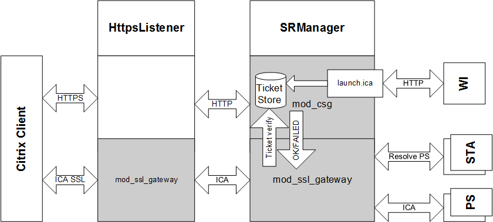
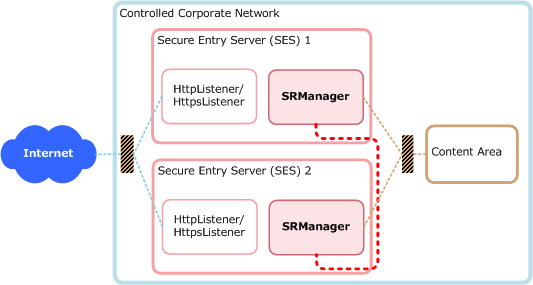

Copyright © 2026 United Security Providers AG
This document is protected by copyright under the applicable laws and international treaties. No part of this document may be reproduced in any form and distributed to third parties by any means without prior written authorization of United Security Providers AG.
DOCUMENTATION IS PROVIDED "AS IS" AND ALL EXPRESSED OR IMPLIED REPRESENTATIONS AND WARRANTIES, INCLUDING BUT NOT LIMITED TO ANY IMPLIED WARRANTY OF MERCHANTABILITY, FITNESS FOR A PARTICULAR PURPOSE OR NON-INFRINGEMENT, ARE DISCLAIMED TO THE EXTENT PERMISSIBLE UNDER THE APPLICABLE LAWS.
Table of Contents
This is the Administration Guide for the USP Secure Entry Server® HTTP Secure Proxy. Targeted to System Administrators, this document contains installation, configuration and operating information.
The information in chapters "Configuration Reference" and "Configuration Guide" enables you to configure the system according to your security policy and add new applications.
The Appendix contains additional information including document references.
The HTTP Secure Proxy (HSP) implements the HTTP Protocol Support for the USP Secure Entry Server® (SES) . The HTTP Secure Proxy bases on the SES Base System which provides protocol-independent services such as system backup and restore functionality.
The SES implements and ensures security through enforced authentication. The SES does not perform authentication itself but checks each client request.
For HTTP applications, the first request is forwarded to the login service (SLS). After successful authentication, requests are handed over directly to the applications.
The SES is the only system directly accessible and visible from the Internet. All other SES Infrastructure components are hidden behind it. To be able to safeguard application servers and infrastructure elements, all communication terminates on the SES. It establishes connections to the inner side on behalf of Internet clients.
HttpListener
The HttpListener supports initial browser requests and redirect to HTTPS.
HttpsListener
The HttpsListener is the main entry point which terminates the TCP connection, provides filtering, policy control, content compression, and request prioritization.
SRManager
The SRManager features session management, access control, fine granular policy control, load balancing, URL mapping and backend integration.
Table 1. Glossary
Term | Definition |
|---|---|
Component | HttpListener (htl), HttpsListener (hts), SRManager (srm). |
Instance | A specific instance of <component>, where a component can be started multiple times. |
Session Credentials | The HTTP Secure Proxy (HSP) credentials which allow access to a specific access area and URL. Represented as a cookie named "SessionCredentials", see also table "Session Types". The session control keeps this cookie inside the HSP and it is never sent to the client. See section "SRManager - Session Control Directives" for details. |
Environment Variable | If we talk about environment variables, we always mean variables set by mod_setenvif. mod_setenvif internal variables like Request_URI, Remote_Addr or Local_Addr are not environment variables! |
The Components of the HSP are based on Apache Web Server extended with mod_ssl, which provides SSL support.
Each HSP component uses a subset of all available Apache modules. Most modules are statically linked but some (marked as "optional") can be loaded as dynamic shared library (DSO) modules.
The table below lists the available standard modules and suggest their usage within the HSP. The table lists also optional HSP modules which may be loaded on demand.
Table 2. Standard Apache modules
Module | ||
|---|---|---|
Description | Apache Core Features | |
Exists in | All HSP Components. | |
Recommended Usage | Use to configure core features such as virtual servers, listener ports and error pages | |
Description | This module configures the Apache logging facility. | |
Exists in | All HSP Components. | |
Recommended Usage | Use to configure log files. This module allows to configure different log files per virtual server. Further, it is possible to add HTTP headers to the access log. See also section "Events". Please note that customizing log settings may conflict with the HSP Manager and B1 Security. See [APACHE] for details. To stay on the safe side, the following rules must be obeyed:
| |
Description | This module provides directive for determining the types of files from the filename and for association of handlers with files. | |
Exists in | All HSP Components | |
Recommended Usage | Use directive "SetHandler" to select handlers (modules) per location. Do not use other directives | |
mod_include | Description | This module introduces support for SSI /SHTML |
Exists in | SRManager | |
Recommended Usage | Use to evaluate SSI statements in SHTML pages. NOTE: For security reasons, the SSI "#exec" tag is deactivated. | |
Description | This module provides for mapping different parts of the host file system in the document tree, and for URL redirection. | |
Exists in | All HSP Components | |
Recommended Usage | Can be used to map URLs within applications. Do not try to map HSP internal URLs, such as the cookie-check URL. Use only with USP support. Note: HSP Access Control is enforced after mapping URLs. | |
mod_authz_host | Description | This module provides access control based on client hostname, IP address, or other attributes of the client request. |
Exists in | Http(s)Listener | |
Recommended Usage | Used for host-based access restrictions but usually not used in standard installations since the HSP introduces its own Access Control facility. | |
mod_memm | Description | Memory management and monitoring tool |
Exists in | Http(s)Listener and SRManager (optional module for prefork binaries) | |
Usage Notes | An optional module provided by United Security Providers used to control the memory consumption of processes. It measures the memory consumption (heap) of each Apache child process and terminates the process if its memory size has exceeded a multiple of its initial memory size. The initial memory size multiply by a factor (MEMM_Factor directive, default is 10) defines the maximum allowed memory size. The process is terminated gracefully when reaching this limit. Memory size check is performed every eightieth request performed by the child process). You may use the command line tool "memm" in order to calculate a useful MEMM_Factor and server settings. The module must only be used for prefork binaries. | |
Description | This module provides a rule-based rewriting engine to rewrite requested URLs on the fly | |
Exists in | Http(s)Listener | |
Recommended Usage | Use to configure redirects based on client attributes, such as the HTTP "User-Agent" Header. Optional: Use to implement HTTP access for Web Crawlers. | |
Description | This module provides the ability to set environment variables based upon attributes of the request. | |
Exists in | All HSP Components | |
Usage Notes | Optional: Use to handle browser implementation errors. | |
Description | Provides the SSL (HTTPS) protocol support. | |
Exists in | All HSP Components | |
Usage Notes | Enable SSL in HttpsListener only. | |
Description | This module provides for loading of executable code and modules into the server at start-up or restart time. | |
Exists in | All HSP Components | |
Recommended Usage | Use to load additional modes into the HSP. Please note that such a module must support mod_ssl. | |
mod_jk | Description | Tomcat-Apache plug-in that handles the communication between Tomcat and Apache. |
Exists in | SRManager (optional module) | |
Usage Notes | Requires mod_dir | |
mod_dir | Description | This module provides for "trailing slash" redirects and serving directory index files. |
Exists in | SRManager (optional module) | |
Usage Notes | Required by mod_jk | |
mod_cache/ mod_disk_cache | Description | Module for content caching |
Exists in | SRManager (optional module) | |
Usage Notes | Be very careful when using this module. It must never be used for non-public content. You have to enable caching using the HSP_AllowCache directive. | |
mod_auth* | Description | Used to implement basic auth in order to secure access to the HSP info portal |
Exists in | SRManager (optional module) | |
Usage Notes | see section Info Portal | |
mod_qos | Description | Used to implement request prioritization and application specific request filters |
Exists in | HttpsListener and SRManager (optional module) | |
Usage Notes | See section "Http(s)Listener - Request Limitations" for information about available commands. | |
mod_security | Description | Used to specify application specific request filters |
Exists in | All HSP Components (optional module) | |
Usage Notes | - | |
mod_deflate | Description | Allows content compression between the client and the HSP |
Exists in | Http(s)Listener | |
Usage Notes | Ensure that you filter the Accept-Encoding header, see the sample configuration file for the HttpsListener for details. | |
mod_hsp_info | Description | see section Info Portal |
Exists in | SRManager (optional module) | |
Usage Notes | - | |
mod_airlock_api | Description | Implements the proprietary phion airlock authentication interface in order to integrate to login services and applications which implement this interface. |
Exists in | SRManager (optional) | |
Usage Notes | - | |
mod_redirect_id | Description | Enforces client redirect (302) for certain request patterns. |
Exists in | SRManager (optional module) | |
Usage Notes | Example: used to prevent a well known Adobe Acrobat reader vulnerability | |
mod_unique_id | Description | Generates unique requests ID's. |
Exists in | All HSP Components (optional module) | |
Usage Notes | Required by mod_security. | |
mod_soap_filter | Description | Web service security module providing validation mechanism for SOAP and XML messages. |
Exists in | Http(s)Listener (optional) | |
Usage Notes | Use the provided schema and naming definition files to initialize the module. | |
mod_autoindex | Description | Supports directory listing. |
Exists in | SRManager (optional, USPHSPmin package only) | |
Usage Notes | Requires the directive "HSP_AllowIndexes on" in the per server configuration in order to enable mod_autoindex. | |
mod_setenvifplus | Description | The mod_setenvifplus module allows you to set environment variables according to whether different aspects of the request match regular expressions you specify |
Exists in | HttpListener, HttpsListener, SRManager | |
Usage Notes | See http://modsetenvifplus.sourceforge.net/ for further details | |
mod_http2 | Description | This module provides HTTP/2 (RFC 7540) support for front-end connections. |
Exists in | HttpListener, HttpsListener | |
Usage Notes | See https://httpd.apache.org/docs/2.4/mod/mod_http2.html for further details. |
Documentation on standard Apache Modules can be found at [APACHE], Documentation on mod_SSL can be found at [MOD_SSL].
The table below explains the columns used in the configuration reference tables
Table 3. Configuration Reference- Column Description
Column | Description |
|---|---|
Directive | Specifies the directive which can be used in the Apache configuration file. Some directives can be set or overridden by the login servers using "Session Attributes". For these directives, the name of the "Session Attribute" is the same as the directive. |
Validity | Defines at which scope in the apache configuration file this directive can be used and if it can be specified using a Session Attribute.
|
Description | Description of the directive |
Table 4. Http(s)Listener Core directives
Directives (Listeners) | Validity | Description |
|---|---|---|
HSP_HostIdPath | Global | Defines the file containing the HSP host identifier. The HSP identifier is used as a unique identifier for all components located on this host. This identifier is used for logging and correlation. Syntax: HSP_HostIdPath <pathname> Default is /etc/usp/hsp/hostid. Example: HSP_HostIdPath /etc/usp/hsp/hostid The system’s host id (gethostid(3C)) is used as the default value if no such file is specified or has not been found. |
HSP_AbsoluteRedirects | Virtual Server | Controls generating absolute redirects. "Off" means, that relative (no host name) redirects are sent to the client, "on" means that absolute (including schema and host name) redirects are sent to the client, e.g. for the cookie check. Can also been set using the ‘BrowserMatch’ directive. Syntax: HSP_AbsoluteRedirects on|off Default: off |
HSP_InstanceId | Global | Defines the server instance identifier. The HSP identifier is used by all components as a unique instance identifier for request and client correlation. Syntax: HSP_InstanceId <string> Example: HSP_InstanceId srm Default is the parent process PID. |
HSP_TraceModules | Global | Enables tracing for the specified modules and events. Syntax: HSP_TraceModules <module:flags> … where module can be one of the following:
flags is a bitset consisting of the following flags:
Do not use in productive systems. Example: HSP_TraceModules mod_secure_request_manager_gateway:0cff NoteTracing information is logged with log level "info", therefore the log level using directive "LogLevel" has to be set to "info" or "debug". |
HSP_TraceMagicValue | Global | Set the flag which is set for all the modules if HSP_TraceMagic is set to |
Global | Enables selective tracing of clients sending a cookie with a "magic" value. The magic value is used within the log files to identify the trace messages. Syntax: HSP_TraceMagic <value> <value> must be one of the following values
The client needs to send a Cookie with the following format:
The value <magic> is used to identify the client within the log files. NoteSince this mechanism uses a cookie to track the client, the cookie HSP_TraceMagic must be configured with the SE_IntCoookie_PersistentCookies directive within the SRManager otherwise the cookie will be removed by the header filter. | |
HSP_TraceOptions | Global | Controls tracing. Syntax: HSP_TraceOptions <option>,<option>,…. where option can be one of the following:
NoteUsing this directive may confuse log file adapters and monitoring tools since the log message do not use the apache format. |
HSP_ClientHost | Virtual Host | Changes the default HTTP Host specification which is used by the client to access this virtual host. Affects rewriting the HTTP "location" header in HTTP responses using status 302. This directive can be used to support port mapping which violates RFC2616. If this directive is not set, host and port specified using directives "VirtualHost", "Port", "Listen" or "Bind" are used to rewrite HTTP "Location" headers sent by application servers. Syntax: HSP_ClientHost <host[:port]>|"$" If "$" is used, the HTTP "Host" header sent from client is used. Please note that some HTTP client implementations do not add the port to this header. If the client does not send a HTTP "Host" header, a relative HTTP "Location" header is generated. |
HSP_Chroot | Global | Implements a chrooted server. Does usually not require any configuration or environment changes. Syntax: HSP_Chroot <path> |
HSP_DeflateRequestBody | Environment Variable | Activate input filter for deflating request body before any validator or body rewriter module Syntax: SetEnvIf <attribute> <regex> HSP_DeflateRequestBody Example: SetEnvIf Content-Encoding "gzip" HSP_DeflateRequestBody |
HSP_RedirectMatch | Virtual Host | Directive works similar to RedirectMatch of mod_alias but allows to use additional variables within the destination URL. If the ‘keep-query’ flag is specified, query parameters from the original request are preserved also if query parameters are specified in the redirect target ‘url’. Variables:
Syntax: HSP_RedirectMatch <regex> <url> [keep-query] Example: HSP_RedirectMatch /(.*) https://$SERVERNAME/$1 keep-query |
HSP_DoubleSlashRedirects | Virtual Host | When a redirect response is generated with a target location starting with "double slashs" (absolute URL without protocol identifier) HSP will reduce the target to a single slash if not disabled. Syntax: HSP_DoubleSlashRedirects ‘on’|‘off’ Default is "on". |
HSP_DoubleSlashRedirects_Exclude | Virtual Host | This directive allows to define target hosts for which redirect URLs without protocoll identifier should be allowed without disabling the whole feature. A List of known-good-host can be specified as regex. Syntax: HSP_DoubleSlashRedirects_Exclude <regex> Example: HSP_DoubleSlashRedirects_Exclude "www\.trusted\.org" |
Table 5. Http(s)Listener - Request/Response Filter Directives
Directives (Listeners) | Validity | Description |
|---|---|---|
Location | Maximum number of bytes allowed to be transferred to the server. Syntax: RC_MaxPostSize <bytes> Default is "49152" | |
RC_MaxPostSize_Status | Location | Status Code which is returned if RC_MaxPostSize is exceeded. Syntax: RC_MaxPostSize_Status <status code> |
RC_MaxPostSize_StatusMsg | Location | If you have defined RC_MaxPostSize_Status you can optionally specify a status message that should be sent to the client. Syntax: RC_MaxPostSize_StatusMsg <status msg> Example: RC_MaxPostSize_StatusMsge "<html><head><title>RC_MaxPostSize_StatusMsg</title></head> <body>RC_MaxPostSize exceeded</body></html>" |
RC_MaxResponseSize | Location | Maximum number of bytes allowed to be transferred from the server. Syntax: RC_MaxResponseSize <bytes> Default is no limitation |
Virtual Server | Restricts the allowed HTTP method for the virtual server. Methods not defined by this directive are denied and result in a "405 Method Not Allowed" response. Multiple methods may be specified for each server configuration. Use the "+" prefix to allow a method and the "-" prefix to deny the specified method. The method TRACE can’t be enabled and the server response for TRACE requests is always a 403 forbidden. Syntax: RF_ServerAllowMethod “+”|“-”<method> Example: RF_ServerAllowMethod -POST +PUT Default is "+GET +HEAD +POST" | |
Location | Restricts the allowed HTTP method for the location. This directive takes only effect if it has explicitly defined for a location. This filter is applied after the method filter defined by RF_ServerAllowMethod. Methods denied by RF_ServerAllowMethod can’t be allowed by this command. Methods excluded by this directive are denied and result in a "405 Method Not Allowed" response. Multiple methods may be specified for each server configuration. Use the “+” prefix to allow a method and the “-” prefix to deny the specified method. The method TRACE can’t be enabled and the server response for TRACE requests is always a 403 forbidden. Syntax: RF_LocationAllowMethod “+”|“-”<method> Inheritance: Merges the per location configuration values. “+” and “-” adds and removes methods from the current location configuration. Example: RF_LocationAllowMethod -POST Default is "+GET +HEAD +POST" | |
Virtual Server | Pass phrase used to generate a symmetric key for URL encryption. Syntay: RF_UE_PassPhrase <string> | |
RF_UE_OldPassPhrase | Virtual Server | Defines a per-server secret which has been used in the past. Requests encrypted by an old pass phrase are decrypted and forwarded to the path defined by the RF_UE_OldPassPhraseErrorPage directive. The directive may be defined multiple times within the server configuration. Syntax: RF_UE_OldPassPhrase <string> |
RF_UE_OldPassPhraseErrorPage | Virtual Server | Defines a URL (path) to which a request is redirected if it has been encrypted by an old pass phrase. The received request line is passed via the specified query parameter. Syntax: RF_UE_OldPassPhraseErrorPage <path> <query>, Default are path=/srm-error-pages/Error500.html and query=ue_url. |
RF_UE_DecryptionFailureRedirect | Virtual Server | Defines a path to which a client gets redirected to in case of a decryption error. The optional setting "mode" allows to set a custom error page for path decryption errors (mode "path") and query string decryption errors (mode "query"). The mode "path|query" can be used for a common error page. If no mode is set the default is mode "path". Syntax: RF_UE_DecryptionFailureRedirect <path> [<mode>] Without the use of this directive the status code 404 is delivered on path decryption errors. However, on query string decryption errors the request is yet passed to the backend. |
Location | Controls URL encryption within JavaScripts, see also section "URL Encryption". This directive defines a function name whose parameter must be encrypted. Example JavaScript code:
Multiple function names may be specified for each location. Use the “+” prefix to add additional rules to a location or the “-” prefix to remove a rule. A name without a prefix disable configuration inherited form the upper location. The following function names are reserved and can’t be defined by RF_UE_JSFunction: "string", "catch", "if", "for", "while", "switch", and "with". Syntax: RF_UE_JSFunction [‘+'|`-’] <name> [<action> <pos>]
Example (see JavaScript example above): RF_UE_JSFunction +setField absolute 2 | |
Location | Controls URL encryption within JavaScripts, see also section "Encryption". This directive defines a variable name whose assigned values must be encrypted. Example JavaScript code: var url = root + "../action" + "?" + "password=1234";
var path = new String("../path");
Multiple variable names may be specified for each location. Use the “+” prefix to add additional rules to a location or the “-” prefix to remove a rule. A name without a prefix disable configuration inherited form the upper location. Syntax: RF_UE_JSVariable [‘+'|`-’] <name> [<action> <pos>]
Example (see JavaScript example above): RF_UE_JSVariable +url relative 2 RF_UE_JSVariable +url query 4 RF_UE_JSVariable +path absolute 2 | |
Location | Defines a regular expression a string must match in order to be recognizes as an URL when using JavaScript automatic encryption mode (defined by RF_UE_JSFunction or RF_UE_JSVariable ). This char set is used to detect a path pattern. Only one pattern may be defined per location. Syntax: RF_UE_JSCharset <regular expression> Inheritance: Inherited to sub-locations. Default: ^(http|/)[a-zA-Z0-9/\.\?#=:@;&%_\-]*$ | |
Location | Defines a regular expression a string must match in order to be recognizes as an URL when using JavaScript automatic encryption mode (defined by RF_UE_JSFunction or RF_UE_JSVariable). This char set is used to detect a path query only. Only one pattern may be defined per location. Syntax: RF_UE_JSQueryCharset <regular expression> Inheritance: A sub location having any RF_UE_* directive defined does not inherit the configuration from the upper location. Default: no pattern is defined. Example: | |
RF_UE_UrlExclPattern | Location | Defines a regular expression a URL (within the processed data stream) must match in order to be excluded from the URL encryption. An excluded URL is "normalized" to an absolute path. The pattern match is applied to the normalized path. Multiple patterns may be defined per location. Syntax: RF_UR_UrlExclPattern <regular expression> Inheritance: No configuration merge to sub location. A sub location having any RF_UE_* directive defined does not inherit the configuration from the upper location. Example: RF_UE_UrlExclPattern "^/images/([a-zA-Z].*|[1-9].*)\.(jpg|gif)$" This excludes all URLs in the stream matching ‘/images/*.jpg’ and ‘/images/*.gif’). |
RF_UE_DecodeHTML | Location | HTML decodes URL containing "special characters" before URL encryption. Please note that HTML responses sent to the client are generally forced to be HTML encoded otherwise special characters might be interpreted by the browser and could result in wrong URLs being used. Sample: The HTML-Response “<a href="foo.cgi?chapter=1§ion=2©=3&lang=en">…</a>” would be interpreted by the browser as “<a href="foo.cgi?chapter=1§ion=2©=3&lang=en">…</a>”. To become a correct Link, the application must HTML encode this kind of data: “<a href="foo.cgi?chapter=1&section=2&copy=3&lang=en">…</a>” The encrypted URL must contain the decoded HTML (which differs from what is being sent to the client) otherwise the additional ‘&’ would also lead to additional parameters being sent back to the application. By turning ‘on’ this directive, the SES handles this special browser behavior. Syntax: RF_UE_DecodeHTML "On" | "Off" Inheritance: Inherited to sub-locations. Default: off |
RF_UE_DecodeBody | Location | Enables decryption of query values within the HTTP request body. This directive is used in conjunction with RF_UE_EncodeQueryForm directive. See RF_UE_EncodeQueryForm about activation of HTML form data encryption. Syntax: RF_UE_DecodeBody "On"|"Off" Default: off |
RF_ChangeReqHeader | Location | Replaces a ‘search’ pattern (literal string) by the ‘replace’ pattern (literal string or environment variable defined using SetEnvIf when the replace pattern is prefixed by ‘$’) in the defined HTTP request header. Per default only the first occurrence is replace. The optional parameter “greedy” defines that all occurrences should be replaced. Supports only one rule per header. Syntax: RF_ChangeReqHeader <header name> <search> <replace> [greedy] Inheritance: No configuration merging to sub locations. A sub location having any RF_Change* or RF_SetEnvIf*Header directive defined does not inherit the configuration from the upper location. |
RF_ChangeReqHeaderReplace | Location | Replaces the ‘header’ by the defined ‘value’ in the request headers. The value may specify an environment variable defined using SetEnvIf if the value is prefixed by a ‘$’. The header is added to the request if it does not exist. Syntax: RF_ChangeReqHeaderReplace <header> <value> Inheritance: No configuration merging to sub locations. A sub location having any RF_Change* or RF_SetEnvIf*Header directive defined does not inherit the configuration from the upper location. |
RF_ChangeIfReqHeaderReplace | Location | Sets a HTTP request header if the specified environment variable matches the defined regular expression. The directive recognizes the occurrences of $1..$9 within the value argument and replaces them by the sub expressions of the defined regex pattern. Syntax: RF_ChangeIfReqHeaderReplace <variable> <regex> [!]<header>=<value> Inheritance: No configuration merging to sub locations. A sub location having any RF_Change* or RF_SetEnvIf*Header directive defined does not inherit the configuration from the upper location. |
RF_ChangeReqFixHeader | Location | Same as RF_ChangeReqHeader but applied later in the request processing (Apache fixup handler). |
RF_ChangeReqFixHeaderReplace | Location | Same as RF_ChangeReqHeaderReplace but applied later in the request processing (Apache fixup handler). |
RF_ChangeResHeader | Location | Same as RF_ChangeReqHeader but applied to a response header. |
RF_ChangeResHeaderReplace | Location | Same as RF_ChangeReqHeaderReplace but applied to a response header. |
RF_ChangeResHeaderAdd | Location | Adds the ‘header’ with the defined ‘value’ to the response headers. The value may be specified with an environment variable using SetEnvIf (environment variable is prefixed by ‘$’). The directive is processed before the RF_ChangeResHeader, RF_ChangeResHeaderReplace, RF_SetEnvIfResHeader, and RF_ChangeIfResHeaderReplace. Syntax: RF_ChangeResHeaderAdd <header> <value> Inheritance: No configuration merging to sub locations. A sub location having any RF_Change* or RF_SetEnvIf*Header directive defined does not inherit the configuration from the upper location. |
RF_SetEnvIfResHeader | Location | Creates an environment variable if the specified response header value matches the defined argument. Works similar to Apache’s Syntax: RF_SetEnvIfResHeader <header> <regex> [!]<variable>[=<value>] Inheritance: No configuration merging to sub locations. A sub location having any RF_Change* or RF_SetEnvIfResHeader directive defined does not inherit the configuration from the upper location. |
RF_ChangeIfResHeaderReplace | Location | Sets a HTTP response header if the specified environment variable matches the defined regular expression. The directive recognizes the occurrences of $1..$9 within the value argument and replaces them by the sub expressions of the defined regex pattern. Works contrariwise to RF_SetEnvIfResHeader. Syntax: RF_ChangeIfResHeaderReplace <variable> <regex> [!]<header>=<value> Inheritance: No configuration merging to sub locations. A sub location having any RF_Change* or RF_SetEnvIf*Header directive defined does not inherit the configuration from the upper location. |
Virtual Server | The server name returned to the client in the HTTP header "Server". If not defined, the default "Secure Entry Server" is used. With the value %OFF the header "Server" coming from the back-end (SRM, respectively) remains unchanged. Inheritance: A configured server name in the global scope is merged into the scope of virtual hosts. With the value %DEFAULT the server name in a virtual host can be reset to the default server name. Syntax: RF_FakeServerName <name> | |
Virtual Server | Restrict HTTP headers for the client. Headers denied by this directive are removed from the incoming request. Syntax: RF_ServerRequestHeaderDeny ([“+”|“-”] <header>)* Inheritance: Merges the deny input header list. ‘+’ and ‘-’ adds and removes headers. If no ‘-’ or ‘+’ is preceding the header name a new list is started (no merge). Example: RF_ServerRequestHeaderDeny +HSP_FOO_ -HSP_BAR_ HSP_HELLO_ Default: +HSP +SSL +ClientCorrelator +ConnectionCorrelator +HTTPS | |
Virtual Server | Explicit allow HTTP headers for virtual server. This directive overloads a Virtual Server RF_ServerRequestHeaderDeny directive. Syntax: RF_ServerRequestHeaderAllow ([“+”|“-”] <header>)* Inheritance: Merges the allow input header list. ‘+’ and ‘-’ adds and removes headers. If no ‘-’ or ‘+’ is preceding the header name a new list is started (no merge). Example: RF_ServerRequestHeaderAllow +HSP_FOO_ -HSP_BAR_ HSP_HELLO_ Default: +HSP_TS | |
Location | The same behavior like RF_ServerRequestHeaderDeny. This directive overloads the RF_ServerRequestHeaderAllow directive. | |
RF_LocationRequestHeaderAllow | Location | The same behavior like RF_ServerRequestHeaderAllow. This directive can not overload the RF_ServerRequestHeaderDeny directive, only the RF_LocationRequestHeaderDeny directive. |
Virtual Server | Restrict HTTP headers from the application server back to client. Headers denied by this directive are removed from the outgoing request. Syntax: RF_ServerResponseHeaderDeny ([“+”|“-”] <header>)\* Inheritance: Merges the deny output header list. ‘+’ and ‘-’ adds and removes headers. If no ‘-’ or ‘+’ is preceding the header name a new list is started (no merge). Example: RF_ServerResponseHeaderDeny +HSP_FOO_ -HSP_BAR_ HSP_HELLO_ Default: +HSP_SERVER_LOAD_INFO +HSP_AC_SESSION_ATTRIBUTES | |
Virtual Server | Explicit allow HTTP headers from the application server back to client. This directive overloads a Virtual Server RF_ServerResponseHeaderDeny directive. Syntax: RF_ServerResponseHeaderAllow ([“+”|“-”] <header>)* Inheritance: Merges the allow output header list. ‘+’ and ‘-’ adds and removes headers. If no ‘-’ or ‘+’ is preceding the header name a new list is started (no merge). Example: RF_ServerResponseHeaderAllow +HSP_FOO_ -HSP_BAR_ HSP_HELLO_ Default: +HSP_TS | |
Location | Note: The same behavior like RF_ServerResponseHeaderDeny. This directive overloads the RF_ServerRequestHeaderAllow directive. | |
RF_LocationResponseHeaderAllow | Location | Note: The same behavior like RF_ServerResponseHeaderAllow. This directive can not overload the RF_ServerResponseHeaderDeny directive only the RF_LocationResponseHeaderDeny directive. |
Virtual Server | Restrict HTTP header entries from client. Header entries denied by this directive are removed from the incoming request. Syntax: RF_ServerRequestHeaderEntryDeny <header> ([“+”|“-”] <entry>)* Inheritance: Merges the deny input header entry list. ‘+’ and ‘-’ adds and removes header entries. If no ‘-’ or ‘+’ is preceding the header entry name a new list is started (no merge) Example: RF_ServerRequestHeaderEntryDeny Accept-Encoding +gzip +compress | |
Virtual Server | Restrict HTTP header entries from the application server back to client. Header entries denied by this directive are removed from the incoming request. Syntax: RF_ServerResponseHeaderEntryDeny <header> ([“+”|“-”] <entry>)* Inheritance: Merges the deny input header entry list. ‘+’ and ‘-’ adds and removes header entries. If no ‘-’ or ‘+’ is preceding the header entry name a new list is started (no merge) Example: RF_ServerResponseHeaderEntryDeny Accept-Encoding +gzip +compress | |
Location | Note: The same behavior like RF_ServerRequestHeaderEntryDeny. | |
Location | Note: The same behavior like RF_ServerResponseHeaderEntryDeny. | |
Virtual Server | This directive enable ("On") or disable ("Log", "Off") the module for this server. Syntax: RF_Param "On" | "Off" | "Log" Inheritance: Virtual server settings overwrite global settings. Example: RF_Param Log Default: Off | |
Virtual Server | This directive allows GET requests without parameters. Syntax: RF_ParamGetAllow "On" | "Off" Inheritance: Virtual server settings overwrite global settings. Example: RF_ParamGetAllow Off Default: On | |
Virtual Server | This directive defines a new content-type based on an existing content-type. Existing content types are namely: application/x-www-form-urlencoded and multipart/form-data. Syntax: RF_ContentTypeMap <new content type> <existing content type> Inheritance: Virtual server settings overwrite global settings. Example: RF_ContentTypeMap myOwn/ContentType | |
Location | This directive defines the allowed characters. Syntax: RF_ParamByteRange <start> <end> Inheritance: A child location overwrites its parent’s location settings. Note: <start> must be lesser than <end> but not lesser 0, <end> must not be bigger than 255 Example: RF_ParamByteRange 32 128 Default: 0 255 | |
Location | This directive defines the whitelist of the allowed parameters. If a parameter is not allowed a 403 Forbidden is sent by the server. Syntax: RF_ParamWhitelist <path> ( <parameter> [ \\"=\\" [ <num> "-" <num> ] <regex> ] )\* Inheritance: A child location overwrites its parent’s location settings. Example: RF_ParamWhitelist /a/b param1=[32-255]\^hallo$ Note: There must be no whitespaces in the parameter expression. Default: All parameter which are not in the whitelist are denied. | |
Location | Note: Same syntax as RF_ParamWhitelist, but only logs the denied parameters and does not bloc them. | |
RF_Html_ContinueOnParseErr | Virtual Server | Defines whether to continue response processing on HTML parser error or not. "on" forces the continuation even an error occurs (unknown pattern). Syntax: RF_Html_ContinueOnParseErr on|off Default is on |
RF_Js_ContinueOnParseErr | Virtual Server | Defines whether to continue response processing on JavaScript parser error or not. "on" forces the continuation even an error occurs (unknown pattern). Syntax: RF_Js_ContinueOnParseErr on|off Default is on |
RF_Css_ContinueOnParseErr | Virtual Server | Defines whether to continue response processing on CSS parser error or not. "on" forces the continuation even an error occurs (unknown pattern). Syntax: RF_Css_ContinueOnParseErr on|off Default is on |
RF_SF_SoapFilter | Virtual Server | Activates SOAP message filtering for this server. Syntax: RF_SF_SoapFilter on|off |
Virtual Server | Defined trusted schemas (.xsd) used/referenced within application specific .wsdl files. Syntax: RF_SF_TrustedSchema <xsd file> | |
RF_SF_ResourceMapping | Virtual Server | Resources (for example Schema Files) imported from other Schema- or WSDL files by using <xsd:import schemaLocation="xy"…> need local mapping to files available on the SES’s filesystem. Syntax: RF_SF_ResourceMapping <location> <file> Import statements not mapped to local files result in the following error logged in the error_log: [error] Unable to resolve <location>. Please use RF_SF_ResourceMapping for local mapping |
Virtual Server | Defines a Variable linked to an WSDL schema file that could be later on referenced in RF_SF_AllowService directives. The WSDL file will be verified against the WSDL schema specified in the RF_SF_WSDLSchemaFile directive to assure its integrity. For validation of SOAP actions and parameter names, in general both rpc and wrapped document style WSDL files are supported (unwrapped document style is not supported). The optional parameter <ext-schema-file> is for indicating an external xml schema that contains parameter info for a document (wrapped) style WSDL (only needed when that information is not in the WSDL itself). Syntax: RF_SF_DefineApplication <alias> <xml name space> <wsdl file> [<ext schema file>] Example: "RF_SF_DefineApplication APPL1 urn:SampleWebService /opt/tarsec/TSHSP/HttpsListener2/conf/SampleWebServices.wsdl /opt/tarsec/TSHSP/HttpsListener2/conf/ext/SampleWebServices.xsd" | |
Location | Enables soap request validation for the location. Every POST request is validated (ignores content-type). Syntax: RF_SF_SoapValidator ‘on’|‘off’|‘xml’ Default is off. Log is currently not supported (same effect as off). Inheritance: Configuration is not merged to sub locations. | |
Location | Enables soap response validation for the location. Every response ist validated (ignores content-type). Syntax: RF_SF_SoapValidatorResponse ‘on’|‘off’|‘xml’ Default is off. Log is currently not supported (same effect as off). Inheritance: Configuration is not merged to sub locations. | |
Location | Defines Schemas used for XML-Validation. Multiple Schemas may be defined within a location to match incoming XML-(POST-)data. Validation will be done in the defined sequence (ascending). If no Schema file matches the incomming data, HTTP RC 500 will be returned to the client, resp. 302 to 500 for response validation Syntax: RF_SF_NoNsLocFile <xml name space> Default is none Inheritance: Configuration is not merged to sub locations. | |
Location | Defines the allowed soap versions. You may specify multiple versions for a location. Syntax: RF_SF_SoapVersion ‘soap11’|‘soap12’ Default is none Inheritance: Configuration is not merged to sub locations. | |
Location | Defines the allowed actions for an application name space defined by RF_SF_DefineApplication. Use ‘*’ for the SOAP operation name in order to allow any operation within the name space. Syntax: RF_SF_AllowService <alias> <operation> Inheritance: Configuration is not merged to sub locations. Note: see AC_AllowSoapMethod directive about per user authorization settings. | |
Location | Enables parameter name validation. Only parameter names defined by the wsdl are allowed for a specific method if enabled. This directive MUST be used together with the "RF_SF_DefineApplication" and "RF_SF_AllowService" directive Syntax: RF_SF_ReqParameterNameValidation ‘on’|‘off’ Default is off (any parameter name is allowed even it has not been defined by the wsdl). Inheritance: Configuration is not merged to sub locations. | |
Location | Excludes specific Content-Dispositions (by "name"-attribute) in a Multipart request from (XML-)validation Syntax: RF_SF_ExclContentDisp <n> Example: "RF_SF_ExclContentDisp integrity_customers" This excludes multiparts with the (Header) Content-Disposition: form-data; name="integrity_customers" WarningUse this with caution as incoming request headers may me faked and as such, the incoming data will not be validated ! | |
Location | Allows to define a set of whitelisted element or attribute nodes in a message. "name" defines the element or attribute (in XPath syntax) whose assigned value(s) must match the "regular expression". Use the "+" prefix to add additional elements/attributes to the set or the "-" prefix to remove it. Without a prefix, a new list is created for the corresponding location. Action "log" only logs the exception, while "deny" forces to return of the HTTP status code 403 (Forbidden) if the exception does not match. A whitelist is merged to sub locations. Syntax: RF_SF_ParameterPermit [+|-]<name> [log|deny] <regular expression> Example: RF_SF_ParameterPermit /method/name deny "\^example.permittedMethod\$" | |
Location | Counterpart to RF_SF_ParameterPermit which allows to define a set of blacklisted element or attribute nodes. The value of the defined element or attribute must not match the "regular expression". Action "log" only logs the prohibition, while "deny" forces to return of the HTTP status code 403 (Forbidden) if the prohibition applies. Syntax: RF_SF_ParameterDeny [+|-]<name> [log|deny] <regular expression> Example: RF_SF_ParameterDeny /method/name deny "\^example.deniedMethod\$" | |
Location | Defines the maximum recursion of XML Elements in a message to prevent DOS attacks. Syntax: RF_SF_MaxRecursionLevel <n> Default is 40 Inheritance: Configuration is merged to sub locations. | |
Virtual Server or Location | Defines a validation rule using regular expressions. The regular expression string may include other rules using variables surrounded by "${" and "}". Syntax: RF_HdrValidatorRule <name> <regex_string> Inheritance: Global per server configuration can be used within locations to build new rules or can be overwritten by local rules. A set of default rules are included with the HSP packages. Uses these rules (or a subset of) to enforce RFC compliance. | |
Virtual Server | Defines rules and actions for incoming (request) headers on a per server basis. Syntax: RF_SrvReqHdrValidate <header name> <action[‘|’<action>]> <rule>
NoteServer header validation is done before any location header validation. You can harden a server header validation with a location header validation.You can not weaken a server header validation with a location header validation. | |
Virtual Server | Defines rules and actions for outgoing (response) headers on a per server basis. Syntax: RF_SrvResHdrValidate <header name> <action[‘|’<action>]> <rule>
NoteServer header validation is done before any location header validation. You can harden a server header validation with a location header validation.You can not weaken a server header validation with a location header validation. | |
Location | Same function as the directive RF_SrvReqHdrValidate but on a per location basis. | |
Virtual Server or Location | Iterates through all RF_HdrValidatorRule directives within the server configuration, resolves and compiles the rules. An error message is written to stderr when a rule can not be verified correctly. Use this command once when defining new rules before adding validation directives like RF_SrvReqHdrValidate or RF_SrvResHdrValidate. | |
Environment Variable | This environment variable enables the match parser for URL encryption. Syntax: RF_UE_MatchParser="[path] [query]" Example: SetEnvIf Content-Type "application/x-javascript" RF_UE_MatchParser=path | |
Environment Variable | This environment variable enables the inline match parser for URL encryption. With the value "match-parser-only" the JavaScript parser for inline JavaScripts is deactivated. Syntax: RF_UE_InlineMatchParser=match-parser-only | on Example: SetEnvIf Content-Type "text/html" RF_UE_InlineMatchparsre=match-parser-only | |
Location | Defines one or more pattern for URL encryption. Syntax: RF_MatchParserRegex "<regex>" Example: RF_MatchParserRegex “(\'[^\']*\')” | |
Location | Defines a whitelist for the found patterns. Syntax: RF_MatchParserWhitelist “<regex>” Example: RF_MatchParserWhitelist “http://.*” “/.*” | |
Location | Defines a blacklist for the found patterns. Syntax: RF_MatchParserBlacklist “<regex>” Example: RF_MatchParserBlacklist “uEtTr.*\$\$~UuE” | |
HGW_ClientRestrictionMaxRequestRate | Virtual Server | Activate the ClientRestriction rules with the given number of requests per a given time. With this filter it is possible to limit the number of requests a client is allowed to make for a given time. There are two possible actions if the limit is reached either all requests after the limit get dopped and a message is written to the log or only a message is written to the log file. Syntax: HGW_ClientRestrictionMaxRequestRate <REQUESTS> <TIME> <ACTION>
Example: HGW_ClientRestrictionMaxRequestRate 1000 60 DROP This example allows 1000 requests within a minute for each client. If a client requests more pages within one minute, surplus requests get dropped. |
HGW_ClientRestrictionIdentityHeader | Virtual Server | Define a header name that is used to identify a client. This is required if clients can not be identified by their IP address, e.g. when using a load balancer. If this directive is not set, clients are identified by IP address. Syntax: HGW_ClientRestrictionIdentityHeader <HEADER> Example: HGW_ClientRestrictionIdentityHeader FAKEID This searches for a header with name FAKEID and uses its value to identify the corresponding client. |
HGW_ClientRestrictionExceptionRequestRate | Virtual Server | This directive allows setting special rules for defined clients. This overwrites the values defined with the HGW_ClientRestrictionMaxRequestsRate. Syntax: HGW_ClientRestrictionExceptionRequestRate <ID> <REQUESTS> <ACTION>
Example: HGW_ClientRestrictionExceptionRequestRate 192.168.1.10 777 LOG With the given example directive the client "192.168.1.10" is allowed to access 777 times instead of the global defined value and if her reaches this limit the client will not be dropped instead only a log message will be written. |
ICAP The ICAP filter module is explained in more detail in section "ICAP Request and Response Modification". Some additional directives are only available in the SRManager, see section "Table 26: SRManager - Request Filter Directives". | ||
ICAP_Host | Location | Defines the server name and port ("host:port") to send the ICAP request to. In connection with failover, several hosts can be defined by using this directive multiple times. Syntax: ICAP_Host REQMOD|RESPMOD <host>:<port> <service> Example: "REQMOD 127.0.0.1:4488 /av" Note: To enable ICAP the Environment Variable ICAP_REQMODE resp. ICAP_RESMOD must be set to "ON". Example: SetEnvIf Request_URI "/path/location" ICAP_REQMOD=ON |
ICAP_ConnectTimeOut | Location | Within this time, a configured server must accept the connection. If it is a SSL connection, the socket must not be Idle more than the specified time during the SSL Handshake. If the socket for the SSL handshakes timeouts within this time, a OpenSSL syscall error is returned. Syntax: ICAP_ConnectTimeOut REQMOD|RESPMOD <seconds> Default value is 10 (seconds). |
ICAP_TimeOut | Location | Specifies timeout for ICAP requests and responses. Syntax: ICAP_TimeOut REQMOD|RESPMOD <seconds> Default value is 120 (seconds). |
ICAP_EnableSSLServerCert | Location | Use SSL (Version 3) when connecting to the server and ensure that the presented server certificate is signed by the configured Certification Authority ("CA=<PEMfile>"). Optionally, verify that the server certificate’s common name corresponds to the configured values ("CN='servername'"). Multiple "CN='servername\' are supported. In order to allow any server certificate, configure the special value "ALLOW_ALL". Syntax: ICAP_EnableSSLServerCert REQMOD|RESPMOD (<ca file>\ <cn>*) | ALLOW_ALL* Example 1: REQMOD ALLOW_ALL Example 2: RESPMOD CA=/opt/allowed/ca1.PEM CN=‘devhost.org.com’ Example 3: REQMOD CA=/opt/allowed/ca1.PEM CN=‘devhost.org.com’ CN=‘other.org.com’ |
ICAP_ClientCert | Location | Use the configured client certificate and private key ("CERT=<PEMfile> PKEY=<PEMfile>") for SSL client authentication if requested by the server. Syntax: ICAP_ClientCert REQMOD|RESPMOD CERT=<cert-file> PKEY=<private key file> Example: REQMOD CERT=/opt/cert/client/client.PEM PKEY=/opt/pkey/client/clientkey.PEM The private key must not be password protected. |
ICAP_ErrorPage | Location | Set error pages to map ICAP errors to. Syntax: ICAP_ErrorPage REQMOD|RESPMOD <status-code> <path-to-error-page> Example: REQMOD 500 /srm-error-pages/500.shtml |
ICAP_ReqActionIf | Location | This directive defines a conditional action based on and embedded http headers and environment variables for REQMOD. Syntax: ICAP_ReqActionIf <conditions> <actions> [<info>] conditions: <element>"&&"<element> element: icap.status|icap.<header>| icap.http.res.status|icap.http.res.<header>| icap.http.req.line|icap.http.req.<header>|<env-var> ["=~"|"!~"|"=="|"!="] <regex> actions: log|declined|error|bad|forbidden|ok|[!]<env-var>[=<value>] Example: ICAP_ReqActionIf icap.status=~200&&icap.http.res.status=~403&&icap.http.res.x-virus==detected forbidden|log "Virus detected" |
ICAP_ResActionIf | Location | This directive defines a conditional action based on ICAP and embedded http headers and environment variables for RESPMOD. Syntax: ICAP_ResActionIf <conditions> <actions> [<info>] conditions: <element>"&&"<element> element: icap.status|icap.<header>| icap.http.res.status|icap.http.res.<header>| icap.http.req.line|icap.http.req.<header>|<env-var> ["=~"|"!~"|"=="|"!="] <regex> actions: log|declined|error|bad|forbidden|ok|[!]<env-var>[=<value>] Example: ICAP_ResActionIf icap.status=~200&&icap.http.res.status=~403&&icap.http.res.x-virus==detected forbidden|log "Virus detected" |
ICAP_SMFileAndSize | Global | Optional directive that specifies the semaphore file path for shared memory. If defined, it is used e.g. for caching ICAP OPTIONS response headers (performance improvement). Should be located in the Surrender's "logs" directory. The file name is suffixed by the process id of the server main process. The memory size in bytes must be specified in brackets. See also section "Client Data Store Settings". Example: ICAP_SMFileAndSize /var/SRManager/logs/icap_shmht_lk(67108864) Default size is 1024kB |
ICAP_DefaultOptionsTTL | Location | This directive defines the Options-TTL to use if the ICAP server does not return an Options-TTL header. Syntax: ICAP_DefaultOptionsTTL <seconds> Example: ICAP_DefaultOptionsTTL 86400 Default value is 3600 seconds (1 hour) |
ICAP_HideHeader | Location | This directive defines a header not to send to the ICAP server if the given regex matches the header value. Syntax: ICAP_HideHeaderREQMOD|RESPMOD <header> <regex> Example: ICAP_HideHeader RESPMOD referer .* |
ICAP_FO_Enable | Location | This directive enables ICAP failover. Unless stickiness is defined with other directives, hosts are tried round robin and given a penalty count if they do not respond. Syntax: ICAP_FO_Enable REQMOD|RESPMOD on|off Example: ICAP_FO_Enable RESPMOD on |
ICAP_FO_Penalty | Location | This directive defines the penalty count that is set on an unresponsive host (default is 10). Hosts with a penalty are skipped in round robin for the number of times set as penalty. Syntax: ICAP_FO_Penalty REQMOD|RESPMOD <penalty> Example: ICAP_FO_Penalty RESPMOD 20 |
ICAP_FO_SoftSticky | Location | This directive defines the soft sticky host (first host has index 0). Requests go first to the soft sticky host unless it has a penalty. Syntax: ICAP_FO_SoftSticky REQMOD|RESPMOD <host index> Example: ICAP_FO_SoftSticky REQMOD 2 |
ICAP_FO_SyncReqRespmod | Location | This directive defines that REQMOD and RESPMOD requests go to the failover host with the same index. Requires that the same number of ICAP hosts are defined for REQMOD and RESPMOD, as well as the same connect timeout, and that all other ICAP failover settings are identical for REQMOD and RESPMOD. Syntax: ICAP_FO_SyncReqRespmod on|off Example: ICAP_FO_SynReqRespmod on |
ICAP_FO_SMFileAndSize | Global | Specifies the semaphore file path for shared memory. Should be located in the Surrender's "logs" directory. The file name is suffixed by the process id of the server main process. The memory size in bytes must be specified in brackets. See also section "Client Data Store Settings". To take effect a restart is needed. Graceful restart will not be sufficient to activate this setting. Example: ICAP_FO_SMFileAndSize /var/SRManager/logs/icap_fo_shmht_lk(67108864) Default size is 1024kB |
Table 6. Http(s)Listener- HTTP 1.1 Gateway Directives
Directives (Listeners) | Validity | Description |
|---|---|---|
HGW_Host | Location | Defines the hostname (or IP address) and port of the SRManager virtual host to which the incoming request should be passed. When using a hostname, the name must be the same as the value of the "ServerName" directive defined in the corresponding virtual host configuration of the SRManager. When using an IPv6 address, the address must be enclosed in square brackets. Syntax: HGW_Host <host>:<port> Example: "127.0.0.1:4488" Example: "[::1]:4488" |
Location | Specifies whether the scheme of the location header on backend redirections is kept or not. Per default, the URI scheme is rewritten to the scheme of the received request. Syntax: HGW_KeepAsRedirectScheme On|Off Default: Off Example: HGW_KeepAsRedirectScheme On | |
Location | A list of HTTP headers that are passed to the application server. Headers not in this list are stripped from the request. Entries starting with ‘%’ are replaced with all headers defined for this alias. See directive "HGW_ShowAliases". Entries starting with ‘-’ are removed from the list, entries prefixed with ‘+’ are added. In addition, wildcards for header names can be specified, e.g. with “Foo*” all headers starting with the substring “Foo” are let through. A single star “*” allows to pass all headers to the back-end. In conjunction with wildcards single headers can be excluded with a preceding exclamation mark, e.g. !Foo2 ensures that the header Foo2 is withheld even though wildcards exists. Inheritance: Configuration values are merged to sub-locations. ‘+’ adds and ‘-’ removes headers from the merged configuration. If any of the values are not prefixed by ‘+’ or ‘-’, the settings of the current location overrides the setting of the parent location. Syntax: HGW_RequestHeaders ['+'|'-'] (('%'<Alias>|<Headers>['*'])* | *) | !<Header> Example: | |
Virtual Server | Restrict HTTP header entries to application server. Header entries denied by this directive are removed from the incoming request. Syntax: HGW_ServerRequestHeaderEntryDeny <header> ([“+”|“-”] <entry>)* Inheritance: Merges the deny input header entry list. ‘+’ and ‘-’ adds and removes header entries. If no ‘-’ or ‘+’ is preceding the header entry name a new list is started (no merge) Example: HGW_ServerRequestHeaderEntryDeny Accept-Encoding +gzip +compress | |
Location | The same behavior like HGW_ServerRequestHeaderEntryDeny. | |
HGW_Allow401 | Location | A value of "On" disables the default behavior of mapping an HTTP response code of 401 (Not Authorized) from the server to the code 500 (Server Error). A value of "RC=<n>" also avoids a server error, but changes the response code to the value <n> (allowed range is 200..599). Example: "HGW_Allow401 RC=403" |
HGW_AllowCustomStatusLine | Location | Sometimes, an application server uses a non standard HTTP response line with a response code in defined by RFC2616. Such a response line get replaces by a "500 Internal Server Error" response line by default. You may allow any response codes using this directive. Syntax: HGW_AllowCustomStatusLine ‘on’|‘off’ |
Location | Not available in the HttpsListener | |
HGW_ClientCert | Location | Not available in the HttpsListener |
HGW_SSLHeaders | Location | A list of (SES internal) SSL headers which are generated by the HttpsListener (Valid header names are listed in section "Sample Configuration Files") HTTPS headers not contained in this list will not be set. Aliases can be used, see directive “HGW_ShowAliases”). |
HGW_SSLFingerprintDigest | Location | Specifies the message-digest-algorithm the SSLFingerprint header will be computed with. For a list of supported algorithms, refer to the OpenSSL documentation or invoke the system command 'openssl list-message-digest-algorithms\' Syntax: HGW_SSLFingerprintDigest md5|sha1|sha256|… Example: HGW_SSLFingerprintDigest sha1 Default: md5 |
HGW_ShowAliases | Global | Show all available header group alias definitions and exit. The following command prints all definitions to stdout: %> bin/httpdctl start -args -C HGW_ShowAliases |
Location | "On" specifies, that the Http(s)Listener passes a HTTP "Expect: 100-continue" message to the server (SRManager) and does not send a "100 Continue" response the client itself. If "Off" has been specified, the Http(s)Listener answer by a "100 Continue" response itself and suppress the message from the SRManager. Default is "on". | |
HGW_OutConnectionExpiry | Location | Controls reuse of outgoing HTTP connections (HTTP Keep-Alive). Syntax: HGW_OutConnectionExpiry [timeout=<secs>] [ttl=<secs>] [maxrequests=<n>] timeout specifies the maximum time in seconds after which an idle outgoing conntion is reused. This value is the counter-part of the Apache Timeout directive. ttl specifies the life time of the connection. If the connect is older than this value, it is not reused for new requests. maxrequests specifies the maximum number of request to perform on a outgoing connection. Default values are: timeout=10 ttl=30 maxrequests=300 |
Virtual Server | Controls DNS lookup policy. Syntax: HGW_DNSPolicy “Startup”|“Request” For HttpsListener, this value should be left to the default (Startup). See SRManager commands for more details. Default is value is Startup | |
HGW_ConnectTimeOut | Location | Within this time a configured server must accept the connection. For SSL connections see the additional directive HGW_SSLConnectTimeOut. Syntax: HGW_ConnectTimeOut <seconds> If Failover is enabled, HGW may try to connect multiple servers within this time. See "6.16 Fail-Over and Load-Balancing Configuration" for Details. Default value is 10 (seconds). |
Location | Specifies timeout for requests and responses. Syntax: HGW_TimeOut <seconds> Depending on failover settings, the request may be retried on a different server when this time-out is reached. See "6.16 Fail-Over and Load-Balancing Configuration" for Details. Overrides the Apache "Timeout" directive. Default value: Value set by "Timeout" directive. | |
HGW_RequestBodyBuffer | Location | Sets the buffer size for forwarding request bodies from client to application servers. Syntax: HGW_RequestBodyBuffer <bytes> For HttpsListener, this value should be left to the default. Default value is 8192 (i.e. 8 KB). Maximum allowed value is 209715200 (i.e. 200 MB). CautionWhen increasing the maximum allowed request body buffer size keep in mind that the request body will be stored in memory during processing the request. Values larger than 1048576 (1 MB) are not recommended. |
HGW_ResponseBodyBuffer | Location | Sets the buffer size for forwarding response bodies from application servers to client. Syntax: HGW_ResponseBodyBuffer <bytes> For HttpsListener, this value should be left to the default. Default value is 8192 (i.e. 8 KB). Maximum allowed value is 52428800 (i.e. 50 MB). CautionWhen increasing the maximum allowed response body buffer size keep in mind that the response body will be stored in memory during processing the request. Values larger than 1048576 (1 MB) are not recommended. |
Location | Forces immediate data flush when the HGW_ResponseBodyBuffer bytes have been received. Syntax: HGW_ResponseBodyImmediateFlush on|off Default is off, the Apache default (SendBufferSize) buffer size is used to determine when the data is sent to the client. | |
Location | Sets the HSP to content transparent mode handling. If an application server does not set a Content-Type the default behavior is that the apache does set a configured Content-Type. With this directive the apache does also not set a Content-Type Syntax: HGW_TransparentContentType "On" | "Off" Default is Off | |
Location | If this directive is set to "on", HSP reads the response from the application server in non-blocking mode. This directive is required for OAW application integration. This directive only makes sense in combination with "HGW_ResponseBodyImmediateFlush on". Syntax: HGW_ResponseBodyNonBlocking "On" | "Off" Default is Off | |
Location | If this directive is set to "on", HSP reads the request from the client in non-blocking mode and will send it immediately to the application server. Syntax:HGW_RequestBodyNonBlocking "On" | "Off" Default is Off | |
HGW_ChunkedBuffering | Location | If this directive is set to "off", HSP does not cache the received data from the application but will send it immediately to the client. Buffering is required if using AAI and body data is needed. The default buffer size is 8192 Bytes. Syntax: HGW_ChunkedBuffering Off Default is On |
Table 7. Http(s)Listener - SSL Gateway
Directives (Listener) | Validity | Description |
|---|---|---|
SGW_Host | Virtual Server | Enables SSL Gateway by defining the hostname (or IP address) and port of the SRManager virtual host where the incoming SSL traffic should be streamed to. When using an IPv6 address, the address must be enclosed in square brackets. Syntax: SGW_Host <host>:<port> Example: "127.0.0.1:4488" Example: "[::1]:4488" Default: No default |
SGW_ConnectTimeOut | Location | Within this time, a configured server must accept the connection. Syntax: SGW_ConnectTimeOut <seconds> If Fail-Over is enabled, HGW may try to connect multiple servers within this time. See "6.16 Fail-Over and Load-Balancing Configuration" for Details. Default value is 10 (seconds). |
SGW_TimeOut | Virtual Server | Specifies idle timeout for the SGW connection. Syntax: SGW_TimeOut <seconds> | OFF Default value: 3600 seconds |
Virtual Server | Specifies the overall timeout for the SGW connection. If set to 0 means no final timeout. Syntax: SGW_FinalTimeOut<seconds> Default on final timeout is set | |
SGW_SSLServerCert | Virtual Server | Ensure that the presented server certificate is signed by the configured Certification Authority ("CA=<PEMfile>"). In order to allow any server certificate, configure the special value "ALLOW_ALL". Syntax: SGW_SSLServerCert ALLOW_ALL | CA=<PEMfile> Examples: "ALLOW_ALL", "CA=/opt/allowed/ca1.PEM" Default: is ALLOW_ALL |
Table 8. Http(s)Listener - RPC(SSL Gateway)
Directives (Listener) | Validity | Description |
|---|---|---|
Virtual Server | Activates RPC protocol detection over SSL Gateway. Syntax: RPC_Activate on|off Example: "on" Default: off |
Table 9. Http(s)Listener - SSL Gateway
Directives (Listener) | Validity | Description |
|---|---|---|
LGW_LuaScript | Virtual Server | This directive enables a lua script on specified place. With these scripts you can write an own protocol handler in Lua. This is useful, if i.e. citrix protocol do have changes, which our statical implementation can not handle. Syntax: LGW_LuaScript Pre | Resolve | Post <script-path>
Default is no Lua script at all. |
Table 10. Http(s)Listener- Denial of service (DoS) prevention Directives
Directives (Listeners) | Validity | Description |
|---|---|---|
Server | Possibility to deactivate/activate DoS protection. Syntax: HSP_DosActivate on|off Default is on | |
Server | Reduces the keep-alive timeout of connections to <n> seconds once server (connection) load passes HSP_KeepAliveTimeoutShortThreshold %. By setting shorter keep-alive timeouts, server connection resources are freed earlier and server overload risk is reduced. Syntax: HSP_KeepAliveTimeoutShort <n> Example: "HSP_KeepAliveTimeoutShort 5" Default timeout for keep-alive when system in under load is 3 seconds. | |
Server | Threshold to be reached by system connection load to enable HSP_KeepAliveTimeoutShort. Syntax: HSP_KeepAliveTimeoutShortThreshold <n> Example: "HSP_KeepAliveTimeoutShortThreshold 75" Default threshold to set keep-alive timeout to HSP_KeepAliveTimeoutShort is 70%. Note: Some Microsoft Internet Explorers need a keep-alive timeout of at least 65 seconds to work ‘properly’. Therefore, for affected IEs, HSP_KeepAliveTimeoutShortThreshold sould be set to the same value as HSP_KeepAliveOffThreshold using the Apache BrowserMatch directive. | |
Server | Threshold to be reached by system connection load to disable keep-alive on client connections. Syntax: HSP_KeepAliveOffThreshold <n> Example: "HSP_KeepAliveOffThreshold 90" Default threshold to disable keep-alive is 85%. | |
Location | Limitation of connections used for web sockets. Connection upgrades to web sockets will be refused with an Internal Server Error 500 if the number of open web sockets have reached the configured limit. Limit is the percentage (1..100) of the total available server connections. Syntax: HSP_WebSocketLoadLimit <percentage> Default is 70 percent for WebSocket locations, otherwise, the directive is not set. | |
Global, Virtual Server | Imposes a maximum amount of time (in seconds) for the tunnel to be left open while idle. Syntax: ProxyWebsocketIdleTimeout <s> Per default no timeout is set. |
All QS_* directives require mod_qos, a DSO module which must be loaded using the LoadModule directive, see "Table 12: Standard Apache modules".
Directives (Listeners) | Validity | Description |
|---|---|---|
Request Level Control These directives are used to limit concurrent requests with a specific pattern. | ||
QS_LocRequestLimitMatch | Virtual Server | Defines the number of concurrent requests for the specified request pattern (applied to the unparsed uri). Rule with the lowest number of allowed concurrent connection has the highest priority if multiple expressions match the request. Syntax: QS_LocRequestLimitMatch <regex> <number> By default, no limitations are active for locations. |
QS_LocRequestPerSecLimitMatch | Virtual Server | Defines the allowed number of requests per second to the URI (path and query) pattern. Requests are limited by adding a delay to each requests (linear). This directive should be used in conjunction with QS_LocRequestLimitMatch only. Syntax: QS_LocRequestPerSecLimitMatch <regex> <number> By default, no limitation is active. |
QS_LocKBytesPerSecLimitMatch | Virtual Server | Defines the allowed download bandwidth to the location matching the defined URI (path and query) pattern. Responses are slowed by adding a delay to each response (non-linear, bigger files get longer delay than smaller ones). This directive should be used in conjunction with QS_LocRequestLimitMatch only. Syntax: QS_LocKBytesPerSecLimitMatch <regex> <number> By default, no limitation is active. |
QS_LocRequestLimit | Virtual Server | Defines the number of concurrent requests for the specified location (applied to the parsed path). Has lower priority than QS_LocRequestLimitMatch. Syntax: QS_LocRequestLimit <location> <number> By default, no limitations are active for locations. |
QS_LocRequestPerSecLimit | Virtual Server | Defines the allowed number of requests per second to a location. The maximum number of requests is limited by adding a delay to each request (linear, each request gets the same delay). This directive should be used in conjunction with QS_LocRequestLimit only. Has lower priority than QS_LocRequestPerSecLimitMatch. Syntax: QS_LocRequestPerSecLimit <location> <number> By default, no limitation is active. |
QS_LocKBytesPerSecLimit | Virtual Server | Throttles the download bandwidth to the defined kbytes per second. Responses are slowed by adding a delay to each response (non-linear, bigger files get longer delay than smaller ones). This directive should be used in conjunction with QS_LocRequestLimit only. Has lower priority than QS_LocKBytesPerSecLimitMatch. Syntax: QS_LocKBytesPerSecLimit <location> <number> By default, no limitation is active. |
QS_CondLocRequestLimitMatch | Virtual Server | Rule works similar to QS_LocRequestLimitMatch but it is only enforced for requests whose QS_Cond variable matches the specified condition (regular expression). Syntax: QS_CondLocRequestLimitMatch <regex> <number> <condition> By default, no limitation is active. |
QS_ErrorPage | Virtual Server | Defines an error page to be returend when a request is denied. Syntax: QS_ErrorPage <url> |
High Priority Requests Additional directives are used to identify VIP’s (very important persons) and to control the session life time and its cookie format. | ||
QS_VipHeaderName | Virtual Server | Defines a HTTP response header which marks a user as a VIP. mod_qos creates a session for this user by setting a cookie. Whenever an application handler sets this response header, the user gets preferred access any location. Tests Optionally its value against the provided regular expression. Specify the action ‘drop’ if you want mod_qos to remove this control header from the HTTP response. Syntax: QS_VipHeaderName <header name>[=<regex>] [drop] |
QS_VipIPHeaderName | Virtual Server | Defines a HTTP response header which marks a client source IP address as a VIP. Tests Optionally its value against the provided regular expression. Specify the action ‘drop’ if you want mod_qos to remove this control header from the HTTP response. QS_VipIPHeaderName <header name>[=<regex>] [drop] |
QS_SessionTimeout | Virtual Server | Defines the session life time for a VIP. Syntax: QS_SessionTimeout <seconds> Default are 3600 seconds. |
QS_SessionCookieName | Virtual Server | Defines a custom cookie name. Syntax: QS_SessionCookieName <name> Default is MODQOS. |
QS_SessionCookiePath | Virtual Server | Defines a the cookie path. Syntax: QS_SessionCookiePath <path> Default is "/". |
QS_SessionKey | Virtual Server | Secret key used for cookie encryption. Used when using the same session cookie for multiple web servers (load balancing) or sessions should survive a server restart. Syntax: QS_SessionKey <string> By default, a random key is used which changes every server restart. |
QS_VipRequest | Environment Variable | This is an environment variable which disables the per location restrictions for this request. Requires the definition of a VIP header using the QS_VipHeaderName directive (this activates VIP verification). However, such an event does not create a VIP session. The user has the VIP status only for a single request (does not affect the QS_ClientPrefer directive). You may use the standard Apache module mod_setenvif or the QS_SetEnvIf\* directives to set this variable. |
Events An event may be any request attribute which can be represented by an environment variable. Such variables may be set by mod_setenvif or by other Apache modules. The following directives are used to limit the number of events. | ||
QS_EventRequestLimit | Virtual Server | Defines the number of concurrent events. Directive works similar to QS_LocRequestLimit but counting the requests having the same environment variable set rather than having the same URL pattern. Ignores VIP privileges normally but you may evaluate the QS_VipRequest variable, e.g. by using QS_SetEnvIf. Syntax: QS_EventRequestLimit <variable> <number> By default, no limitation is active. |
QS_EventPerSecLimit | Virtual Server | Defines how often requests may have the defined environment variable (literal string) set. It measures the occurrence of the defined environment variable on a request per seconds level and tries to limit this occurrence to the defined number. It works similar as QS_LocRequestPerSecLimit does but counts only the requests having the specified variable set (or not set if the variable name is prefixed by a "!"). Ignores VIP privileges. Syntax: QS_EventPerSecLimit [!]<variable> <number> By default, no limitation is active. |
QS_EventKBytesPerSecLimit | Virtual Server | Throttles the download bandwidth of all requests having the defined variable set to the defined kbytes per second. Responses are slowed by adding a delay to each response (non-linear, bigger files get longer delay than smaller ones). By default, no limitation is active. This directive should be used in conjunction with QS_EventRequestLimit only (you must use the same variable name for both directives). QS_EventKBytesPerSecLimit [!]<env-variable> <number> By default, no limitation is active. |
QS_SetEnvIf | Virtual Server | Sets the "variable=value" (literal string) if variable1 (literal string) AND variable2 (literal string) are set in the request environment variable list. This is used to combine multiple variables to a new event type. Syntax: QS_SetEnvIf [!]<variable1> [!]<variable2> <variable=value> |
QS_SetEnv | Virtual Server | Sets the defined variable with the value where the value string may contain other environment variables surrounded by "${" and "}". The variable is only set if all defined variables within the value have been resolved. QS_SetEnv <env-variable> <value> |
QS_SetEnvIfQuery | Virtual Server | Directive works quite similar to the SetEnvIf directive of the Apache module mod_setenvif but the specified regex is applied against the query string portion of the request line. Syntax: QS_SetEnvIfQuery <regex> [!]<variable>[=value] |
QS_SetEnvIfParp | Virtual Server | Directive matches the request URL query and the HTTP request message body data as well (application/x-www-form-urlencoded, multipart/form-data, and multipart/mixed) and sets the defined process variable (quite similar to the QS_SetEnvIfQuery directive). The directive recognizes the occurrences of $1..$9 within value and replaces them by the subexpressions of the defined regex pattern. Syntax: QS_SetEnvIfParp <regex> [!]<env-variable>[=<value>] |
QS_SetEnvIfBody | Virtual Server | Directive matching the any body pattern. Specify the content types to process using the directive PARP_BodyData and enable body parsing using the SetEnvIf <pattern> "parp" directive. The directive recognizes the occurrence of $1 within the variable value and replaces it by the subexpressions of the defined regex pattern. Syntax: QS_SetEnvIfBody <regex> [!]<env-variable>[=<value>] |
QS_SetEnvStatus | Virtual Server | Sets the defined variable in the request environment if the HTTP response status code matches the defined value. This may be used in conjunction with the QS_ClientEventBlockCount directive. Syntax: QS_SetEnvStatus <code> <variable> |
QS_SetReqHeader | Virtual Server | Sets the defined HTTP request header to the request if the specified environment variable is set. QS_SetReqHeader <header name> <env-variable> |
QS_SetEnvResBody | Location | Adds the defined environment variable (e.g. QS_Block) if the response body contains the defined literal string. Used on a per location level. Syntax: QS_SetEnvResBody <string> <variable> |
QS_SetEnvResHeader | Virtual Server | Adds the defined HTTP response header to the request environment variables. Deletes the specified header if the action ‘drop’ has been specified. Syntax: QS_SetEnvResHeader <header name> [drop] |
QS_SetEnvResHeaderMatch | Virtual Server | Adds the defined HTTP response header to the request environment variables if the specified regular expression (pcre not case sensitive) matches the header value. Syntax: QS_SetEnvResHeaderMatch <header name> <regex> |
QS_KeepAliveTimeout | Environment Variable | This is an environment variable. Applies dynamic connection keep-alive settings overriding the Apache KeepAliveTimeout directive settings. It may be set using the SetEnvIf directive, e.g. for a BrowserMatch. |
Connection Level Control These directives control server access on a per server (TCP connection) level. | ||
QS_SrvMaxConnPerIP | Virtual Server | Defines the maximum number of connections per source IP address. Syntax: QS_SrvMaxConnPerIP <number> |
QS_SrvRequestRate | Global | Defines the minimum upload/download throughput a client must generate (the bytes send/received by the client per seconds). This bandwidth is measured while receiving request data (request line, header fields, or body). The client connection get closed if the client does not fulfill this required minimal data rate and the IP address of the causing client get marked in order to be handled with low priority (see the QS_ClientPrefer directive). The "max bytes per second" activates dynamic minimum throughput control: The required minimal throughput is increased in parallel to the number of concurrent clients sending/receiving data. The "max bytes per second" setting is reached when the number of sending/receiving clients is equal to the MaxClients setting. No limitation is set by default. Syntax: QS_SrvRequestRate <bytes/sec> [<max bytes per second>] No limitation is set by default. |
QS_SrvMinDataRate | Global | Same as QS_SrvRequestRate but applied to the upload and download stream. |
QS_SrvDataRateOff | Virtual Server | Disables the enforcement of QS_SrvRequestRate and QS_SrvMinDataRate for a virtual host. Used for non HTTP listener, e.g. ICA gateway. Syntax: QS_SrvMinDataRate |
QS_SrvMaxConnExcludeIP | Virtual Server | Defines an IP address or address range to be excluded from connection level control restrictions. An address range must end with a ".". Syntax: QS_SrvMaxConnExcludeIP <address> |
QS_ClientEntries | Global | Defines the number of individual clients managed by mod_qos. Default are 50’000 concurrent IP addresses. Each client requires about 44 bytes of shared memory on a 32bit system or 88 bytes on a 64bit system respectively Syntax: QS_ClientEntries <number> |
QS_ClientEventRequestLimit | Global | Defines the allowed number of concurrent requests coming from the same client source IP address having the QS_EventRequest variable set. QS_ClientEventRequestLimit <number> |
QS_ClientEventPerSecLimit | Global | Defines how often a client may cause a QS_Event per second. Such events are requests having the QS_Event variable set, e.g. defined by mod_setenvif or using the QS_SetEnvIf directive. Syntax: QS_ClientEventPerSecLimit <number> |
QS_ClientEventBlockCount | Global | Defines the maximum number of QS_Block events allowed within the defined time (default are 600 seconds). Client IP is blocked when reaching this counter for the specified time (blocked at connection level). Syntax QS_ClientEventBlockCount <number> <seconds> |
QS_ClientPrefer | Global | Accepts only VIP clients when the server has less than 80% of free TCP connections. Use QS_VipHeaderName directive in order to identify VIP clients. Clients identified by QS_SrvMaxConnExcludeIP are excluded from connection restrictions. Filter is applied on connection level. Syntax: QS_ClientPrefer Default is off |
QS_ClientTolerance | Global | Defines the allowed variation from a "normal" client (average). QS_ClientTolerance <percent> Default is 500. |
Static Request Filter These filter are defined on a per location level and are used to restrict access to resources in general albeit of any server resource availability. New rules are added by defining a rule id prefixed by a `+. Rules are merged to sub locations. If a rule should not be active for a sub location, the very same rule must be defined but using a `- prefix at the rule id. The filter rules are implemented as perl compatible regular expressions (pcre) and are applied to the decoded URL components (un-escaped characters, e.g. %20 is a space). | ||
Location | Generic request line (method, path, query, and protocol) filter used to deny access for requests matching the defined expression (pcre). The action taken for matching rules is either ‘log’ (access is granted but the rule match is logged) or ‘deny’ (access is denied). Syntax: QS_DenyRequestLine ‘+'|`-<id> `log|`deny’ <pcre> | |
Location | Generic abs_path (see RFC 2616 section 3.2.2) filter used to deny access for requests matching the defined expression (pcre). The action taken for matching rules is either ‘log’ (access is granted but the rule match is logged) or ‘deny’ (access is denied). Syntax: QS_DenyPath ‘+'|`-<id> `log|`deny’ <pcre> | |
Location | Generic query (see RFC 2616 section 3.2.2) filter used to deny access for requests matching the defined expression (pcre). The action taken for matching rules is either ‘log’ (access is granted but the rule match is logged) or ‘deny’ (access is denied). Syntax: QS_DenyQuery ‘+'|`-<id> `log|`deny’ <pcre> | |
Location | Generic URI (path and query) filter implementing a request pattern whitelist. Only requests matching at least one QS_PermitUri pattern are allowed. If a QS_PermitUri pattern has been defined an the request does not match any rule, the request is denied albeit of any server resource availability (whitelist). All rules must define the same action. pcre is case sensitive. Use the qsfilter2 tool for automated rule generation. See also section "Static White-Lists". Syntax: QS_PermitUri ‘+'|`-<id> `log|`deny’ <pcre> | |
QS_InvalidUrlEncoding | Location | Enforces correct URL decoding in conjunction with the QS_DenyRequestLine, QS_DenyPath, and QS_DenyQuery directives. Default is "off" which means that incorrect encodings are ignored. Syntax: QS_InvalidUrlEncoding ‘log’|‘deny’|‘off’ |
Location | Enables message body filtering in conjunction QS_DenyQuery directive. Body data filtering is applied to the request’s message body of the following HTTP request content types: application/x-www-form-urlencoded, multipart/form-data, and multipart/mixed. The body data is transformed into a request query and may be filtered using the QS_DenyQuery and QS_PermitUri directives. See also section "Static White-Lists". Syntax: QS_DenyQueryBody ‘on’|‘off’ | |
QS_PermitUriBody | Location | Enables message body filtering in conjunction QS_PermitUri directive. Body data filtering is applied to the request’s message body of the following HTTP request content types: application/x-www-form-urlencoded, multipart/form-data, and multipart/mixed. The body data is transformed into a request query and may be filtered using the QS_DenyQuery and QS_PermitUri directives. See also section "Static White-Lists". Syntax: QS_DenyQueryBody ‘on’|‘off’ |
QS_DenyInheritanceOff | Location | Disables inheritance of the filter patterns defined by the QS_Deny\* and QS_Permit\* directives for a location. Syntax: QS_DenyInheritanceOff |
QS_LimitRequestBody | Virtual Server, Location, or Environment Variable | Maximum number of bytes allowed to be transferred to the server. May be defined as an environment variable using mod_setenvif. This allows request specific limitations (use the RC_MaxPostSize for the base limitation on a per location level). Syntax: QS_LimitRequestBod <bytes> When using mod_setenvif: Syntax SetEnvIf <attribute> <regex> QS_LimitRequestBody=<bytes> Example: SetEnvIf Content-Type application/x-www-form-urlencoded \\ QS_LimitRequestBody=1024 |
Table 11. Parameter parser
Directives (Listener) | Validity | Description |
|---|---|---|
Some modules (QS_*, RF_Form*, HGW_TranslateParameters* directives) processing the request body and request line query data used the generic parameter parser module mod_parp. This module features some built-in parameter which may be adjusted using the following directives. | ||
PARP_ExitOnError | Virtual Server | Defines the action to take in case of a parser error (parser can’t process the input data). Default is a HTTP 500 server response but you may define the status code 200 to ignore errors. Syntax: PARP_ExitOnError <HTTP response code> Default: 500 |
PARP_BodyData | Virtual Server | Allows you to enable raw body processing for additional content types. Syntax: PARP_BodyData <content type> |
Table 12. Http(s)Listener - Debug Directives
Directives (Listener) | Validity | Description |
|---|---|---|
mod_analyze | Env Variable | To activate request line and headers tracing, this environment variable must be set as well as the trace log file (to define with DBG_TraceLog) . Example: SetEnvIf Request_URI "/test" mod_analyze |
mod_analyze_body | Env Variable | If this environment variable is set request and response bodies are shown in the trace log. Example: SetEnvIf Request_URI "/test" mod_analyze_body |
Global Virtual Server | If this is set to "on" body recording is allowed. Note, in addition the environment variable mod_analyze_body must be set as well to activate body tracing. Syntax: DBG_TraceAllowBody on|off Example: DBG_TraceAllowBody on | |
DBG_TraceAllContentTypes | Global Virtual Server | In conjunction with body tracing this directive allows to enable all content types. Default is off, meaning that only bodies with content types"text/plain" and "text/html" are traced. Syntax: DBG_TraceAllContentTypes On|Off |
Virtual Server | This directive defines the file to write the captured data to. Syntax: DBG_TraceLog <path> Example: "/opt/usp/hsp/hts/logs/trace" | |
Global | Defines the parameter input file for DBG_TraceLog. If present, TraceLogging is enabled. Syntax: DBG_TraceControl <file> Control File do have multiple lines of rules: [path=<path>] [srcip=<ip>] [cc=<string>] [tracebody=on|off] All elements in a line are optional and are AND combined. All lines are OR combined. | |
Virtual Server | Sets the refresh time (in seconds) to update/re-read the TraceControl file. Syntax: DBG_TraceCtlRefreshTime <seconds> | |
Virtual Server, Location | If this directive is activated, all headers and cookies which are silently dropped, are logged in the error log. Syntax: DBG_TraceDropHeader On|Off Example DBG_TraceDropHeader On Default: "Off" |
Table 13. Http(s)Listener - GeoIP Location Blocking Directives
Directives (Listener) | Validity | Description |
|---|---|---|
Global, Virtual Server, Location | This directive enables or disables MaxMind DB lookup. Syntax: MaxMindDBEnable On|Off Example: MaxMindDBEnable On Default: Off | |
MaxMindDBFile | Global, Virtual Server, Location | This directive associates a name placeholder with a MaxMind DB file on the disk. You may specify multiple databases, each with its own name. Syntax: MaxMindDBFile <name> <path> Example: MaxMindDBFile DB /var/lib/usp/data/geoip/GeoIP.mmdb |
MaxMindDBEnv | Global, Virtual Server, Location | This directive assigns the lookup result to an environment variable. The first parameter after the directive is the environment variable. The second parameter is the name of the database followed by the path to the desired data using map keys or 0-based array indexes separated by /. Syntax: MaxMindDBEnv <varname> <name>/<path> Example: MaxMindDBFile DB /var/lib/usp/data/geoip/GeoIP.mmdb MaxMindDBEnv GEOIP_CITY DB/city/names/en |
GeoIP_Location_Blocking | Global, Virtual Server, Location | This directive exists to enable or disable the request blocking based on the client’s GeoIP location. Syntax: GeoIP_Location_Blocking On|Off Example: GeoIP_Location_Blocking On Default: Off Request blocking based on the client’s GeoIP location can be overwritten by setting the subprocess environment variable
|
GeoIP_Location_Blacklist | Global, Virtual Server, Location | This directive defines a list of block values that the specified variable varname is checked for. If the specified varname is set to one of the configured block values, the request will be blocked. The directive has no effect unless GeoIP_Location_Blocking is set to On in the same configuration context (global, virtual server, configuration). Syntax: GeoIP_Location_Blacklist <varname> <block value> [<block value> …] This directive can not be combined with GeoIP_Location_Whitelist on the same configuration level. Setting this directive replaces any inherited settings of GeoIP_Location_Blacklist or GeoIP_Location_Whitelist. |
GeoIP_Location_Whitelist | Global, Virtual Server, Location | This directive defines a list of allow values that the specified variable varname is checked for. The specified varname must be set to one of the configured allow values, otherwise the request will be blocked. The directive has no effect unless GeoIP_Location_Blocking is set to On in the same configuration context (global, virtual server, configuration). Syntax: GeoIP_Location_Whitelist <varname> <allow value> [<allow value> …] This directive can not be combined with GeoIP_Location_Blacklist on the same configuration level. Setting this directive replaces any inherited settings of GeoIP_Location_Blacklist or GeoIP_Location_Whitelist. |
GeoIP_Location_BlockUnclassified | Global, Virtual Server, Location | If this directive is set to On, a request will be blocked if the specified variable varname is unset (read: the GeoIP lookup yielded no result). This directive has no effect unless GeoIP_Location_Blocking is set to On in the same configuration context (global, virtual server, location). Syntax: GeoIP_Location_BlockUnclassified <varname> On|Off Default: Off |
GeoIP_Anonymous_Blocking | Global, Virtual Server, Location | This directive exists to enable or disable the anonymous IP blocking. Syntax: GeoIP_Anonymous_Blocking On|Off Default: Off Request blocking based on the used anonymous IP informationcan be overwritten by setting the subprocess environment variable
|
GeoIP_Anonymous_Vars | Global, Virtual Server, Location | This directive defines the anonymization service types to block. If the specified varname is set to "1", the request will be blocked. This directive has no effect unless GeoIP_Anonymous_Blocking is set to On in the same configuration context (global, virtual server, location). Setting this directive replaces setting of GeoIP_Anonymous_Vars inherited from other configuration contexts. Syntax: GeoIP_Anonymous_Vars <varname> [<varname> …] |
Table 14. SRManager - Core Directives
Directives (SRManager) | Validity | Description |
|---|---|---|
Location | Defines the application identifier which is used for recording and send to Login Services. Must not contain "\&" or ":" Ensure to create a subdirectory in the directory defined by "REC_DestDir"for every "HSP_AppId"parameter value you have specified. Syntax: HSP_AppId <app_id> Example: HSP_AppId SampleApp Default is none. | |
HSP_HostIdPath | Global | Defines the file containing the HSP host identifier. The HSP identifier is used as a unique identifier for all components located on this host. This identifier is used for logging and correlation. Syntax: HSP_HostIdPath <pathname> Default is /etc/usp/hsp/hostid. Example: HSP_HostIdPath /etc/usp/hsp/hostid The system’s host id (gethostid(3C)) is used as the default value if no such file is specified or has not been found. |
HSP_InstanceId | Global | Defines the server instance identifier. The HSP identifier is used by all components as a unique instance identifier for request and client correlation. Syntax: HSP_InstanceId <string> Example: HSP_InstanceId srm Default is the parent process PID. |
HSP_CorrelatorTEST | Global | If specified, an internal test is started before the component is started up. Should not be used in production. Sxntax: HSP_CorrelatorTEST |
HSP_TraceModules | Global | Enables tracing for the specified modules and events. Syntax: HSP_TraceModules <module:flags> … where module can be one of the following:
flags is a bitset consiting of the following flags:
Do not use in productive systems. Example: HSP_TraceModules mod_secure_request_manager_gateway:0cff NoteTracing information is logged with log level "info", therefore the log level using directive "LogLevel" has to be set to "info" or "debug". |
HSP_TraceMagicValue | Global | Set the flag which is set for all the modules if HSP_TraceMagic is set to |
HSP_TraceMagic | Global | Enables selective tracing of clients sending a cookie with a "magic" value. The magic value is used within the log files to identify the trace messages. Syntax: HSP_TraceMagic <value> <value> must be one of the following values.
The client needs to send a Cookie with the following format:
The value <magic> is used to identify the client within the log files. NoteSince this mechanism uses a cookie to track the client, the cookie HSP_TraceMagic must be configured with the SE_IntCoookie_PersistentCookies directive otherwise the cookie will be removed by the header filter. |
HSP_TraceOptions | Global | Controls tracing. Syntax: HSP_TraceOptions <option>,<option>,…. where option can be one of the following:
NoteUsing this directive may confuse log file adapters and monitoring tools since the log message do not use the apache format. |
HSP_ClientHost | Virtual Host | This directive should be used in the listeners only, see there for details. |
HSP_Chroot | Global | Implements a chrooted server. Does usually not require any configuration or environment changes (exceptions are configurations which open new files a runtime). Syntax: HSP_Chroot <path> |
HSP_AbsoluteRedirects | Virtual Server | Controls generating absolute redirects. "Off" means, that relative (no host name) redirects are sent to the client, "on" means that absolute (including schema and host name) redirects are sent to the client, e.g. for the cookie check. Can also been set using the ‘BrowserMatch’ directive. Syntax: HSP_AbsoluteRedirects on|off Default: off |
HSP_DeflateRequestBody | Environment Variable | Activate input filter for deflating request body before any validator or body rewriter module Syntax: SetEnvIf <attribute> <regex> HSP_DeflateRequestBody Example: SetEnvIf Content-Encoding "gzip" HSP_DeflateRequestBody |
HSP_AllowCache | Virtual Server | Allow mod cache functionality. Syntax: HSP_AllowCache on|off Example: HSP_AllowCache on Default: off |
HSP_RedirectMatch | Virtual Host | Directive works similar to RedirectMatch of mod_alias but allows to use additional variables within the destination URL. If the ‘keep-query’ flag is specified, query parameters from the original request are preserved also if query parameters are specified in the redirect target ‘url’. Variables:
Syntax: HSP_RedirectMatch <regex> <url> [keep-query] Example: HSP_RedirectMatch /(.*) https://$SERVERNAME/$1 keep-query |
HSP_SetEnvEncryptStatic | Virtual Host, Location | Encrypts the value of the environment variable ‘env-var-in’ using the static passphrase (no random) and stores its value in the ‘env-var-out’ variable. The encrypted value is base64 encoded. Syntax: HSP_SetEnvEncryptStatic <env-var-in> <env-var-out> <passphrase> |
HSP_DoubleSlashRedirects | Virtual Host | When a redirect response is genereated with a target location starting with "double slashs" (absolute URL without protocoll identifier) HSP will reduce the target to a single slash if not disabled. Syntax: HSP_DoubleSlashRedirects on|off Default is "on". |
HSP_DoubleSlashRedirects_Exclude | Virtual Host | This directive allows to define target hosts for which redirect URLs without protocoll identifier should be allowed without disabling the whole feature. A List of known-good-host can be specified as regex. Syntax: HSP_DoubleSlashRedirects_Exclude <regex> Example: HSP_DoubleSlashRedirects_Exclude "www\.trusted\.org" |
Table 15. SRManager - Request Filter Directives
Directives (SRManager) | Validity | Description |
|---|---|---|
Location | Maximum number of bytes allowed to be transferred to the server. Syntax: RC_MaxPostSize <bytes> Default is "49152" | |
RC_MaxResponseSize | Location | Maximum number of bytes allowed to be transferred to the server. Syntax: RC_MaxResponseSize <bytes> Default is no limitation |
Virtual Server | Restricts the allowed HTTP method for the virtual server. Methods not explicitly defined by this directive are denied and result in a "405 Method Not Allowed" response. Multiple methods may be specified for each server configuration. Use the "+" prefix to allow a method and the "-" prefix to deny the specified method. Syntax: RF_ServerAllowMethod "+"|"-"<method> Example: RF_ServerAllowMethod -POST +PUT Default is "+GET +HEAD +POST" | |
Location | Restricts the allowed HTTP method for the location. This directive takes only effect if it has explicitly defined for a location. This filter is applied after the method filter defined by RF_ServerAllowMethod. Methods denied by RF_ServerAllowMethod can’t be allowed by this command. Methods excluded by this directive are denied and result in a "405 Method Not Allowed" response. Multiple methods may be specified for each server configuration. Use the "+" prefix to allow a method and the "-" prefix to deny the specified method. Syntax: RF_LocationAllowMethod "+"|"-"<method> Inheritance: Merges the per location configuration values. ‘+’ and ‘-’ adds and removes method from the current location configuration. Example: RF_LocationAllowMethod -POST Default is "+GET +HEAD +POST" | |
Location | Enables URL encryption for the defined location. Supported URL types are:
URL encryption is applied to the "Location" header and to URL references within the response body. The Set-Cookie header is not encrypted but the "path" of each cookie is set to "/". Requests to locations where RF_UE_EncodeUrl have to have an encrypted URL, exceptions may be defined. See also RF_UE_AllowPlainText. NoteThe HttpsListener writes the decrypted URL to its access log file. The initial request URL received from the client is stored in the HTTP header HSP_UE_unparsed_uri . This header can be used to write decrypted information to the access log of the HttpsListener, too. Syntax: RF_UE_EncodeUrl "on" | "off" Inheritance: Merges the per location configuration values. Default is off. | |
Location | Defines whether access with plain text URLs to locations with URL encryption enabled is allowed or not. For example, this behaviour may be used for the start page of an application. See RF_UE_AllowPlainUrl for the detailed definition of exceptions. Can only be used in conjunction with "RF_UE_EncodeUrl on". Syntax: RF_UE_AllowPlainText "on" | "off" Inheritance: Merges the per location configuration values. Default is off. | |
RF_UE_LockSessionIdPath | Location | Locks an encrypted path to the user’s session. Syntax: RF_UE_LockSessionIdPath "on" | "off" Inheritance: Settings are inherited to sub-locations. Default is off and encrypted paths are valid even the client session has expired. |
Location | Activates the encryption of the query string of an URL. "$" forces the encryption of the whole string while "\*" forces the value of each parameter to be encrypted separately. The optional argument "name" can be used to define query-names of which only the value is encrypted. Name-value pairs of queries must be separated by "\&", e.g. ?uid=abc\&pwd=1234. Can only be used in conjunction with "RF_UE_EncodeUrl on". Syntax: RF_UE_EncodeQuery "$" | "" | [+|-]<name>* Inheritance: Merges the per location configuration values. ‘+’ and - adds and removes names. If any name is neither prefixed by "+" nor "-", the settings of the current location overrides the upper location settings. Example: RF_UE_EncodeQuery url +uid +pwd Default is off. | |
RF_UE_EncodeQueryForm | Location | Encrypts the value attributes within HTML form input nodes with the specified name attribute. Syntax: RF_UE_EncodeQueryForm [+|-]<name> Inheritance: Merges the per location configuration values. ‘+’ and ‘-’ adds and removes names. If any name is neither prefixed by "+" nor "-", the settings of the current location overrides the upper location settings. Example: RF_UE_EncodeQueryForm contractid Default is off. |
Location | Defines whether access with plain text queries to a location having URL encryption enabled (and the specific query name defined by RF_UE_EncodeQuery/RF_UE_EncodeQueryForm) is allowed or not. "strict" enforces query encryption for any query name even it has not been specified by RF_UE_EncodeQuery, e.g. when using "RF_UE_EncodeQuery $" or "RF_UE_EncodeQuery *". Can only be used in conjunction with "RF_UE_EncodeQuery on". Syntax: RF_UE_AllowPlainTextQuery "on" | "off" | "strict" Inheritance: Merges the per location configuration values. Default is off (enforces the encryption for the defined query names). | |
Location | Locks encrypted query (RF_UE_EncodeQuery and RF_UE_EncodeQueryForm) strings to the current client session (type 0). Syntax: RF_UE_LockSessionIdQuery "on" | "off" Inheritance: Settings are inherited to sub-locations. Default is off and an encrypted query string is still valid even the client session has been expired. | |
Location | Defines the action when receiving a plain text path or query string for a location that has URL encryption activated. Syntax: RF_UE_EncodeAction "log" | "deny" | "drop" Default is "deny" (request is forbidden) with response status code 403. The action "drop" denies the request and additionally cancels the session. The action "log" only writes a message to the error log. | |
Location | Defines an URL by an regular expression where a plain text path and query in the request line is allowed by disabling rule check. RF_UE_AllowPlainUrl <regex url> Default is none Inheritance: Definitions are not merged to sub locations. | |
Location | Disables URL encryption (response processing) for specific URLs by use of a regular expression. This does not affect the data passing this location. To exclude specific URL patterns within the datastream the directive ‘_RF_UE_UrlExclPattern_’ (in the HttpsListener) should be considered. RF_UE_EncodeUrlOff <regex url> Default is none Inheritance: Definitions are not merged to sub locations. | |
Location | Enables URL encryption for the specified MIME content-types. Can only be used in conjunction with "RF_UE_EncodeUrl on". Syntax: RF_UE_ContentTypeToEncode [+|-]<string> Inheritance: Merges the per location configuration values. ‘+’ and ‘-’ adds and removes types. If any type is neither prefixed by "+" nor "-", the settings of the current location overrides the upper location settings. The current version of the URL encryption module supports HTML, JavaScript and CSS. Please note that JavaScript and CSS HTML inline code are always encrypted automatically. Example: RF_UE_ContentTypeToEncode +application/x-javascript Default is "text/html" | |
Virtual Server | Pass phrase used to generate a symmetric key for cookie encryption. Syntay: RF_CE_PassPhrase <string> | |
Location | Specify a cookie whose value is encrypted. This directive can be used in conjunction with the directives SE_IntCookie_PersistentCookies and SE_IntCookie_PersistentCookiesMatch. The cookie name is defined using regular expression. Syntax: RF_CE_EncryptValue <regex> Inheritance: Command is used for the current location and all sub-locations until the directive is defined again. The directive can be specified multiple times within a location. Example: RF_CE_EncryptValue LS_.* | |
Location | Specify a cookie whose name and value is encrypted. Different key are used for the name and the value portion (the outcome of name encryption is always the same). This directive can be used in conjunction with the directives SE_IntCookie_PersistentCookies and SE_IntCookie_PersistentCookiesMatch. The cookie name is defined using regular expression. Syntax: RF_CE_EncryptNameValue <regex> Inheritance: Command is used for the current location and all sub-locations until the directive is defined again. The directive can be specified multiple times within a location. Example: RF_CE_EncryptNameValue LS_.* | |
Location | Set the policy how received cookies are handled whose value has not been encrypted.
Default is "off" (no action, lets the cookie pass). Syntax: RF_CE_FilterPlainText "off" | "log" | "delete" | "deny" Inheritance: Command is used for the current location and all sub-locations until the directive is defined again. | |
Location | This directive enables or disables the module for this server. If mode is "On", an invalid parameter throws a "500 Internal Server Error" and the action taken is written to the end of the log entry for the invalid parameter. If mode is "Off", the module does not check anything. In "Log" mode, parameters are checked and invalid parameters are logged, but requests are never blocked. The validation does not only check HTML forms but also HTML hyperlinks and redirect location headers. See section "HTML Form Validation" for further information. Syntax: RF_Param "On" | "Off" | "Log" Inheritance: Overrides definitions in parent locations. Example: RF_FormValidation Log Default: Off | |
RF_FormLogEncPassphrase | Virtual Server | Defines the passphrase that is used to encrypt sensible validation data in log files. The passphrase must be at least 8 characters long. The passphrase can be set globally (server-wide) or for each virtual host specifically. Syntax: RF_FormLogEncPassphrase <string> Default: Without the custom passphrase a build-in default string is used for encryption. |
Location | This directive assigns a regex to a type identifier. In the simplest case, the type corresponds to the value of the type attribute of an <input> in a <form>, for example "text" for a text input field. In reality, things are more complex, see section "HTML Form Validation" for a detailed guide how to configure form validation including how to use this directive. Syntax: RF_FormTypeDef <type> <regex> Inheritance: Overrides definitions in parent locations individually. Note: Missing type defs can (due to inheritance) not be detected at server startup and are instead logged to the error log when processing requests. Examples: RF_FormTypeDef text "^\[\[:alnum:]]*$ Default types: See section "HTML Form Validation" | |
Location | Assigns a type to either a parameter name or to a regex for the parameter name. When checking a request, the form validator iterates through all form parameters and determines its type (either defined by this directive or stated by the form field if there is no matching directive) in order to validate the input. See section "HTML Form Validation" for a detailed guide how to configure form validation. Syntax: RF_FormParamType (<param-name>|regex:<param-name-regex>) <type> Inheritance: Overrides definitions in parent locations en bloc: If a location defines no form param types, all are inherited from the parent location; if a location defines form parameter types, none are inherited from the parent location. Example: RF_FormParamType streetname text | |
Location | Assigns a type (or a regex for the parameter value) to a parameter name (or to a regex for the parameter name). The main difference to RF_FormParamType is that the parameter name can be the name of a parameter that was not present in any HTML form. See section "HTML Form Validation" for a detailed guide how to configure form validation. Syntax: RF_FormParamException [+|-](<param-name>|regex:<param-name-regex>) (type:<type>|<param-value-regex>) Inheritance: If a location defines no parameter exceptions all definitions from the parent location are inherited . If prefixed by "+" a parameter exception is added to the inherited set. Prefixed by "-" removes an exception from the inherited set. Any exception without a prefix disables inheritance form the upper location. Examples: RF_FormParamException +age type:number RF_FormParamException +regex:^.*name$ type:text | |
Location | This directive maps a form action to an alternative form action. Syntax: RF_FormActionMap <orig form action> <alternative form action> Inheritance: Overrides definitions in parent locations en bloc. Example: RF_FormActionMap /sls/login /sls/manipulated/login | |
Location | This directive defines the expiration of stored form data used for form validation. Syntax: RF_FormExpiration <seconds> Inheritance: Overrides definitions in parent locations. Example: RF_FormExpiration 86400 Default: 86400 seconds | |
RF_FormNumberIdenticalIds | Location | This directive defines the number of forms with identical ID that can be stored simultaneously in the CDS. Syntax: RF_FormNumberIdenticalIds <number> Default: 10 forms. |
Virtual Server | Specifies an audit log where the form validation deny messages are written to. If this log is used, no parameter values are written to the standard error log file. Directive supports piped logging. This log may be used in conjunction with the fvfilter2 utility in order to update the form validation rules. Syntax: RF_FormAuditLog <file> | |
RF_FormDecodeHtml | Location | Decodes HTML encoded query strings within HTML references. Syntax: RF_FormDecodeHtml on|off Default is off. Inheritance: Overrides definitions in parent locations. |
RF_ChangeReqHeader | Location | Replaces a ‘search’ pattern (literal string) by a ‘replace’ pattern. The replace pattern can be a literal string or an environment variable defined by use of SetEnvIf. In the latter case the replace pattern is prefixed by ‘$’. Per default, only the first occurrence is replaced. The optional parameter "greedy" defines that all occurrences should be replaced. Only one rule per header is supported. Syntax: RF_ChangeReqHeader <header name> <search> <replace> [greedy] Inheritance: No configuration merging to sub locations. A sub location having any RF_Change* or RF_SetEnvIf*Header directive defined does not inherit the configuration from the upper location. |
RF_ChangeReqHeaderReplace | Location | Replaces the ‘header’ by the defined ‘value’ in the request headers. The value may be specified with an environment variable using SetEnvIf (value is prefixed by ‘$’). The header is added to the request if it does not yet exist. Syntax: RF_ChangeReqHeaderReplace <header> <value> Inheritance: No configuration merging to sub locations. A sub location having any RF_Change* or RF_SetEnvIf*Header directive defined does not inherit the configuration from the upper location. |
RF_ChangeIfReqHeaderReplace | Location | Sets a HTTP request header if the specified environment variable matches the defined regular expression. The directive recognizes the occurrences of $1..$9 within the value argument and replaces them by the subexpressions of the defined regex pattern. Syntax: RF_ChangeIfReqHeaderReplace <variable> <regex> [!]<header>=<value> Inheritance: No configuration merging to sub locations. A sub location having any RF_Change* or RF_SetEnvIfResHeader directive defined does not inherit the configuration from the upper location. |
RF_ChangeReqFixHeader | Location | Same as RF_ChangeReqHeader but applied later in the request processing (Apache fixup handler). |
RF_ChangeReqFixHeaderReplace | Location | Same as RF_ChangeReqHeaderReplace but applied later in the request processing (Apache fixup handler). |
RF_ChangeResHeaderAdd | Location | Adds the ‘header’ with the defined ‘value’ to the request headers, e.g. to add a cookie. The value may be specified by an environment variable using SetEnvIf (the value is prefixed by ‘$’). The directive is processed before the directives RF_ChangeResHeader, RF_ChangeResHeaderReplace, RF_SetEnvIfResHeader, and RF_ChangeIfResHeaderReplace. Syntax: RF_ChangeResHeaderAdd <header> <value> Inheritance: No configuration merging to sub locations. A sub location having any RF_Change* or RF_SetEnvIfResHeader directive defined does not inherit the configuration from the upper location. |
RF_ChangeResHeader | Location | Same as RF_ChangeReqHeader but applied to a response header. |
RF_ChangeResHeaderReplace | Location | Same as RF_ChangeReqHeaderReplace but applied to a response header. |
RF_SetEnvIfResHeader | Location | Creates a process environment variable if the specified response header value matches the defined argument. Works similar to Apache’s SetEnvIf directive but is applied against the HTTP response headers. The directive recognizes the occurrences of $1..$9 within the header value and replaces them by the subexpressions of the defined regex pattern. Syntax: RF_SetEnvIfResHeader <header> <regex> [!]<variable>[=<value>] Inheritance: No configuration merge to sub location. A sub location having any RF_Change* or RF_SetEnvIfResHeader directive defined does not inherit the configuration from the upper location. |
RF_ChangeIfResHeaderReplace | Location | Sets a HTTP response header if the specified environment variable matches the defined regular expression. The directive recognizes the occurrences of $1..$9 within the value argument and replaces them by the subexpressions of the defined regex pattern. Works contrariwise to RF_SetEnvIfResHeader. Syntax: RF_ChangeIfResHeaderReplace <variable> <regex> [!]<header>=<value> Inheritance: No configuration merge to sub location. A sub location having any RF_Change* or RF_SetEnvIfResHeader directive defined does not inherit the configuration from the upper location. |
Location | Add header content to query. This works also for propagated headers from SLS. Syntax: RF_AddHeaderContent <query-parameter> <header name> Inheritance: No configuration inheritance to sub location. | |
Location | Remove a specific query parameter. Syntax: RF_RemoveQueryParameter <query-parameter> Inheritance: No configuration inheritance to sub location. | |
Cross-Site Request Forgery (CSRF) The following configuration directives offer protection against Cross-Site Request Forgery attacks. Take a look at chapter 4.38 Cross-Site Request Forgery Protection for a more detailed functionality description and configuration examples. | ||
Location | Enables or Disables form or query based Cross-Site Request Forgery (CSRF) prevention for a Location. Syntax: RF_CSRF "on"|"off" Default is off. Note: This directive can also be used with the BrowserMatch Apache-directive: BrowserMatch "curl" RF_CSRF=off Inheritance: Settings from parent locations are inherited to sublocations. NoteWhen this directive is used in conjunction with "RF_CSRF_Header", SRM first checks the presence of the CSRF header, and if not found, continues with validation of the form/query parameters. | |
Location | Enables HTTP-Header based Cross-Site Request Forgery (CSRF) prevention for a Location and allows to optionally define the HTTP-Header name. Syntax: RF_CSRF_Header [<header-name>] Default is off. If no <header-name> is provided, the default header "X-CSRF-Token" will be used. The injected JavaScript can be defined with "RF_CSRF_Header_InjectedJavaScript". If no script is provided, the default script will be injected. NoteTake a look at chapter 4.38 Cross-Site Request Forgery Protection for the default injected script and a more detailed functionality description. To distinguish GET requests generated by JavaScript and those made by the browser (href, src, etc.), the "X-Requested-With" header is used. GET requests are only checked for a token if the request contains the "X-Requested-With" header. Many common JavaScript frameworks and libraries set this header automatically. Nevertheless, GET request should never be used for state changing operations. POST requests are always checked. Inheritance: Settings from parent locations are inherited to sublocations. To disable protection the directives "RF_CSRF_DisableVerification" and "RF_CSRF off" can be used. NoteWhen this directive is used in conjunction with "RF_CSRF", SRM first checks the presence of the CSRF header, and if not found, continues with validation of the form/query parameters. | |
Location | Allows to set a custom JavaScript that is injected when CSRF header protection is enabled. The script code can either be read from a file (path to file prefixed by file://) or stated directly in the configuration. NoteThe variables "HSP_RF_CSRF_HeaderName" and "HSP_RF_CSRF_TokenValue" are automatically defined to hold the name of the CSRF token header, respectively the CSRF token value. Additionally, SRM injects the "HSP_RF_CSRF_sameOrigin()" function which can be used to ensure that the request is not sent cross-site. Syntax: RF_CSRF_Header_InjectedJavaScript file://<path>|<script-inline> Examples: // inject contents of a file RF_CSRF_Header_InjectedJavaScript file:///tmp/csrf_inject.js // define an inline script RF_CSRF_Header_InjectedJavaScript \ var x = "simple "; \n \ var y = "javascript "; \n \ var z = "syntax"; \n \ alert(x+y+z); Inheritance: Settings from parent locations are inherited to sublocations. NoteTake a look at chapter 4.38 Cross-Site Request Forgery Protection for the default injected script and a more detailed functionality description. | |
RF_CSRF_CustomTypes | Location | Add custom content types for which Cross-Site Request Forgery (CSRF) prevention should be enabled by default only http is supported. Add all additional supported types as a list to this directive. The content must provide html compliant tags otherwise it will not work. Can only be used in conjunction with "RF_CSRF on". Syntax: RF_CSRF_CustomTypes [+|-]<name> Inheritance: Merges the per location configuration values. ‘+’ and ‘-’ adds and removes types. If any type is neither prefixed by "+" nor "-", the settings of the current location overrides the upper location settings. Examples: RF_CSRF_CustomTypes xml |
RF_CSRF_UnverifiedRequestTypes | Location | Allows to define request content types for which access without token verification is permitted. Without explicit definition all requests with Content-Type header values other than application/x-www-form-urlencoded, multipart/form-data, and multipart/mixed are blocked. Syntax: RF_CSRF_UnverifiedRequestTypes <type 1> [<type 2> … <typen n>] Inheritance: Settings from parent locations are inherited to sublocations. Examples: RF_CSRF_UnverifiedRequestTypes application/xml |
RF_CSRF_SetTokenName | Location | Directive defines a parameter name within a form or URL query which contains the session ticket. If not set and CSRF is turned on, "CSRF_TOKEN" is used as parameter name. Can only be used in conjunction with "RF_CSRF on". Syntax: RF_CSRF_SetTokenName <token-name> Examples: RF_CSRF_SetTokenName MY_CSRF_TOKEN |
RF_CSRF_PostDataProtection | Location | Allows to enable or disable POST body data protection. If enabled POST body is checked for the CSRF Token. Can only be used in conjunction with "RF_CSRF on" Syntax: RF_CSRF_PostDataProtection "on"|"off" Default is on. |
Location | This directive allows to enable CSRF prevention for GET requests. The request URLs matching the URL-regex will be checked for the CSRF token. The links in the response returned by the request will be extended with the token if the target URL is matched. Can only be used in conjunction with "RF_CSRF on". Syntax: RF_CSRF_GetQueryProtectionUrlRegex [+|-]<regex> Inheritance: Merges the per location configuration values. ‘+’ and ‘-’ adds and removes names. If any name is neither prefixed by "+" nor "-", the settings of the current location overrides the upper location settings. Example: RF_CSRF_GetQueryProtectionUrlRegex ^.*$ Default is no query protection enabled. | |
Location | When a request URL matches the regex specified by this directive the URL is not checked for a valid CSRF token. However, the response returned by the request will be extended with tokens. Can only be used in conjunction with "RF_CSRF on" or "RF_CSRF_Header". Syntax: RF_CSRF_DisableVerification [+|-]<regex> Inheritance: Merges the per location configuration values. ‘+’ and ‘-’ adds and removes names. If any name is neither prefixed by "+" nor "-", the settings of the current location overrides the upper location settings. Example: RF_CSRF_DisableVerification start +entry Per default no disabling is active. Note: To disable verification for GET requests only, the environment variable CSRF_DISABLE_GET_VERIFICATION can be set. Examples: SetEnvIfPlus X-Requested-With WebView CSRF_DISABLE_GET_VERIFICATION | |
RF_CSRF_SetErrorCode | Location | Allows to set a different return code when the CSRF validation fails. Can only be used in conjunction with "RF_CSRF on". Syntax: RF_CSRF_SetErrorCode <http-error-code> Default is "403" |
Location | This directive adds a JavaScript to the HTML header on each page. The script contains two functions: getCSRFTokenName() and getCSRFTokenValue(). This allows to create a valid CSRF protected request by the developer itself. Can only be used in conjunction with "RF_CSRF on". Syntax: RF_CSRF_DeveloperJavaScript "on"|"off" Default value is off. | |
RF_CSRF_DefaultUnprotectedResourcesDisable | Location | Per Default requests on resources like images and style-sheets are not protected. The determination if the request is a resource is based on the filename ending. Should it be necessary to add CSRF protection to these kind of requests, this directive allows to enable it. Can only be used in conjunction with "RF_CSRF on". Syntax: RF_CSRF_DefaultUnprotectedResourcesDisable "on"|"off" Default is "RF_CSRF_DefaultUnprotectedResourcesDisable off". |
ICAP The ICAP filter module is explained in more detail in section "ICAP Request and Response Modification". The directive syntax is defined in "Table 15: Http(s)Listener - Request/Response Filter Directives" on page 45. Directives that are only supported in the SRManager are described below. | ||
ICAP_FO_SessionSticky | Location | This directive defines that ICAP requests for the same HTTP session try to stick on the same ICAP host (incl. service URI), i.e. the host corresponding to the session is tried first. Syntax: ICAP_FO_SessionSticky REQMOD|RESPMOD on|off Example: ICAP_FO_SessionSticky REQMOD on |
Table 16. SRManager - Session Control Directives
Directives (SRManager) | Validity | Description | ||||||
|---|---|---|---|---|---|---|---|---|
Virtual Server | Specifies a list of External Session Representations to be enabled. Example: SE_Ext_Enable Cookie URL SslSid Bearer Default Setting is "Cookie" only | |||||||
Location | Specifies External Session Representations to be allowed for a specific Location. If a client tries to access a location without a valid External Session Representation, HTTP error 409 ("Conflict") is sent to the client. Example: SE_Ext_Allow Cookie URL SslSid Bearer Default setting is "Cookie" only | |||||||
SE_SupCredGenerationTime | Location | Suppress the update of the generation counter of the external session representation after a successful login for the defined period. This may be used when using a "fast" login procedure (e.g. certificate based) when parallel login requests may receive new external session representations (e.g. SCDID cookie) with different generation counters. Syntax: SE_SupCredGenerationTime <seconds> Default is "0" (the generation counter is updated by every successful login) Inheritance: Merges the per location configuration. Define "0" seconds to disable the suppression mechanism. | ||||||
Virtual Server | Specifies the action to take if a client has changed its IP address. Syntax: SE_OnClientIpChange <action>[:<action_parameters>]
Default setting is "none" See section "Setting Action on IP/SSL SID Change" for more details. | |||||||
Virtual Server | Specifies the action to take if a client has changed its SSL session id. Syntax: SE_OnClientSslSidChange <action>[:<action_parameters>]
Default setting is "none" See section "Setting Action on IP/SSL SID Change" for more details. | |||||||
Virtual Server | Specifies the action to take if a client has changed its SSL Session Id. This setting can be overridden by a "BrowserMatch" rule. Syntax: SE_SSLSidLock "on"|"off"|"ls-controlled"
Default setting is "off" For Browser match use " SE_SSLSidLock=<value>" See section "Session ID Lock" for more details. | |||||||
Virtual Server | Specifies the error page to display if the SSL Session Id has been changed by a client for which the SSL Session Id Lock is enabled. Syntax: SE_SSLSidLockErrorPage <code>:<error-page>
Example:
See section "Session ID Lock" for more details. | |||||||
Location | Specifies URLs of HTTP "GET" and HTTP "HEAD" request to exclude from the SSL Session Id Lock (POST cannot be excluded). Syntax: SE_SSLSidLockExcludeRegEx <regex-pattern>
NoteThe regex-pattern only matches the location extent of the URI, not the complete URI. I.e. if the URI requested by the client is /a /b/c/index.html and SE_SSLSidLockExcludeRegEx is defined inside <Location /a>, the regex-pattern is only matched against b/c/index.html. Example: For exclusion of all files ending with .wmv:
See "man -s 5 regex" for regex syntax. | |||||||
Global | Specifies the history size (number of items) of the SSL session ID lock rule mechanism. Anonymous users initially get a history size of 2. Once the user logs in, the history is expanded to the full size defined by SE_LockHistorySize. Remark: Once the history is full, a warning is issued to the error log (only if the user is logged in). From then on, the last entry in the history will be overwritten on each additional request of the client session. Syntax: SE_LockHistorySize <size>
Example:
Default size is 100. | |||||||
Virtual Server | Specifies events to be traced/counter over a client session in the virtual server. Syntax: SE_LockDefineEvent <event name> : <event expression>
Example: See also section "Advanced Session ID Lock Rules". | |||||||
Location | Specifies a lock rule to protect a location with SSL session ID lock. Syntax: SE_LockRule [attribute,]<action> <rule expression>
Note: The SE_LockRules are evaluated in the order they are defined in a location. Once a rule expression evaluates to "true", the action is enforced and - except for action LOG - rule execution is interrupted. Example: If a location defines SE_LockRules, they are implicitly propagated to their sub locations, unless they define their own SE_LockRules. See also section "Advanced Session ID Lock Rules". | |||||||
SE_LockReAuthState | Location | Sets the re-authentication state used for the action "REAUTH" when using the SE_LockRule directive. Syntax: SE_LockReAuthState <name> Default is "CredVerify" | ||||||
Location | Specifies a group of whitelisted IP net blocks for a location. Syntax: SE_LockWhiteList <groupname> : <ip[/net][,ip[/net]]>
To define more than one white list group, the directive can be used several times in the same location. The maximum number of IP addresses per list group is limited to 300 addresses. Line breaks must not be used in the configuration file. Example:
Whitelists of parent locations are inherited to sub locations unless a sub location defines its own whitelists. See also section "Advanced Session ID Lock Rules". | |||||||
Location | Defines the file containing the HTML page used for browser id verification, see also section "Browser Id". An absolute path must be specified. The directive is usually defined within the login server location. Syntax: SE_LockBidCheckFile <file> | |||||||
Location | Specifies the number of request that are allowed between the request the client has sent the browser id to the SES and a user login takes place. Only requests to the path within the location the browser id has been set does update this counter (usually the login server page). Value must be >= 1. Syntax: SE_LockBidCheckInitCounter <n>
Default is 1 | |||||||
Location | Defines the number of requests to be redirected to BID check, before lock rule action is enforced. Syntax: SE_LockBidCheckMaxRedirects <n>
Example:
Default number of redirects is 3. |
First the directives are described that have an effect on both avaiable session stores. After that, all directives of the L1 CD Session Store and the Apache Geode Session Store are described.
Directive | Validity | Description |
|---|---|---|
SE_SessionStore | Global | Specifies the session store to be used. Syntax: SE_SessionStore <l1|geode> With l1 the L1 Session Store is used, whereas geode enables the Geode Session store. The default is l1. |
Virtual Server | Defines the maximum lifetime of a CD in seconds. Try to keep this value as low as possible to prevent excessive memory usage and to reduce the impact of DOS-attacks. Syntax: SE_SessionStore_FinalTimeOut <seconds> Default value is 3600 seconds. | |
Virtual Server | Defines the inactive time out of a CD in seconds. Syntax: SE_SessionStore_InactiveTimeOut <seconds> Default time out is 600 seconds. | |
Virtual Server | Defines the inactive time out of a CD for an anonymous session (no login) in seconds. Syntax: SE_SessionStore_AnonymousInactiveTimeOut <seconds> Default is equal to the setting in SE_SessionStore_InactiveTimeOut | |
Global | Defines the number of requests until client data gets the full inactivity timeout as defined by SE_SessionStore_InactiveTimeOut or SE_SessionStore_AnonymousInactiveTimeOut. Until the number of requests specified with this directive is reached, the inactivity timeout is set to the SE_SessionStore_InactiveTimeOut or SE_SessionStore_AnonymousInactiveTimeOut divided by 3 but maximal to the timeout defined by SE_SessionStore_TimeOutRequestCounterTmo directive also divided by 3. Syntax: SE_SessionStore_TimeOutRequestCounter <number> Default are 4 requests. | |
Global | Specifies the maximum inactive timeout divided by 3 while SE_SessionStore_TimeOutRequestCounter is active. Syntax: SE_SessionStore_TimeOutRequestCounterTmo <seconds> Default are 600 seconds. |
The following directives control the Apache Geode Session Store. For a general overview on the setup of this session store please refer to "Setting up an Apache Geode Session Store".
Directive | Validity | Description |
|---|---|---|
SE_GeodeSessionStoreRegion | Global | Allows to set the name of the Geode region to be used to save session data in. Syntax: SE_GeodeSessionStoreRegion <regione> Default region is "session-store". |
SE_GeodeSessionStoreCredentials | Global | Allows to set credentials in case user authentication is activated for the Geode cluster. Syntax: SE_GeodeSessionStoreCredentials <username> <password> |
SE_GeodeSessionStoreLocator | Global | Allows to set one or more Geode locators (hostname with port) to connect to. Syntax: SE_GeodeSessionStoreLocator <host>:<port> [<host>:<port>, …] |
SE_GeodeSessionStoreKeystores | Global | Allows to set the keystore and truststore to be used in case SSL is enabled for the Geode Cluster. Syntax: SE_GeodeSessionStoreKeystores <keystore> <truststore> keystore should point to a .pem keystore file, containing the private key and public certificate used for TLS connection establishment to the Geode locator. truststore should point to a .pem keystore file, containing all public certificates (CA certificate, intermediate certificate, end-point certificate) that build chains of trust for TLS connection establishment to the Geode locator. |
SE_GeodeSessionStoreLogging | Global | Allows to enable logging by defining the filename of the log file. Optionally, the log level can be set. Syntax: SE_GeodeSessionStoreLogging <file> [<level>] The default of the log level is debug. Other log levels are error, warning, info, config, fine, finer, finest, and all. |
SE_GeodeSessionStoreRetriesOnFailure | Global | Allows to set the number of retries on failed cluster read/write operations on the Geode cluster. On reaching the limit an error response is returned to clients. Syntax: SE_GeodeSessionStoreRetriesOnFailure <number> The default number of retries is 3. |
SE_GeodeSessionStoreSystemProperty | Global | Allows to specify system properties to be used for setup Example: SE_GeodeSessionStoreSystemProperty max-fe-threads 10 Syntax: SE_GeodeSessionStoreSystemProperty <property> <value> |
The following directives control the L1 Session Store, also known as L1 Client Data Store (L1 CDS). Thereon the directives of Session Transfer and Session Logout Handler mechanism are listed. Please note that this mechanisms only work in combination with the L1 Session Store.
Directive (SRManager) | Validity | Description |
|---|---|---|
Global | Specifies the semaphore file path for shared memory. Should be located in the Surrender’s "logs" directory. The file name is suffixed by the process id of the SRManager main process. The memory size in bytes must be specified in brackets. See also section "Client Data Store Settings". Example: SE_L1Cds_SMFileAndSize /var/SRManager/logs/cds_shmht_lk(67108864) Default size is 1024kB | |
Global | Defines the minimum of free shared memory in percent in order to store anonymous sessions in the client data store. Anonymous session data get deleted and cookie check is disable when this threshold is reached. Log message gets written for each deleted session. Syntax: SE_L1Cds_AnonymousMinFreeMem <percentage> Example: SE_L1Cds_AnonymousMinFreeMem 20 Default is 30 percent | |
SE_L1Cds_CleanShutdown | Global | Deletes (wipe) the shared memory store at server shutdown. Syntax: SE_L1Cds_CleanShutdown Not set by default (memory is not wiped) |
SE_L1Cds_GCInterval | Global | Defines the garbage collector interval in seconds. Syntax: SE_L1Cds_GCInterval <seconds> Default interval is 10 seconds. To not specify unless required. |
SE_L1Cds_TEST | Global | Starts the internal self-test which takes about 5 seconds and produces significant CPU load. Do not use on productive systems. |
Session Transfer Session Transfer allows the transmission of L1 Client Data from one SRM instance (source) to many others (destination). The source instance must implement the L1 Session Store interface which is accessible by other destination servers via HTTPS. The interface of the source server is defined by setting the default handler "session-transfer-interface". Each server must use the very same configuration files in order to ensure proper data transfer. Only the External Session Representation (ESR) "cookie" is supported for Session Transfer. | ||
SE_TransferHost | Global | Specifies all involved hosts (including self) by hostid and the host/port the transfer interface of each server is reachable. This command is specified multiple times on order to define the host table of all server instances. Specifying this directive enables the mod_session_transfer module. Syntax: SE_TransferHost <hostid> <hostname:port> |
SE_TransferSecret | Global | Shared secret used for hostid encryption. Every involved server must use the same secret. Syntax: SE_TransferSecret <passphrase> |
SE_TransferControlFile | Global | Specifies the trigger file which activates session transfer. The specified file has to be touched on every destination server in order to allow them to request sessions from the source server when receiving an external session id cookie which can’t be processed by the local server itself. Session transfer activation remains active for the timeout specified by the SE_TransferControlTimeout directive. Syntax: SE_TransferControlFile <path to file> |
SE_TransferControlTimeout | Global | Specifies how long session transfer is active after the SE_TransferControlFile has been deleted. Syntax: SE_TransferControlTimeout <seconds> Default are 0 seconds (immediate stop) |
SE_TransferClientCert | Global | Specifies the client certificate and key used to access the session transfer interface. Syntax: SE_TransferClientCert CERT=<path to cert pem file> PKEY=<path to private key pem file> |
SE_TransferSSLServerCert | Global | Specifies the server CA certificate of the session transfer interface. Symtax: SE_TransferSSLServerCert CA=<path to ca pem file> |
SE_TransferErrorCode | Global | Defines the error code when accessing a session which already has been transferred to another server. Syntax: SE_TransferErrorCode <http error code> Default is 500 |
Session Logout Handler Once a session has timed out or an active logout has been made (by requesting the logout page of the login service), a pre-defined logout URL of each application being accessed during the session is called. If the session is shared among a group of virtual servers (e.g. single sign on), then the logout request is made across all accessed applications being part of any of these virtual hosts. | ||
Location | Defines the application’s logout URL to be accessed upon logout. Syntax: SE_LogoutPage <uri> Example: SE_LogoutPage /your/logout/page?your=params | |
Global | Defines the number of threads for handling logouts per process. Syntax: SE_LogoutThreadLimit <no-of-threads> Default is 20 | |
Virtual Server | Defines the timeout [s] for establishing connections to the logout host. Syntax: SE_LogoutConnectTimeout <timeout> Default is 3 | |
Virtual Server | Defines the timeout [s] for sending logout requests to the logout host. Syntax: SE_LogoutTimeout <timeout> Default is 3 | |
Directive | Validity | Description | ||||||||||||||||||||||||
|---|---|---|---|---|---|---|---|---|---|---|---|---|---|---|---|---|---|---|---|---|---|---|---|---|---|---|
Global | Specifies if client session creation should be logged and creates a statistic message when deleting the client session. The log messages are written with to the main error log file of the SRManager at the severity "notice". The log message contains the following data:
Syntay: SE_LogNewCd on | off Default is off. | |||||||||||||||||||||||||
Virtual Server | Activates the Cd size limitation mechanism. The limitation takes action if the shared memory usage reaches 70%. Syntay: SE_CdSizeLimit ("On" | "Off" | "Log") Default is Off | |||||||||||||||||||||||||
Virtual Server | Defines the action if a Cd with a too big size is detected. If on, it delivers a redirect on a defined error page 500, if off the response of application server goes back to client. In both cases the client session is deleted. Syntay: SE_CdSizeError ("On" | "Off" | "Log") Default is On. | |||||||||||||||||||||||||
Virtual Server | Defines the cd size allowed for authenticated sessions, if cd grows bigger and the cd size limitation takes action, cd will be deleted and a server error is generated. Syntay: SE_CdSizeAuthMax <size> Default is -1 means no limitation. | |||||||||||||||||||||||||
Virtual Server | Defines the cd size allowed for anonymous sessions, if cd grows bigger and the cd size limitation takes action, cd will be deleted and a server error is generated. Syntay: SE_CdSizeAnonymousMax <size> Default is -1 means no limitation. |
These directives control the Secure Client Data ID (SCDID) Cookie session representation. This External Session Representation is enabled by default.
Table 17. SRManager - Session Control Directives - Cookie
Directives (SRManager) | Validity | Description |
|---|---|---|
SE_ExtCookie_PrivateKeyPath | Virtual Server | Used in conjunction with directive SE_ExtCookie_PassPhrase to generate SCDIDs which can be shared among SRM instances. Specifies the path to an RSA Key file which is used to generate a symmetric key. Syntax: SE_ExtCookie_PrivateKeyPath <pathname> Do not specify unless sharing SCDIDs is required. |
SE_ExtCookie_PassPhrase | Virtual Server | Used in conjunction with SE_ExtCookie_PrivateKeyPath to generate SCDIDs which can be shared among SRM instances. Does not specify the pass phrase for the key file specified with the directive SE_ExtCookie_PrivateKeyPath Syntax: SE_ExtCookie_PassPhrase <pass phrase> Do not specify unless sharing SCDIDs is required. |
Virtual Server | Disables the cookie-check mechanism which ensures that a client is able to accept the SCDID session cookie. Accepting the session cookie is vital. The mechanism should only be disabled in environments where it can be assumed that all potential client software in use can handle cookies or when External Session Representation is not based on the SCDID session cookie (e.g. with ESR SslSid). Note that this directive does not oversteer settings that are evaluated at request time (e.g. settings defined with BrowserMatch). Please see SE_ExtCookie_CookieCheck for an alternative option to disable the cookie-check mechanism. Syntax: SE_ExtCookie_NoCookieCheck | |
Virtual Server | Controls the activation of the cookie check mechanism for a specific Web-browser type identified by the HTTP "User-Agent" header. Use this command in conjunction with the "BrowserMatch" directive of mod_setenvif. The command is used if the cookie check mechanism is switched off by the SE_ExtCookie_NoCookieCheck command but must still applied for certain clients. See also section "Web-crawler Access" about the usage of this command. Syntax: BrowserMatch "<string>" SE_ExtCookie_CookieCheck[=no] Example: BrowserMatch "Mozilla" SE_ExtCookie_CookieCheck. Note: If you specify the value "no" for the SE_ExtCookie_CookieCheck, cookie check will be deactivated explicitly for the specific browser type. | |
SE_ExtCookie_HttpOnly | Global Virtual Server | Controls the activation of the "HttpOnly" cookie attribute to the external session representation cookie. This is a non standard cookie attribute supported by different browser types (see sample configuration file) which prevents JavaScripts from accessing the session cookie. This option is activated using mod_setenvif, typically by the BrowserMatch directive. Syntax: BrowserMatch <pattern> SE_ExtCookie_HttpOnly Example: BrowserMatch "MSIE 6" SE_ExtCookie_HttpOnly |
SE_ExtCookie_CookieCheckErrorPage | Virtual Server | Specifies the file name of the Cookie Check Error Page which is sent to the client if he does not accept the SCDID Cookie. Syntax: SE_ExtCookie_CookieCheckErrorPage <file_name> Default: CookieCheckError.html The file itself must be located in the local file system of the SRManager and accessible using the path /cookie-check/<file_name>. |
SE_ExtCookie_CookieDomain | Virtual Server | Specifies the cookie domain string used for the SCDID Cookie. Syntax: SE_ExtCookie_CookieDomain <string> Default: none, which causes the browser to send back the cookie to the issuing server only. Example: SE_ExtCookie_CookieDomain .example.com |
SE_ExtCookie_CookieVerifyErrLogLevel | Virtual Server | Specify the severity-level of the log message which is written when an invalid SCDID has been received. This message can be caused by a restart of the SRM, but could also be the result of an unsuccessful attack to the SCDID. Syntax: SE_ExtCookie_CookieVerifyErrLogLevel <severity> <severity> specifies the Apache error log severity: "emerg", "alert", "crit", "error", "warn", "notice", "info", "debug". Default is "alert". |
SE_ExtCookie_NoSecureCookie | Virtual Server | Deprecated, use SE_ExtCookie_SecureCookie instead. |
SE_ExtCookie_SecureCookie | Virtual Server | Enables secure SCDID cookie. If enabled and a HTTPS connection is detected, the "Secure" attribute is added to the HTTP "Set-Cookie" header. Additionally, "_S" is added to the Cookie name. Syntax: SE_ExtCookie_SecureCookie <on|off> Default is "on" (enabled). Note: Using this directive might reduce security |
SE_ExtCookie_SameSite | Virtual Server | Allows to set the SameSite attribute for the SCDID cookie. As defined per specification, the directive allows to set "None", "Lax" and "Strict". Syntax: SE_ExtCookie_SecureCookie <none|lax|strict If the SameSite attribute is enabled by configuration, during runtime it can be disabled by setting the environment variable SE_ExtCookie_SameSite to "off". Example: BrowserMatch "Mozilla" SE_ExtCookie_SameSite=off Per default the SameSite attribute is not set. NOTE: According to specification, the Secure attribute must also be set when setting SameSite to none. Please ensure that SE_ExtCookie_SecureCookie on is set in your configuration when SE_ExtCookie_SameSite none is used. |
Virtual Server | Extends the name used for the SCDID Cookie. Full name of the cookie then is "SCDID"<suffix>["_S"] where <suffix> specified by this directive, "_S" is added for secure cookies (if enabled, see SE_ExtCookie_SecureCookie). Syntax: SE_ExtCookie_NameSuffix <suffix> <suffix> must contain alphanumeric characters only. Example: If suffix is set to "abc" and the cookie is secure, the resulting cookie name is "SCDIDabc_S". NOTE: Keep in mind, that if you use a custom session cookie name, it might get blocked by the ModSecurity rules. In such a case, you will have to add custom exceptions to make sure your cookie will not be blocked. | |
SE_ExtCookie_CookieCheckSuffix | Virtual Server | Extends the name of the cookie check location. Full name of the cookie-check location than is "/cookie-check"<suffix> where <suffix> is specified by this directive. Syntax: SE_ExtCookie_CookieCheckSuffix <suffix> <suffix> must contain alphanumeric characters only. Example: If suffix is set to "abc" the resulting location is "/cookie-checkabc". Note: To have the cookie-check error pages displayed correctly, the htdocs/cookie-check directory has to be renamed/copied. |
These directives control the URL-rewriting mode of SCDID session representation. This External Session Representation is disabled by default.
Table 18. SRManager - Session Control Directives - URL Rewriting
Directives (SRManager) | Validity | Description |
|---|---|---|
SE_ExtUrl_PrivateKeyPath | Virtual Server | Used in conjunction with directive SE_ExtUrl_PassPhrase to generate SCDIDs (Secure Data Client IDs) which can be shared among SRM instances. Specifies the path to an RSA Key file which is used to generate a symmetric key. Syntax: SE_ExtUrl_PrivateKeyPath <pathname> Do not specify unless sharing SCDIDs is required. |
SE_ExtUrl_PassPhrase | Virtual Server | Used in conjunction with SE_ExtUrl_PrivateKeyPath to generate SCDIDs (Secure Data Client IDs) which can be shared among SRM instances. Does not specify the pass phrase for the key file specified with the directive SE_ExtUrl_PrivateKeyPath Syntax: SE_ExtUrl_PassPhrase <pass phrase> Do not specify unless sharing SCDIDs is required. |
These directives control the SSL Session ID (SslSid) session representation.
Table 19. SRManager - Session Control Directives - SSL Session ID
Directives (SRManager) | Validity | Description |
|---|---|---|
Virtual Server | Specifies the error page to display if the browser does not support the ESR SslSid. The page must be located in the "/esr-sslsid-init" directory. Syntax: SE_ExtSslSid_ErrorPage <filename> Default is SslSidError.shtml | |
Virtual Server | Defines the browser type which supports this session representation. It defines the allowed HTTP "User-Agent" header. Use this command in conjunction with the "BrowserMatch" directive of mod_setenvif. Syntax: BrowserMatch "<string>" SE_ExtSslSid_Supported="yes"|"no" Example: BrowserMatch "(Mozilla/5.0).*(Windows NT 5).*(rv:1)" SE_ExtSslSid_Supported=yes Default is "no". |
The following directives control the handling of internal session references (Cookies) which include the HSP Credentials and any Cookies sent by application..
Table 20. SRManager - Session Control Directives
Directives (SRManager) | Validity | Description |
|---|---|---|
Location | Allows to define how the Set-Cookie parser should handle the deprecated "Version" and "Comment" attributes (from RFC 2965). In legacy mode, these attributes are still supported. In rfc6265 mode, only attributes according to RFC 6265 are allowed in Set-Cookie headers. This is mainly of interest when cookies are set as "persistent" with either SE_IntCookie_PersistentCookies or SE_IntCookie_PersistentCookiesMatch. Syntax: SE_IntCookie_ParserMode legacy|rfc6265 Note: Other legacy attributes like "CommentURL" or "Discard" are not supported, even in legacy mode. Merging: The setting is inherited to sublocations. Default: By default, the Set-Cookie parser operates in rfc6265 mode (i.e. "Version" and "Comment" are not allowed). | |
Global, Virtual Server | Defines the Domain Matching policy that is applied to cookies. "strict" enforces strict domain-matching (according RFC 6265) between the hostname (of the used backend) and the domain of the cookie. If no domain-match is given, a cookie is filtered. "loose" policy allows all cookies of any domain (no domain-matching is performed, and thus no filtering). The domain-matching policy is applied to persistent and non-persistent cookies. Default policy is "strict". Syntax: SE_IntCookie_DomainMatchingPolicy strict|loose Merging: The global setting is inherited to virtual servers. | |
Virtual Server, Location | Specifies a list of cookie names which are ignored by the Cookie Filter of the Session Store. Security-sensitive Cookies should not be specified in this list. Syntax: SE_IntCookie_PersistentCookies <cookie_name> <cookie_name> .. Note: The Access Control module corrects the patch of cookies, even when they are configured as persistent. See Directives AC_ForceAsCookiePaths, AC_GlobalCookies and AC_GlobalCookiesMatch. Note: When using this directive on location basis it must be ensured that all URLs are included on which the corresponding backend application can set cookies. For example, problems arise if the directive is used on a sub-location but the application sets a specific cookie on a parent location, too. It can become even more complicated when an application sets/updates the same cookie on different locations and the location taking the directive is not well chosen. The result can be that such a cookie is stored in the cookie store of the client as well as in the Client Data Store of SRM. If this is the case, please note that cookies received from client are given precedence. Note: Security-sensitive Cookies should not be specified in this list. Merging: No merging. SE_IntCookie_PersistentCookies has to be specified for each virtual server or location, respectively. Global configuration is used if the directive is not used within a virtual server or a location. | |
Virtual Server, Location | Specifies a list of cookie names which are ignored by the Cookie Filter of the Session Store. In contrast to SE_IntCookie_PersistentCookies, this directive uses regular expressions to define the cookie name. The regular expression must use anchoring. Syntax: SE_IntCookie_PersistentCookiesMatch <regular_expression> … Note: The Access Control module corrects the patch of cookies, even when they are configured as persistent. See Directives AC_ForceAsCookiePaths, AC_GlobalCookies and AC_GlobalCookiesMatch. Note: When using this directive on location basis it must be ensured that all URLs are included on which the corresponding backend application can set cookies. For example, problems arise if the directive is used on a sub-location but the application sets a specific cookie on a parent location, too. It can become even more complicated when an application sets/updates the same cookie on different locations and the location taking the directive is not well chosen. The result can be that such a cookie is stored in the cookie store of the client as well as in the Client Data Store of SRM. If this is the case, please note that cookies received from client are given precedence. Note: Certain special internal cookies (e.g. UspSlsInteralUserInfo) can’t be specified as persistent via SE_IntCookie_PersistentCookiesMatch for security reasons. If these cookies need to be persistent, only explicit configuration via SE_IntCookie_PersistentCookies is allowed. Example: SE_IntCookie_PersistentCookiesMatch ^ASPSESSIONID.*$ Merging: No merging. SE_IntCookie_PersistentCookiesMatch has to be specified for each virtual server or location, respectively. Global configuration is used if the directive is not used within a virtual server or a location. | |
Global, Virtual Server, Location | Defines a mapping of cookies to a specific domain. If the regular expression matches the name of a cookie, the value of the domain-attribute is set to the specified domain string. Syntax: SE_IntCookie_PersistentCookiesMapping <regular_expression> <domain> Example: SE_IntCookie_PersistentCookiesMapping ^ASPSESSIONID.*$ .example.com Merging: Globally settings are inherited to virtual servers, from virtual servers to locations, from parent locations to sub-locations. | |
Location | This directive specifies the path where to store the set-cookie headers in cookie store. This binds a cookie to a host. Two host which set a cookie to path=/foo will not overwrite each other anymore. Syntax: SE_IntCookie_ForceAsCookiePath ("On" | "Off") If no argument is given the default value of SE_IntCookie_ForceAsCookiePath is Off. Note: On next request the path from set-cookie is put into cookie header and not the specified path. Merging: The SE_IntCookie_ForceAsCookiePath directive is inherit in sub locations. With SE_IntCookie_ForceAsCookiePath Off you can break inheritance in sub location. Example: SE_IntCookie_ForceAsCookiePath On | |
SE_IntCookie_FilterAsCookiePathMatch | Location | Defines cookie names (by a regular expression) which are filtered based on their path. Cookies whose name matches the expression and which have been set outside this location (path defines a higher location/path) are not forwarded to the application server. Use the ‘+’ prefix to add a rule or ‘-’ to remove a rule (for sub-locations). Directive is usually used in conjunction with the SE_IntCookie_ForceAsCookiePath directive. Filter may applied to non-persistent cookies only. Syntax: SE_IntCookie_FilterAsCookiePathMatch ‘+'|`-’<regex> Example (block SESSIONID cookies which have been set the the "/" path): <Location /webapp> SE_IntCookie_FilterAsCookiePathMatch +SESSIONID |
SE_IntCookie_HostBoundCookies | Location | Do bind a cookie to the sending host. This can be used for failover host and more over for dynamic host selection see HGW_Host directive. Cookies set in the same session in the same location from different hosts (failover, dynamic host selection) can be bound to the setting host and therefore can guarantee that a cookie is not shared with the other hosts in the same location. Syntax: SE_IntCookie_HostBoundCookies On|Off Default: Off Example: On |
Table 21. SRManager - Session Free Public Location
Directives (SRManager) | Validity | Description |
|---|---|---|
SE_SessionFreeLocation | Location | This directive allows to specify a location which is session free. No cookie-check is performed and no SCDID cookie is sent back to the client. Syntax: SE_SessionFreeLocation "on"|"off" Example: SE_SessionFreeLocation on |
Table 22. SRManager - User Tracking
Directives (SRManager) | Validity | Description |
|---|---|---|
SE_UserTrack_Name | Virtual Host | Enables the per user tracking cookie which is a persistent cookie stored within the user’s browser. The cookie may be used to track a user within multiple sessions. The ‘name’ parameter defines the name of the cookie. The ‘domain’ parameter is an optional domain attribute of the cookie. The cookie has a max-age of two years. The user tracking cookie is available via the Apache process environment variable ‘UserTrack’ and may be logged within the server’s access log. Syntax: SE_UserTrack_Name <name> [<domain>] |
SE_UserTrack_Passphrase | Virtual Host | Specifies the passphrase which is used to create the user tracking cookie. The directive must be specified when enabling user tracking using SE_UserTrack_Name. Syntax: SE_UserTrack_Passphrase <string> |
SE_UserTrack_Forward | Virtual Host | Allows the forwarding of the user tracking cookie to the application. May be used in conjunction with SE_UserTrack_Name. Default is off. Syntax: SE_UserTrack_Forward on|off |
SE_UserTrack_Header | Virtual Host | Forwards the user tracking cookie to the application server via the specified HTTP request header. May be used in conjunction with the SE_UserTrack_Name dirctive. Syntax: SE_UserTrack_Header <name> |
Table 23. SRManager - Recorder Directives
Directives (SRManager) | Validity | Description |
|---|---|---|
Location | Defines the server behave on error. The server may either ignore the error and continue operation without recording data or the server can abort a request on errors which causes a HTTP server error sent to the Client. Syntax: REC_BehaveOnError <action> where "action" is either IGNORE or ABORT Example: REC_BehaveOnError ABORT Default is IGNORE | |
Location | Defines the maximal number of bytes to be recorded for the specified body data type. Syntax: REC_BodyLimit <type_name>=<size> where "type_name" is either RQBC or RSBC and "size" the number of bytes. Example: REC_BodyLimit RQBC=1024 There are no limitations set by default. | |
Location | Defines the content types to be recorded. Setting is applied to incoming and outgoing body data. Multiple content types may be specified by multiple arguments. “ALL” can be used to enable recording of all content types. Otherwise type alias names or specific mime types may be specified. See the "REC_SHOWCT" command directive to get a list of all available alias names. The prefixes “+” and “-” are used to name additional content types to be recorded (+) or filtered (-). Syntax: REC_ContentType [“+” | “-”] <alias_name | <content_type> Inheritance: Merges the per location configuration values. ‘+’ and ‘-’ adds and removes content types from the current location configuration. If the value is not prefixed by ‘+’ or ‘-’, it Overrides the upper location settings. Example: REC_ContentType ALL -IMAGE +image/jpeg -text/plain Default is none | |
Location | Colon separated list of message types to be recorded. Available values are ALL, NONE, RQHC, RQHS, RQBC, RSHC, RSHS, RSBC. Syntax: REC_MsgType <type id:><type id>:<type id> Example: REC_MsgType RQHC: RSHC Default is NONE | |
Global | Causes the SRM to list all the available content type alias names and the mime-type names embraced by the alias name. The command causes the SRM to exit immediately. You might use the command as shown below to do this: | |
Global | Path where the recorded data is stored to. This directory must be created before the server is started. Ensure to create also the necessary subdirectories: Create a subdirectory for every "HSP_AppId"command directive you have defined. Syntax: REC_DestDir <directory> Example: REC_DestDir /var/opt/usp/hsp/srm/recdata | |
Global | Time in seconds defining the time interval to rotate the output files. Syntax: REC_RotateTime <seconds> Example: REC_RotateTime 600 Default is one second |
Table 24. SRManager - Access Control Directives
Directives (SRManager) | Validity | Description | ||||||
|---|---|---|---|---|---|---|---|---|
Security Realm A security realm is a group of applications which accept the same user authentication authority. The scope of the realm is defined by its URL path which is set using the directive AC_AuthorizedPath. Each realm distinguish between tree access are levels. These levels are defined by the AC_AccessArea directive any may be specified on a per location level. A user which is authenticated for the realm may access any link within the realm if he has a sufficent access area level. Time out settings for the authenticated sessions may be set on a per server or per location level using the AC_HspCredentialFinalTimeout and AC_HspCredentialUpdateTrigger directives. Use the AC_LoginPage to specify the URL of the secure login service which authenticates the user. Note: The authentication information is stored a a "Type 1" session, see section "Session Management". By default, these sessions are shared within virtual hosts. Set the SE_SessionStore_HostLockIn order to lock the security realm to a single virtual host. | ||||||||
Location | Specifies the security class for the application:
Syntax: AC_AccessArea "Member"|"Public"|"Customer" Default is "Public" | |||||||
Location | Defines a single sign-on domain. Make sure that the login service and all applications belonging to the domain are located under this path (so that the authorized path is inherited accordingly). If the location of a login service (or an application) is not located under this path, the setting has to be set explicitly. Syntax: AC_AuthorizedPath <path> Where <path> must be an absolute path. Example: AC_AuthorizedPath /member/apps Default is "/". Please note: If a request is made to a login location without the RequestedPage GET Parameter, the path defined in this setting is used for determining which session information (access area, authorized path, cookie domain, etc) to be sent to the login service. With the RequestedPage parameter, however, session information is taken from the location of the requested page - that means - from the location itself, not from the location of its AC_AuthorizedPath. See the FAQ in the SLS admin guide for examples around this behavior. | |||||||
Location | The URL the Client is redirected to if the authorization has failed this location. For login locations, this parameter must be the same as the value specified by directive "AC_StartPage". Optionally, a query string can be specified. In this case, only the path part must be equal to the value specified with "AC_StartPage". The special variable $AC_LoginPageVar may be used as the path argument in order to read the login server path from the AC_LoginPageVar variable which may be defined by the mod_setenvif module. Syntax: AC_LoginPage <path> | |||||||
Location | The URL to which clients are redirected if a session has exceeded the inactivity time limit. NOTE: The specified path must also be added to the "AC_StartPageList" and ""AC_ReAuthPageList" of the the corresponding AC_LoginPage location. Syntax: AC_ReAuthPage <path> | |||||||
Location | The final time-out for the HSP Credential. If the overall-age of the HSP Credential reached this value, the HSP Credential is invalid and is rejected in any case, renewal is no longer possible. Syntax: AC_HspCredentialFinalTimeout <seconds> | "member=<seconds>,customer=<seconds>" Where <seconds> can be also an ascdending or descending range. This is meant to provide a limitation mechanism when the timeout is dynamically set by login service or application server via Access Control Attributes. Example: AC_HspCredentialFinalTimeout member=1200-1000,customer=1000-2400 Defines that a dynamically set final timeout must be between 1000 and 1200 seconds for access area Member, and between 1000 and 2400 seconds for access area Customer. The default value is 1200 seconds for Member and 1000 seconds for Customer. The default value is used when no dynamic timeout from login service or application server is signaled. *NOTE: * When specifying a range, the first parameter is the default value, regardless of whether it’s an ascending or descending range. Also note that when specifying this directive without an access area, the settings affect both access areas. | |||||||
Location | The duration in seconds for which the HSP Credentials are valid. With activity, this period is renewed until AC_HspCredentialFinalTimeout expires. The renewal is controlled by AC_HspCredentialUpdateTrigger Syntax: AC_HspCredentialValidityPeriod <seconds> | "member=<seconds>,customer=<seconds>" Where <seconds> can be also an ascdending or descending range. This is meant to provide a limitation mechanism when the timeout is dynamically set by login service or application server via Access Control Attributes. Example: AC_HspCredentialValidityPeriod 1800 (will grant access for half an hour for access areas Member and Customer.) AC_HspCredentialValidityPeriod member=1800-3600,customer=1800-5400 (will grant access for half an hour per default for both access areas. Will allow to set the validity period dynamically to up to one hour for access area Member and up to one and a half hour for access area Customer.) *NOTE: * When specifying a range, the first parameter is the default value, regardless of whether it’s an ascending or descending range. Also note that when specifying this directive without an access area, the settings affect both access areas. | |||||||
Location | If this trigger is reached, the SRM updates the HSP Credential (Cookie) within the next HTTP response to the client. This value is specified in seconds left of the HSP Credential Validity Period. Syntax: AC_HspCredentialUpdateTrigger <seconds> | "member=<seconds>,customer=<seconds>" Where <seconds> can be also an ascdending or descending range. This is meant to provide a limitation mechanism when the timeout is dynamically set by login service or application server via Access Control Attributes. Recommended value is 2/4 to 3/4 of AC_HspCredentialValidityPeriod. Example: If AC_HspCredentialValidityPeriod is set to 1800, this value should be set to 1350 which is 1800*3/4. Default: AC_HspCredentialValidityPeriod*9/10 *NOTE: * When specifying a range, the first parameter is the default value, regardless of whether it’s an ascending or descending range. Also note that when specifying this directive without an access area, the settings affect both access areas. | |||||||
AC_CustomResponseOnSessionTimeout | Location | Allows to configure an HTTP status code and a file resource to be delivered to the client on session timeout instead of HTTP 302 redirection to the login location. At the moment, only .json files are supported. To distinguish whether HSP sends an HTTP redirect or the custom response, the environment variable API_USER_AGENT is used. This offers maximum flexibility as it allows to mark a client based on various request properties such as the user agent, the request URI or any HTTP header. Syntax: AC_CustomResponseOnSessionTimeout <status> <file> Settings are inherited to sub-locations. Example configuration: AC_CustomResponseOnSessionTimeout 401 /path/to/ErrorSessionTimeout401.json # set variable based on the X-Requested-With header to mark a JS client SetEnvIf X-Requested-With XMLHttpRequest API_USER_AGENT | ||||||
Location | This directive defines the start page which is allowed to authorize the client for a domain. The specified path should be forwarded to a login service. For the specified path, Access Control is bypassed. Therefore, the login service can be accessed even if the login service is located location with is not public. Syntax: AC_StartPage <path> Where <path> must not contain the server name. Note: This directive do overwrite all start pages which are defined with AC_StartPageList before. | |||||||
Location | This directive defines a set of possible start pages which are allowed to authorize the client for a domain. For the specified path, access control is bypassed, even with non-public . Inheritance: Merges the per location configuration values. ‘+’ and ‘-’ adds and removes start pages from the current location configuration. If any of the values are not prefixed by ‘+’ or ‘-’, the settings of the current location overrides the upper location settings. Syntax:AC_StartPageList [+|-] <path> Example: AC_StartPageList +/foo/auth -/foo/login add /foo/auth to the list and removes /foo/login from the list Example: AC_StartPageList /foo/auth +/foo/login starts a new list and adds /foo/auth and /foo/login to the list. | |||||||
Location | This directive defines a set of pages which are supposed to be used for re-authentication of a timed-out session. Syntax:AC_ReAuthPageList [+|-] <path> | |||||||
AC_StartQueryString | The query string (URL Parameters for a HTTP GET Request) is a part of the start page (AC_StartPage) on which no access control will be performed. Other query strings are not allowed for the start page. Default is none which does not allow any arguments. Syntax: AC_StartQueryString <regular_expression> The regular expression must include "$", "\^'"See "man -s5 regex" for regular expression syntax. Examples:
| |||||||
Location | If this is selected, the UserData gained at login time (if there is any) will also be available in Public areas (not only in Member or Customer areas). Syntax: AC_UserDataTransferToPublic "ON"|"OFF" Default is "OFF". Do not enable unless required. | |||||||
Location | Specifies the HTTP header name used to forward additional user data to the application server. This data is provided by the Login Service configured by the directive AC_StartPage upon successful authentication and stored in the HSP Credentials. Syntax: AC_LoginUserDataHeaderName <name> Default is "LoginCredentials" | |||||||
AC_HspCredentialPassPhrase | Location | Additional pass phrase used for encryption of the HSP Credential (Cookie). | ||||||
Virtual Server | Specifies how HSP Credentials (Cookies) created by the HSP will be encrypted, either:
Syntax: AC_HspCredentialSignatureScheme "symmetric"|"asymmetric" Default is "symmetric" | |||||||
Location | Enables sending of the Session Credential (cookie). These credentials will only be accepted if presented from the "inside compartment". The credentials will be encrypted with the given Private-Key and pass phrase so they differ from the Session-Credentials that the SRManager accepts from the "outside compartment" Syntax: AC_SendSessionCred <keyfile>:<passphrase> The key file and pass phrase MUST correspond to the Virtual Hosts’s directives AC_HspCredential*Path files and AC_HspCredentialPassPhrase that verifies these SessionCredentials from the "inside compartment". Default is not to send the HSP Credentials to the inside compartment Because of security reasons, this parameter should not be used unless required. | |||||||
Location | Allows to change the default behavior (302 redirect to login service) when a protected location is accessed without a valid session. If set to ‘on’, unauthenticated requests are internally redirected to login service without the involvement of the client. This functionality can be used to implement transparent login in conjunction with the HGW_Aai_ReplayOnLogin directive. Syntax: AC_InternalLoginRedirect "on"|"off" NOTE The internal login redirect functionality can also be enabled per request by setting the environment variable INTERNAL_LOGIN_REDIRECT. For example: SetEnvIf AUTHORIZATION "Bearer .*" INTERNAL_LOGIN_REDIRECT NOTE In case an unauthenticated requests carries body data (e.g. POST request with Content-Length header information), all data is read from client and sent to the login service as soon as the internal redirect is performed. However, the body data can also be withhold at the client and not read until access is granted and the request is forwarded to the corresponding application server. The withholding can be achieved by setting the environment variable INTERNAL_LOGIN_REDIRECT_WITHHOLD_BODY. In the following example SetEnvIf is used to activate payload withholding for requests whose Content-Length exceeds the limit of 1 MB. SetEnvIf Content-Length "^[1-9][0-9]{6,}" INTERNAL_LOGIN_REDIRECT_WITHHOLD_BODY NOTE The client is not informed about this redirection, so that relative paths (e.g. of image locations) might be misinterpreted by the browser as relative to the originally requested page. | |||||||
AC_HspCredentialCertificatePath | Virtual Server | The path to the certificate (i.e. the public key) to be used for cookie encryption and signing. If not specified, a symmetric, internally generated key is used. Use only if HSP sessions are shared between multiple HSP instances or a "Secure Zone Gateway" configuration is used. Syntax: AC_HspCredentialCertificatePath Format must be PEM, X.509 Certificate with RSA Public Key. | ||||||
Virtual Server | This directive allows SLS to set HGW_Host with the $ACA Attribute. Syntax: AC_Gateway <on|off> Default: "off" | |||||||
AC_HspCredentialPrivateKeyPath | Virtual Server | The path to the private key to be used for cookie encryption and signing. Use only if HSP sessions are shared between multiple HSP instances or a "Secure Zone Gateway" configuration is used. If not specified, a symmetric, internally generated key is used. The file must contain a PEM-encoded RSA private key. | ||||||
Location | If enabled, cookies set by applications in non-public areas are deleted on credential timeout. Syntax: AC_DeleteAsCookiesOnIaTimeout "on"|"off" Default is "off". | |||||||
Location | Checks and adjusts the path of cookies set by applications (Set-Cookie header) in non-public areas. The path is set to the value defined by "AC_AuthorizedPath" in case the path is above the authorized path (root-wards). A cookie is dropped if the path is outside of the authorized path. See also directive "AC_GlobalCookies" and "AC_GlobalCookiesMatch" to exclude cookies from forcing their paths. Syntax: AC_ForceAsCookiePaths "on"|"off" Default is "on". | |||||||
Location | Defines names cookies which will be excluded from forcing their paths (see directive "AC_ForceAsCookiePaths"). Syntax: AC_GlobalCookies <name1> <name2> …. See also directive "AC_GlobalCookiesMatch". Default is none. | |||||||
Location | Defines names cookies which will be excluded from forcing their paths (see directive "AC_ForceAsCookiePaths") using extended regular expressions. Syntax: AC_GlobalCookies <regex1> <regex2> …. See "man -s5 rexeg" for details on extended regular expressions. Note: Do not forget to specify "^" and "$" if required. See also directive "AC_GlobalCookies". Sample Values: | |||||||
AC_AcceptedAuthStates | Location | Restricts the states a login service or application server can set for ‘re-authentication’ using the AccessArea header. If not defined, all states except the internal states ‘None’, ‘Valid’, ‘Invalid’ and ‘Expired’ are allowed. Syntax: AC_AcceptedAuthStates <state1> <state2> …. Note: <stateX> can be any string containing alphanumeric characters only. Example: AC_AcceptedAuthStates CredVerifyID CredVerifyPW | ||||||
Location | Sends a cookie to told the client the expiration time of the HSP session credential in the time format UTC. Syntax: AC_HspCredentialTimeoutCookie <cookie-name> <domain> Note: This mechanism do not update cookies defined in parent locations! Also it is important, that the defined cookie name is transparent for the client, see: SE_IntCookie_PersistentCookies directive. Example: AC_HspCredentialTimeoutCookie MyTimeoutCookie www.my-domain.ch | |||||||
Location | Forces the symmetric encryption of data generated by the SRManager which is send to the client in order to prevent parameter tempering. This is used to force the encryption of the RequestedPage parameter used for redirects to the login service for example. The action "remove" is used to grant access but removing the parameter from the request in the case the parameter may not be decrypted. Syntax: AC_HspParameterEncryption off|on|remove Default is off. | |||||||
Location | Defines the application authorization identifier (az) for the location. Use “+” or “-” signs to add or remove identifiers in sub-locations (definitions from parent context will be inherited). If any of the values are not prefixed by “+” or “-”, the settings of the current location overrides the upper location settings. Multiple names can be defined for a location and the client must be authorized for any of the defined authorization identifier. AC_RequireAz must only be specified for member and customer locations (see AC_AccessArea). Syntax: AC_RequireAz [+|-]<name> Use AC_RequireAzNone to unset this directive for a sub location. Default is NONE Example: AC_RequireAz mgr01 +mgr02 | |||||||
AC_RequireAzLogic | Location | Defines a Boolean expression using authorization identifiers as variables. The truth value of the expression defines whether access to the location is given or not. Supported logical connectives are “&” (denoting AND), “|” (denoting OR) and “!” (denoting NOT). Use “$” to re-use the parent’s expression in its sub-locations. AC_RequireAzLogic must only be specified for member and customer locations (see AC_AccessArea). Syntax: AC_RequireAzLogic “<boolean expression>” Use AC_RequireAzLogi to unset this directive for a sub location. Default is NONE Example: AC_RequireAzLogic “$ & !(A | B)” | ||||||
AC_RequireAzNone | Location | Unsets the AC_RequireAz directive. Used to stop configuration inheritance for sub locations. Syntax: AC_RequireAzNone | ||||||
AC_IgnoreSlsLoginCookie | Location, Virtual Server | NOTE: This directive is deprecated and should no longer be used. This directive no longer has any effect and can thus safely be removed. Syntax: AC_IgnoreSlsLoginCookie "on"|"off" Default is "off". | ||||||
Location | Defines the application authorization identifier (az) and the corresponding SOAP operations (as defined in the WSDL in the <operation> tag) which are either allowed (+) or denied (-) for a user having this authorization. The feature must only be used in conjunction with the RF_SF_SoapValidator and RF_SF_AllowService direcives. Syntax: AC_AllowSoapMethod <authorisation> [+|-]<method> Example: AC_AllowSoapMethod customer +buy Inheritance: Use ‘+’ or ‘-’ signs to add or remove operation identifiers in sub-locations (definitions from parent context will be inherited). If any of the values are not prefixed by ‘+’ nor ‘-’, the settings of the current location overrides the upper location settings. Note: AC_AllowSoapMethod must only be specified for member and customer locations (see AC_AccessArea). | |||||||
Location | Allow the application server to regulate certain settings on the user session via Session Attributes. At the moment only session timeout regulation (usage ac-cred-tmo) is supported. For more information see Session Timeout Parameter. Syntax: AC_AllowSessionRegulation <setting> Where <setting> can be timeouts or off. Example: AC_AllowSessionRegulation timeouts Inheritance: This setting will be inherited in sublocations. This behavior can be switched off by defining AC_AllowSessionRegulation Off. | |||||||
Table 25. SRManager - Post Data Storage Directives
Directives | Validity | Description |
|---|---|---|
AC_MaxPostStoreSize | Location | Restricts the maximum number of bytes that the HSP saves when access is denied for a HTTP POST request. In this situation, the HSP stores POST data up to the specified size and "replays" the POST request after successful login. If this limit is exceeded, the HSP drops the POST data and the client has to send the POST data again after login. This value should not exceed SE_L1Cds_SMFileAndSize divided by 20. However, the maximal post size per client is limited to 35% of the free shared memory. Syntax: AC_MaxPostStoreSize <bytes> Default value is 49152 |
AC_AnonymousPostStoreTimeout | Location | Enables the POST data store for anonymous users (initial post) if value is greater than 0 seconds. Syntax: AC_AnonymousPostStoreTimeout <seconds> Default: 0 (disabled) |
Directives | Validity | Description |
|---|---|---|
AC_AllowIntraAccess | Virtual Server | Controls access to the SRM from Intranet Interface. Designed for a "SecureZone Gateway" configuration, this directive permits connections from the Intranet to the SRManager’s virtual Host which implements the Secure- Zone Gateway. If using name based virtual servers, this directive must be set consistently on all virtual servers using the same host, otherwise the SRManager will not start up. Syntax: AC_AllowIntraAccess ON|OFF Default value is "off" |
Table 26. SRManager - Request/Response Filter Directives
Directives (SRManager) | Validity | Description |
|---|---|---|
Virtual Server | The server name returned in the HTTP header "Server". If not defined, the default "Secure Entry Server" is used. With the value %OFF the header "Server" coming from the back-end remains unchanged. Inheritance: A configured server name in the global scope is merged into the scope of virtual hosts. With the value %DEFAULT the server name in a virtual host can be reset to the default server name. Syntax: RF_FakeServerName <name> |
Table 27. SRManager - HTTP 1.1 Gateway
Directives (SRManager) | Validity | Description |
|---|---|---|
Location, Session Attribute | Defines the server name and port ("host:port") to send the request to. "host:port" can be hard-coded or dynamically selected during runtime via environment variables ($ENV.<name>), request header values ($HDR.<header>) or Session Attributes sent by the Login Service ($ACA). For failover, multiple servers can be specified, separated by semicolon or whitespace. If failover is not enabled and multiple hosts are specified, then only the first host is used. The DNS resolving policy is controlled by directive "HGW_DNSPolicy". When using an IPv6 adress, host addresses must be enclosed in square brackets. There are some dependencies between this directive and HTTP server addressing:
Syntax: HGW_Host <host>:<port>|$ACA|$ENV.<variable>|$HDR.<name> (<host>:<port>|$ENV.<variable>|$HDR.<name>)\* Example: "app1.com:8080" Example: "$ACA" Example: "$ENV.DYNAMIC_HOST $HDR.DYNAMIC_HOST" Example: "192.168.9.2:8080 [fc00::cafe]:8080" NoteCan not be used in conjunction with the HGW_Balancer directive. | |
HGW_AutomaticHostRewrite | Virtual Server Location | All URLs in the body pointing to an internal location will be automatically rewritten to point to Hsp-ListenerUri. Syntax: HGW_AutomaticHostRewrite On|Off Example: If Hsp-ListenerUri is set to: www.example.net:10443 and the connection uses ssl then the following URI will be replaced as follows http://backend1.local.net/foo/bar will become https://www.example.net:10443/foo/bar Configuration example (shows relevant settings only): <Location /foo/bar> HGW_Host backend1.local.net HGW_AutomaticHostRewrite on </Location> <Location /foo/bar/a> # HGW_AutomaticHostRewrite is set to on </Location> <Location /foo/bar/a/b> HGW_AutomaticHostRewrite off </Location> <Location /foo/bar/a/b/c> # HGW_AutomaticHostRewrite is set to off </Location> Precedence: The last <Location> overrides the earlier ones despite being less specific. |
HGW_AutomaticHostRewriteContentType | Virtual Server Location | Allows to automatically rewrite URLs in document bodies other than text/html if directive HGW_AutomaticHostRewrite is enabled. If not defined, URLs will be rewritten only in documents with a content-type text/html. The setting of the current Location overrides the upper Location or VirtualHost setting. Syntax: HGW_AutomaticHostRewriteContentType <regex> Example: <Location /x> # enable URL rewrite in text/html documents HGW_AutomaticHostRewrite on # rewrite URLs in text/xml document as well HGW_AutomaticHostRewriteContentType text/xml </Location> <Location /x/app> # rewrite URLs in text/html and json documents (overrides definition in Location /x) HGW_AutomaticHostRewriteContentType application/.\*json </Location> |
HGW_Disable | Location | Allows to disable the HTTP 1.1 Gateway for a HGW-enabled sublocation. Use this, if you want a sublocation to be handled locally (i.e. not by the http_1_1_gw_handler), although its superlocation has HTTP 1.1 Gateway enabled. Syntax: HGW_Disable Example: <Location /x/y> SetHandler default HGW_Disable </Location> NoteThis directive has to be used in conjunction with the SetHandler directive. |
Location, Session Attribute | Forces the "Host:" header to the given value. Without this directive, the value is set according to the "HGW_Host" directive. Syntax: HGW_ForceHost <host_specification> [<host_specification> ] … If the directive value starts with ‘$HEADER(’ and ends with ‘)’, the value of the header name enclosed in the parentheses will be copied to the "Host:" header. A single ‘$’ is interpreted as the "HSP_HTTPS_HOST:" header containing the name of the Https Listener. ‘$LISTENER_HOST’ uses similar to a single ‘$’ the "HSP_HTTPS_HOST" header value, but removes any port information. If "off" is specified, the default (from the "HGW_Host" directive) is used. If multiple values are defined, they will be used for the corresponding servers (same index) specified with "HGW_Host". If fewer host specifications than servers are specified, the first value specified with "HGW_ForceHost" is used. Examples: "HGW_ForceHost $HEADER(Host)", "HGW_ForceHost $" | |
Location | Specifies whether the scheme of the location header on backend redirections is kept or not. Per default, the URI scheme is rewritten to the scheme of the received request. Syntax: HGW_KeepAsRedirectScheme On|Off Default: Off Example: HGW_KeepAsRedirectScheme On | |
Location | A list of HTTP headers that are passed to the application server. Headers not in this list are stripped from the request. Entries starting with ‘%’ are replaced with all headers defined for this alias. See directive "HGW_ShowAliases". Entries starting with ‘-’ are removed from the list, entries prefixed with ‘+’ are added. In addition, wildcards for header names can be specified, e.g. with "Foo*" all headers starting with the substring "Foo" are let through. A single star "*" allows to pass all headers to the back-end. In conjunction with wildcards single headers can be excluded with a preceding exclamation mark, e.g. !Foo2 ensures that the header Foo2 is withheld even though wildcards exists. Inheritance: Configuration values are merged to sub-locations. ‘+’ adds and ‘-’ removes headers from the merged configuration. If any of the values are not prefixed by ‘+’ or ‘-’, the settings of the current location overrides the setting of the parent location. Syntax: HGW_RequestHeaders ['+'|'-'] (('%'<Alias>|<Headers>['*'])* | *) | !<Header> Example: | |
Location | A value of "On" disables the default behavior of mapping an HTTP response code of 401 (Not Authorized) from the server to the code 500 (Server Error). A value of "RC=<n>" also avoids a server error, but changes the response code to the value <n> (allowed range is 200 to 599). Syntax: HGW_Allow401 On|Off|RC=<n> Example: "HGW_Allow401 RC=403" | |
HGW_AllowCustomStatusLine | Location | Sometimes, an application server uses a non standard HTTP response line with a response code in defined by RFC2616. Such a response line get replaces by a "500 Internal Server Error" response line by default. You may allow any response codes using this directive. Syntax: HGW_AllowCustomStatusLine On|Off |
Location | If set to "On", the Login-Credentials (UserData) header will not be sent to the application server, until it replies with an HTTP status code of "401 AUTHORIZATION REQUIRED". Once this happens, the request will be repeated (transparently for the client) with the Login-Credentials header. From then on, the Login-Credentials header will be sent with every request as usual (until the client logs out). This mimics the behavior of a browser regarding basic authentication. For POST requests with a content length over 8192 bytes, the Credentials header will always be sent. Syntax: HGW_NoLoginUserDataHeaderUntil401 On|Off | |
Virtual Server Location | Specifies error responses sent by application server to be handled locally. For each location it is possible to add or remove status pages from the parent with a “+” or “-” prefix. If no prefix is specified then the parent values will be disabled for this location. Syntax: HGW_HandleStatusLocal [+|-]<status>[:<local_status>] If specified, the error page with the specified error code sent by the application server is discarded and handled locally. If an error page is defined for this status, it will be display as if it was a local error. If <local_status> is specified, the applications status code is mapped to <local_status> before handling it. | |
Location | Defines the hostname (or IP address) and port of the forward proxy via which to send the request. If SSL is enabled, a tunnel (HTTP CONNECT) is established to the forward proxy. When using an IPv6 address, the address must be enclosed in square brackets. For failover, multiple servers must be specified. However, if multiple servers are specified but failover is not enabled, only the first server specified is used. If both HGW_Proxy and HGW_Host are used for a location and HGW_Proxy is defined before HGW_Host, the DNS lookups for hosts defined in HGW_Host are skipped at startup. Syntax: HGW_Proxy <host>:<port> [<host>:<port>] … Example: "prox1.foo.com:8080 prox2.foo.com:8080" Example: "192.168.9.2:8080" Example: "[fc00::cafe]:8080" | |
Location | Defines the name of a load balancer via which to distribute the requests. A load balancer with the given name must be defined with <Proxy balancer> on VirtualHost level. For details see the description to mod_hgw_balancer. Can be combined with one ore more forward proxies defined with HGW_Proxy. Inheritance: The usage of a specific balancer is merged to sublocations. Syntax: HGW_Balancer <name> Example: <Proxy balancer://mybalancer>
BalancerMember https://host1.com:443
BalancerMember https://host2.com:443
</Proxy>
<VirtualHost 1.2.3.4:443>
<Location /balanced>
HGW_Balancer mybalancer
HGW_EnableSSLServerCert ALLOW_ALL
</Location>
</VirtualHost>
NoteCan not be used in conjunction with the HGW_Host directive. | |
Location | Defines a dedicated URL to redirect to if a load balancer is in use and no backend is available. The URL can either be absolute, or relative. In case of a relative URL, the HSP redirects to the specified path on the same virtual host. The setting is inherited to sublocatios. "off" allows to disable redirects in sublocations. If no load balancer is defined with Syntax: HGW_BalancerErrorRedirect <url>|off Examples: <VirtualHost 1.2.3.4:443>
# redirect to 1.2.3.4:443/errorpage
<Location /balanced/rel>
HGW_BalancerErrorRedirect /errorpage
</Location>
<Location /balanced/abs>
HGW_BalancerErrorRedirect https://www.u-s-p.ch
</Location>
<Location /balanced/rel/sub>
HGW_BalancerErrorRedirect off
</Location>
</VirtualHost>
Inheritance: Redirect URL is merged to sublocations. | |
Location | Use SSL when connecting to the server and ensure that the presented server certificate is signed by one the configured Certification Authority (CA=<ca-cert>). The directive VerifyDepth (by default set to ‘1’) states the maximum depth of CA certificates in the server certificate verification. In order to allow any server certificate, configure the special value "ALLOW_ALL". Optionally, verify that either one of the CN attribute(s) of the certificate’s subject or of the Subject Alternative Name (SAN) extension corresponds to the value configured by CN=‘<host-name>'. Multiple CN=`<host-name>’ are supported as well as dynamic declarations by use of environment or header variables. Also, if CRL paths are configured the server certificate is checked for revocation by use of present CRL files in the given directories. Use HGW_SslClientProtocol to define the protocol to use. Syntax: HGW_EnableSSLServerCert ALLOW_ALL | [CA=<ca-cert>] | [VerifyDepth=<depth>] | [CN=‘<host-name>'|`$ENV.<env-var>’|‘$HDR.<header>’] | [CRL=<crl-path>] Examples: HGW_EnableSSLServerCert ALLOW_ALL HGW_EnableSSLServerCert CA=/path/to/ca.cert.pem VerifyDepth=5 HGW_EnableSSLServerCert CA=/path/to/ca.cert.pem CN=‘example.com' CN= HGW_EnableSSLServerCert CA=/path/to/ca.cert.pem CRL_PATH=/path/to/crls | |
HGW_SSLConnectTimeOut | Location | Sets the timeout for the SSL connection establishment. If the socket timeouts during the establishment an OpenSSL syscall error is returned. Syntax: HGW_SSLConnectTimeOut <seconds> If this directive is not set the same timeout as for the TCP connection establishment is used. See HGW_ConnectTimeout. |
HGW_DisableSSLServerCert | Location | Disable SSL for a sub location (undo HGW_EnableSSLServerCert). |
HGW_ClientCert | Location | Use the configured client certificate and private key ("CERT=<PEMfile> PKEY=<PEMfile>") for SSL client authentication if requested by the server. Example: "CERT=/opt/cert/client/client.PEM PKEY=/opt/pkey/client/clientkey.PEM" The private key must not be password protected. Settings are inherited to sub-locations. However, inheritance is inhibited if HGW_EnableSSLServerCert is set on a sub-location so that a re-definition becomes necessary. |
HGW_ClientCertChain | Location | Allows to configure a PEM file with a chain of intermediate CA certificates which will be used for SSL client authentication, if the certificate configured with HGW_ClientCert is not directly signed by any CA in the given CA list in the server’s CertificateRequest. Syntax: HGW_ClientCertChain <PEMfile> Settings are inherited to sub-locations. However, inheritance is inhibited if HGW_EnableSSLServerCert is set on a sub-location so that a re-definition becomes necessary. |
Global, Virtual Server | Defines the default protocol to be used for sessions to the application server, when HGW_SslClientProtocol is not defined. Syntax: HGW_SslClientProtocolDefault TLSv1 | TLSv1.1 | TLSv1.2 | TLSv1.3 | any | recent Default is TLSv1.2 "any" allows all Protocols "recent" allows only TLSv1.2 and TLSv1.3 | |
Location | Selects the protocol to be used for sessions to the application server. Important: This directive must be defined before HGW_EnableSSLServerCert to take. Syntax: HGW_SslClientProtocol TLSv1 | TLSv1.1 | TLSv1.2 | TLSv1.3 | any Default is as specified by HGW_SslClientProtocolDefault or TLSv1.2. | |
HGW_SslClientCipherSuite | Location | Selects the SSL ciphers to be used. Valid ciphers depend on the SSL protocol type (see HGW_SslClientProtocol). The optional protocol specifier can configure the cipher suite for a specific SSL version. "SSL" can be used for all SSL protocols up to and including TLSv1.2, whereas the protocol specifier "TLSv1.3" can be used to configure the cipher suite for TLSv1.3. Syntax: HGW_SslClientCipherSuite [<protocol>] <cipher-suite> Example 1: RSA:!EXP:!NULL:+HIGH:-MEDIUM:-LOW Example 2: DHE-RSA-AES256-SHA:DHE-DSS-AES256-SHA:AES256-SHA Example 3: TLSv1.3 TLS_AES_256_GCM_SHA384:TLS_CHACHA20_POLY1305_SHA256 NoteThe command "openssl ciphers -<protocol>" can be used to get a list of available ciphers for the specific protocol. |
Virtual Server, Location | Forces SSL sessions per server Syntax: HGW_SslStaticSession on|off This setting increases performance but may confuse application servers since multiple clients share a single SSL session. | |
HGW_SSLHeaders | Location | This directive is only used in HttpsListener configuration, see there for details. |
Location, Session Attribute | Allows to set the value of the TLS extension Server Name Indication independentley of the Host header. Please see HGW_TlsUseSNI for details. Syntax: HGW_ForceSNI <host_specification> [<host_specification> ] … This directives supports all configuration options such as HGW_ForceHost: "off", "$HEADER(<header-name)", "$ACA", "$" (or "$LISTENER_HOST"), as well as multiple values. Please see HGW_ForceHost for details. Example: HGW_ForceSNI $HEADER(Host) off "forced-sni-value" Example: HGW_ForceSNI $ACA | |
Location | Enables or disables the use of the TLS extension Server Name Indication on the backend connection configured with HGW_Host. If HGW_TlsUseSNI is set to "on" the SNI server name is the same as used in the Host header as configured with the HGW_Host or HGW_ForceHost directive. With HGW_ForceSNI the SNI server name can be set independentley of the Host header. If HGW_TlsUseSNI is set to "off" the SNI extension is not used in the TLS handshake to the backend server. Syntax: HGW_TlsUseSNI on|off Default is "On". NoteThe SNI extension is only available to TLS protocols, not to SSL protocols. If you want to use a SNI on the backend connection, make sure to also configure a TLS protocol using the directive HGW_SslClientProtocol or HGW_SslClientProtocolDefault. | |
HGW_ShowAliases | Global | Show all available header group alias definitions and exit. The following command prints all definitions to stdout: %> bin/httpdctl start -args -C HGW_ShowAliases |
Location | "On" specifies, that the SRManager passes a HTTP "Expect: 100-continue" message to the application server and does not send a "100 Continue" response the client itself. If "Off" has been specified, the SRManager answer by a "100 Continue" response itself and suppress the message from the application server. Default is "off. | |
Location | Sets the buffer size for forwarding request bodies from client to application servers. Syntax: HGW_RequestBodyBuffer <bytes> This value affects request replaying. See section Adaptive Application Integrator (AAI) for details. Default value is 8192 (i.e. 8 KB). Maximum allowed value is 209715200 (i.e. 200 MB). CautionWhen increasing the maximum allowed request body buffer size keep in mind that the request body will be stored in memory during processing the request. Values larger than 1048576 (1 MB) are not recommended. | |
Location | Sets the buffer size for forwarding response bodies from application servers to client. Syntax: HGW_ResponseBodyBuffer <bytes> This value affects response analysis. See section Adaptive Application Integrator (AAI) for details. Default value is 8192 (i.e. 8 KB). Maximum allowed value is 52428800 (i.e. 50 MB). CautionWhen increasing the maximum allowed response body buffer size keep in mind that the response body will be stored in memory during processing the request. Values larger than 1048576 (1 MB) are not recommended. | |
HGW_ResponseBodyImmediateFlush | Location | Forces immediate data flush when the HGW_ResponseBodyBuffer bytes have been received. Syntax: HGW_ResponseBodyImmediateFlush on|off Default is off, the Apache default (SendBufferSize) buffer size is used to determine when the data is sent to the client. |
HGW_ResponseBodyNonBlocking | Location | If this directive is set to "on", HSP reads the response from the application server in non-blocking mode. This directive is required for OAW application integration. This directive only makes sense in combination with "HGW_ResponseBodyImmediateFlush on". Syntax: HGW_ResponseBodyNonBlocking "On" | "Off" Default is Off |
HGW_RequestBodyNonBlocking | Location | If this directive is set to "on", HSP reads the request from client in non-blocking mode and will send it immediately to the application server. Syntax:HGW_RequestBodyNonBlocking "On" | "Off" Default is Off |
HGW_ChunkedBuffering | Location | If this directive is set to "off", HSP does not cache the received data from the application but will send it immediately to the client. Buffering is required if using AAI and body data is needed. The default buffer size is 8192 Bytes. Syntax: HGW_ChunkedBuffering Off Default is On |
Location | Controls the reuse (HTTP Keep-Alive) of outgoing HTTP connections to the application server. These are the maximum values. The SRManager tries to determine the optimal values based on the HTTP "Keep-Alive" response header received by the application server. Syntax: HGW_OutConnectionExpiry [timeout=<secs>] [ttl=<secs>] [maxrequests=<n>]
Default values are timeout=10 ttl=30 maxrequests=300 respectively the values received from the application server. | |
HGW_DNSPolicy | Virtual Server | Controls DNS lookup for outgoing connections Syntax: HGW_DNSPolicy <Startup|Request>
Default is value is Startup. Please note, that IPv6 is the preferred IP protocol version so that any hostname is first looked up for an IPv6 address. Only if the first lookup fails a second query for an IPv4 address is made. If a DNS lookup yields multiple IP addresses, then only the first address is tried to be connected. NoteFor security, stability and performance reasons, the use of Request is NOT recommended. |
Location | Within this time a configured server must accept the connection. Syntax: HGW_ConnectTimeOut <seconds> If Fail-Over is enabled, HGW may try to connect multiple servers within this time. See section Fail-Over and Load-Balancing Configuration for details. Default value is 10 (seconds). | |
Location | Specifies timeout for requests and responses. Syntax: HGW_TimeOut <seconds> Depending on failover settings, the request may be retried on a different server when this time-out is reached. See section Fail-Over and Load-Balancing Configuration for details. Overrides the Apache "Timeout" directive. Default value: Value set by "Timeout" directive. | |
Location | Sets the HSP to content transparent mode handling. If an application server do not set a Content-Type the default behavior is that the apache does set a configured Content-Type. With this directive the apache does also not set a Content-Type Syntax HGW_TransparentContentType "On" | "Off" Default is Off | |
Location | Enables or disables fail-over for this location. Syntax: HGW_FO_Enable <On|Off> See section Fail-Over and Load-Balancing Configuration for the features controlled with this directive. Default value is "Off". The selected host can be logged in the access_log using the header "HSP_HgwHost". | |
Location | Controls behavior if a server does not answer a request. Syntax: HGW_FO_Idempotent <On|Off|Switch> If set to "On" or "Switch", the request will be retried. "Switch" enforces retrying on the next configured server even if there was sticky information for the failed server. See section Fail-Over and Load-Balancing Configuration for details. Default value is "Off". | |
Location | Controls which server is selected depending on client request (including IP address, user agent, etc.). Selection takes place only if there is no sticky information. Syntax: HGW_FO_SelectRule [<host>:<port> | <index>] <source> "<regex pattern>" <type=HARD|SOFT> Sample: HGW_FO_SelectRule as1.example.com:80 $HEADER(HSP_CLIENT_ADDR) "^172\.24\.1." SOFT <host>:<port> | <index> defines the server to select if rule matches, either by host and port or by index. If using index, value 0 selects the first server specified in the host list. <regex_pattern> defines extended regular expression to match. See "man -s 5 regex" for details. <source> defines the data to match with the regular expression:
<type> controls the stickiness of the selection:
| |
Location | This directive defines the penalty count that is set on an unresponsive host. Hosts with a penalty are skipped for the number of requests set as penalty. Syntax: HGW_FO_PenaltyCounter <counter> Default value is 0 (no penalty). | |
Location | Controls load balancing. Syntax: HGW_FO_LoadBalancing <On|Off> If load balancing is enabled, load information returned by HTTP server responses is used to select backend servers for new clients. Load information can be communicated by back-end server to SRManager using the response header "HSP_SERVER_LOAD_INFO"; the header value must contain a numeric load value between 0 and 32000. Default value is ‘Off’ See section Fail-Over and Load-Balancing Configuration for details. | |
Location | Advanced setting, used to build sets of servers which are independently managed by fail-over and connection management. Syntax: HGW_HostKey <key> <key> must contain alpha-numeric characters one. Example scenario: Two locations, both using the same server set (directive HGW_Host) but different server keys (this directive). This causes these two sets of server states managed separately. Default value is "default". | |
Location | If this directive is set "on" the HSP do read the response from the application server non-blocking. This directive is need for OAW application integration. This directive only makes sense in combination with "HGW_ResponseBodyImmediateFlush on". Syntax: HGW_ResponseBodyNonBlocking "On" | "Off" Default is Off | |
Location | If this directive is set "on" the HSP do read the request from client non-blocking and send it immediately to the application server. Syntax:HGW_RequestBodyNonBlocking "On" | "Off" Default is Off | |
Location | If this directive is set to "off", HSP does not send the HTTP "Via" header to the application backend. Syntax: HGW_ViaHeader "On" | "Off" Default is On |
Table 28. SRManager - Response Text Filter (HTTP 1.1 Gateway)
Directives | Validity | Description |
|---|---|---|
Location | Defines one or more search/replace patterns to be applied to every response body with content type of "text/html". Please note that any "charset" specification is ignored and compatible character sets are assumed. The patterns are literal strings (no regular expressions) and the body text is searched from left to right so that no loops are possible. If two patterns match, the one with the longer search pattern will take precedence. Environment Variables and AC Session Attributes can be used in the replacement string. To access these variables add In case a "Content-Length" header exists, its value is increased to the worst case (i.e., supposing that the entire body consists of patterns which maximize the length) and the difference will be appended to the body as padding spaces. Substitution may be disabled for a given response by including the header "HSP_NoResponseFiltering:". Syntax: HGW_ResFlt_Substitute <search-pattern> <replacement> Example: "HGW_ResFlt_Substitute /domjava /dom1/domjava " (repeat the directive for multiple patterns) Note: If an already defined search pattern is redefined in a sublocation, the replacement of the first definition is taken due to inheritance. In order to overwrite the replacement the directive "HGW_ResFlt_InheritParent off" must be set. | |
Location | Defines one or more search/replace patterns to be applied to every response body with a content type of "text/html" (any "charset" specification is ignored, i.e., compatible character sets are assumed). The patterns are regular expressions and the body text is searched from left to right, so that no loops are possible. If two patterns match, the nearest one will take precedence. Environment Variables and AC Session Attributes can be used in the replacement string. To access these variables add Substitution may be disabled for a given response by including the header "HSP_NoResponseFiltering:". Syntax: HGW_ResFlt_SubstituteMatch <regex-search-pattern> <replacement> Example: "HGW_ResFlt_Substitute /domjava([0-9]+) /dom1/domjava$1 " (repeat the directive for multiple patterns) Note: If an already defined search pattern is redefined in a sublocation, the replacement of the first definition is taken due to inheritance. In order to overwrite the replacement the directive "HGW_ResFlt_InheritParent off" must be set. Note: When using this dircective, HGW_ResFlt_Padding will be automatically set to "off". | |
HGW_ResFltHtml_Substitute | Location | Replaces the defined search string by the replace string in every html reference, e.g. href or src attribute. First matching rule is applied. Rule is only applied once. Pattern must match the beginning of the reference string. Applied for content type "text/html" only. Environment Variables and AC Session Attributes can be used in the replacement string. To access these variables add HGW_ResFltHtml_Substitute <search string> <replace string> Example: HGW_ResFltHtml_Substitute / /webapp Inheritance: The HGW_ResFltHtml_Substitute directives from upper locations are inherited by lower locations. Redefinition of the directive in lower locations replaces the definitions of upper locations. |
HGW_ResFltHtml_InheritParent | Location | If set to "off", no location merging is performed, i.e., all "HGW_ResFltHtml_*" directives of parent locations are ignored. Default is "on". |
HGW_ResFlt_CaseSensitive | Location | Allows to specify the mode of search pattern matching. Syntax: HGW_ResFlt_CaseSensitive on|off Default is "off" Examples: Search case sensitive: HGW_ResFlt_CaseSensitive on Search case insensitive: HGW_ResFlt_CaseSensitive off |
Location | Controls whether response bodies should be padded or not. When enabling padding, the Content-Length of responses is increased in order to ensure that potential replacements fit into the response body. If the effective length of the response body is smaller than the estimated Content-Length, unused bytes are padded by 0x20 ("space"). The estimation of the Content-Length is based on a worst case calculation which always ensures that enough bytes are reserved. Please note that the estimation is optimized when using HGW_ResFlt_MaxOccurs. If padding is disabled, fixed-length responses (including static files) are converted into variable-length responses ("chunked" encoding). Padding only applies to response whose Content-Types matches one of the types defined by HGW_ResFlt_ContentTypes. Default is "on" Example: HGW_ReFlt_Padding on | |
HGW_ResFlt_ContentTypes | Location | Allows to specify the content types for which response filtering should be enabled. The default is "text/html". Example: HGW_ResFlt_ContentTypes text/html application/x-javascript Content Types specified in a parent location are inherited to its sub locations. To redefine the content types in a sub location "HGW_ResFlt_InheritParent off" must be set. |
HGW_ResFlt_MaxOccurs | Location | Allows to control the maximum number of pattern replacements when response body padding is enabled ("HGW_ResFlt_Padding on"). The configured number is also used to find an optimized estimation of the response body length, thus generally resulting in less padded bytes. However, in case the estimated content length should be too small, no more replacements are performed for the remainder of the response and the increasement of the number might become necessary. Syntax: HGW_ResFlt_MaxOccurs <n> Example: "HGW_ResFlt_MaxOccurs 20" Please note that the maximum number of pattern replacements can not be applied if response padding is not enabled. |
HGW_ResFlt_InheritParent | Location | If set to "Off", no location merging is performed, i.e., all "HGW_ResFlt_*" directives of parent locations are ignored. Default is "on". Example: "HGW_ResFlt_InheritParent off" |
Table 29. SRManager - Path Translation (HTTP 1.1 Gateway)
Directives (SRManager) | Validity | Description |
|---|---|---|
Location | Allows to map a frontend application path to the application path of the backend by defining one or more search/replace patterns to be applied to the URL (without parameters) of every request and to path values of response headers (Location header, Set-Cookie headers). The patterns are literal strings (no regular expressions) and the URL path is searched from left to right. If multiple patterns match, the last match according the order of the configuration is applied. The replacement pattern can use environment variables and AC Session Attributes. The syntax to access these variables is $ENV(<var-name>) or $ACA(<attribute-name>). Syntax: HGW_TranslatePath <search-pattern> <replacement> Example: "HGW_TranslatePath /frontend/path /path/to/backend/application" "HGW_TranslatePath /frontend/path /path/to/$ENV(application)" (repeat the directive for multiple patterns) | |
Location | Analogue to HGW_TranslatePath but uses a regular expression for the search parameter. Syntax: HGW_TranslatePathMatch <search-regex-pattern> <replacement> [<option>] Note: Option ICASE for case insensitiv matching can be set optionally. Default is case sensitive matching. Example: HGW_TranslatePathMatch /frontend/([0-9]+) /path/to/$1 | |
HGW_TranslateRequestBody | Environment Variable | Enables translation of request body parameters. HGW_TranslateParameters can be used to specify patterns for translation. Syntax: SetEnvIf <attribute><regex> HGW_TranslateRequestBody Example: SetEnvIf Content-Type text/html HGW_TranslateRequestBody |
Location | Defines one or more search/replace patterns to be applied to the URL parameters of every request. The patterns are literal strings (no regular expressions) and the URL’s parameter (query) string is searched from left to right. If two patterns match, the longer one will take precedence. Replacements are performed until the end of the string is reached. Environment variables and AC Session Attributes can be used in the replacement string. To access these variables $EVN(<var-name>) or $ACA(<attr-name>) can be used. Syntax: HGW_TranslateParameters <search-pattern> <replacement> Example: "HGW_TranslateParameters /replace/this /by/that" (repeat the directive for multiple patterns) With SetEnvIf you can activate also request body translation. Syntax: SetEnvIf <attribute> <regex> HGW_TranslateRequestBody | |
Location | Analogue to HGW_TranslateParameters but uses a regular expression for the search parameter. Syntax: HGW_TranslateParametersMatch <search-regex-pattern> <replacement> [<option>] Note: Option ICASE for case insensitiv matching can be set optionally. Default is case sensitive matching. Example: HGW_TranslateParametersMatch /replace/([a-zA-Z0-9]+)/ /by/$1/ | |
HGW_InheritTranslation | Location | Allows to control location merging of path translation directives. "off" disables merging. Default: "on" Example: "HGW_InheritTranslation off" |
Directives (SRManager) | Validity | Description |
|---|---|---|
Location | Adds an AAI rule to the current location. Syntax: HGW_Aai_AddRule <rule> See section Adaptive Application Integrator (AAI) for details. | |
Location | Enforces redirection to configured login services if application server sends a HTTP status 401 response. Syntax: HGW_Aai_RedirectToLsOn401 This directive has dependencies to other HGW_ and HGW_Aai_ directives. See section Adaptive Application Integrator (AAI) for details. Default is disabled Inheritance: no inheritance. All HGW_Aai_ directives from upper locations must be re-specified in lower locations. | |
Location | This directive may be set in the login server location (identified by the AC_StartPage directive). It is used in conjunction with the AC_InternalLoginRedirect directive and allows transparent user authentication without any HTTP redirects (302). If this directive is switched on, the SRManager dectects a 302 responses coming from the login server setting the AccessArea. It stops these responses and re-initiates the initial request from the client against the target server. Syntax: HGW_Aai_ReplayOnLogin on|off Inheritance: no inheritance. All HGW_Aai_ directives from upper locations must be re-specified in lower locations. | |
HGW_Aai_TraceActions | Location | This directive defines whether AAI actions (like request generating, request replay, etc.) are traced or not. If tracing is enabled, for each action a message is written to the error_log with log level "info". Default is not enabled ("off"). Syntax: HGW_Aai_TraceActions on|off |
Location | This directive activates/deactivates NTLM authentication to application server. The USP Secure Entry Server® automatically handles 401 responses if the required AC attributes (username and password) are available. Syntax: HGW_Aai_NtlmActivate On|Off Default is "Off" | |
Location | This directive defines a user domain. SLS can overwrite the user domain with AC attributes (see directive HGW_Aai_NtlmDomainACA). Syntax: HGW_Aai_NtlmDomain <domain-name> No default. | |
Location | This directive defines a workstation name. SLS can overwrite the workstation name with AC attributes (see directive HGW_Aai_NtlmWorkstationACA). Syntax: HGW_Aai_NtlmWorkstation <domain-name> No default. | |
Location | This directive set the AC attribute name which contains the username send from SLS. Syntax: HGW_Aai_NtlmUsernameACA <username-ac-attr> Default is "FormUsername". | |
Location | This directive set the AC attribute name which contains the password send from SLS. Syntax: HGW_Aai_NtlmPasswordACA <password-ac-attr> Default is "FormPassword". | |
Location | This directive set the AC attribute name which contains the user domain send from SLS. Syntax: HGW_Aai_NtlmDomainACA <domain-ac-attr> Default is "Domain". | |
Location | This directive set the AC attribute name which contains the workstation name send from SLS. Syntax: HGW_Aai_NtlmWorkstationACA, <workstation-ac-attr> Default is "Workstation". | |
Location | Do request application server for unicoded strings within the NTLM messages. Syntax: HGW_Aai_NtlmUseUnicode On|Off Default is "Off". | |
Location | This directive switch on NTLM hashs instead of NTLMv2 hashes. This could be useful for older Windows Server which do not support NTLMv2 hashes. Syntax: HGW_Aai_NtlmUseNtlmV1 On|Off Default is "Off". | |
HGW_Aai_NtlmForceMessageIntegrity | Location | This directive forces the use of NTLM message integrity. This could be useful for servers that require it but that are not recognized automatically. Syntax: HGW_Aai_NtlmForceMessageIntegrity On|Off Default is "Off", i.e. message integrity is only used when the server is recognized to support it. |
Location | If set to "On", a request with a body will be send without body to probe for NTLM authentication and resend after NTLM handshake is done. Syntax: HGW_Aai_NtlmProbe On|Off Default is "On". | |
Location | If set to "On", a request with a body will be send without body but with the initial NTLM message and resend after NTLM handshake is done. This is how IE behaves. Syntax: HGW_Aai_NtlmProbeInit On|Off Default is "On". | |
Location | If set to "Request", probing without request body is done every request. If set to "Connection", probing without request body is done every connection. This directive has only effect if HGW_Aai_NtlmProbe is "On". Syntax: HGW_Aai_NtlmProbeType Request|Connection Default is "Request". | |
Location | If set to "Off", no location merging is performed. Syntax: HGW_Aai_NtlmInheritParent On|Off Default is "On". | |
HGW_Aai_KerberosAuth | Location | Activates/deactivates Kerberos authentication to application server. As default, Kerberos authentication is not active. The CCACHEID allows to define a unique ID for used credential caches which can also be empty. HGW_Aai_KerberosAuth <on|off> CCACHEID=<id> |
HGW_Aai_KerberosUsernameACA | Location | Sets the AC attribute name which contains the username send from the SLS. Default is "FormUserName". HGW_Aai_KerberosUsernameACA <username-aca> |
HGW_Aai_KerberosPasswordACA | Location | Sets the AC attribute name which contains the password send from the SLS. Default is "FormPassword". HGW_Aai_KerberosPasswordACA <password-aca> |
HGW_Aai_KerberosServiceName | Location | This directive sets the application server’s service name to be used. Default is "HTTP". HGW_Aai_KerberosServiceName <service> |
HGW_Aai_KerberosRealm | Location | Allows to specify one or more Kerberos realms that should be used for client authentication. If not set the default realm is taken from the local Kerberos configuration. HGW_Aai_KerberosRealm <realm> [<realm>, …] |
HGW_Aai_KerberosGssRequestFlags | Location | Allows to set GSS request flags that are used for the establishment of the security context. NONE disables all flags. As default the flags MUTUALAUTH, REPLAY and SEQUENCE are set. HGW_Aai_KerberosGssRequestFlags MUTUALAUTH REPLAY SEQUENCE DELEGATION | NONE |
HGW_Aai_KerberosCredentialsLifetime | Virtual Server | Sets the lifetime of credentials (TGT and service tickets). Default is 5 minutes. Minimum is 1 minute. HGW_Aai_KerberosCredentialsLifetime <minutes> |
HGW_Aai_KerberosCredentialCacheDir | Virtual Server | Allows to specify the directory path where credential caches should be stored. Default is /tmp. HGW_Aai_KerberosCredentialCacheDir <path> |
HGW_Aai_ActionOnEmptySetCookieValue | Location | Action to take if the application server tries to set a cookie with an empty value. Possible values are "reject" (make no changes to cookies), "accept" (set cookie with empty value) and "delete" (delete cookie). Syntax: ActionOnEmptySetCookieValue reject|accept|delete Default is reject plus an error is logged when there is an attempt to set a cookie with an empty value (for backwards compatibility). |
Table 30. SRManager - Adaptive Client Integrator (ACI)
Directives (SRManager) | Validity | Description |
|---|---|---|
ACI_AddRule | Location | Adds an ACI rule to the current location. Syntax: ACI_AddRule <rule> See section "Adaptive Client Integrator (ACI)" for further details. |
ACI_RemoveRule | Location | Removes a predefined rule from the current location. This also stops the inheritance of the rule. Syntax: ACI_RemoveRule <rule_id> |
Table 31. SRManager - AAS
Directives (SRManager) | Validity | Description |
|---|---|---|
Location | Activates the application specific security features. Syntax: AAS_ApplicationType sap |
Table 32. SRManager - SSL Gateway
Directives (SRManager) | Validity | Description |
|---|---|---|
Virtual Server | Enables SSL Gateway by defining the hostname (or IP address) and port of the backend server where incoming SSL streams (of the HttpsListener) should be streamed to. When using an IPv6 address, the address must be enclosed in square brackets. Syntax: SGW_Host <host>:<port> Example: "app1.com:4443" Example: "192.168.9.2:4443" Example: "[fc00::cafe]:4443" Default: No default | |
Location | Within this time, a configured server must accept the connection. Syntax: SGW_ConnectTimeOut <seconds> If fail-over is enabled, hgw may try to connect multiple servers within this time. See section Fail-Over and Load-Balancing Configuration for details. Default value is 10 (seconds). | |
Virtual Server | Specifies idle timeout for the connection. Syntax: SGW_TimeOut <seconds> | OFF Default value: 3600 seconds | |
Virtual Server | Specifies the overall timeout for the SGW connection. If set to 0 means no final timeout. Syntax: SGW_FinalTimeOut <seconds> Default on final timeout is set | |
Virtual Server | A special timeout to give the streaming threads the possibility to shutdown clean if one Side (client or backend) shuts down the connection. Syntax: SGW_CleanShutDownTmo <seconds> Default: 5 seconds | |
Virtual Server | Ensure that the presented server certificate is signed by the configured Certification Authority ("CA=<PEMfile>"). In order to allow any server certificate, configure the special value "ALLOW_ALL". Syntax: SGW_SSLServerCert ALLOW_ALL | CA=<PEMfile> Examples: "ALLOW_ALL", "CA=/opt/allowed/ca1.PEM" Default: is ALLOW_ALL |
Table 33. SRManager - ICA (SSL Gateway)
Directives (SRManager) | Validity | Description |
|---|---|---|
Virtual Server | Activates ICA protocol detection over SSL Gateway. Syntax: ICA_Activate on|off Example: "on" Default: off | |
Global | Defines the shared memory file and size of the shared memory. Syntax: ICA_SMFileAndSize </path/to/file(size) Example: /foo/bar(123456789) Default: no default. | |
Virtual Server | Defines the lifetime of a one way ICA ticket. Syntax: ICA_TicketTmo <time in seconds> Example: 3 Default: 10 seconds | |
Virtual Server | Defines the ticket parameter name in the launch.ica file. Syntax: ICA_TicketParam <ticket-parameter-name> Example ICA_TicketParam Foobar Default: Address | |
Location | Defines if we get the ICA Ticket in a location or not. Syntax: ICA_TicketGet on|off Example ICA_TicketGet on Default: off |
Table 34. SRManager - CSG (SSL Gateway)
Directives (SRManager) | Validity | Description |
|---|---|---|
Virtual Server | Activates Citrix Secure Gateway (CSG) protocol over SSL Gateway. Syntax: CSG_Activate on|off Example: "on" Default: off | |
Virtual Server | Defines the mapping between the Secure Ticket Authority ID and host and port. Syntax: CSG_StaHost <STA_ID> <host>:<port> Example: "STA01 192.168.1.34:8080" | |
Virtual Server | Defines the Secure Ticket Authority xml request template file to be able to adapt different versions of Secure Ticket Authority servers. Syntax: CSG_StaXmlReqTemplate <File> Example: "StaRequest.xml" | |
Virtual Server | Defines a regular expression to cut host and port of the Presentation Server from the XML answer from the Secure Ticket Authority (STA) server. The regular expression must contain one or more (up to five) capturing groups. Multiple capturing groups can be helpful to use same regular expression with different XML responses (depending on Citrix version). Syntax: CSG_StaXmlResPsRegex <regex>(<group>)<regex> [|<regex>(<group>)<regex>] Example: “<Foo>(.*)</Foo>” Default: “<Value name=\"ICAAddress\">(.*?)</Value>|<Data>(.*?)</Data>” Note: The default regular expression is applicable to responses from STA servers with versions 1 to 4. | |
Virtual Server | Defines the timeout to build up a connection to the Secure Ticket Authority server. Syntax: CSG_StaConnectTimeOut <seconds> Example: "5" Default: "10" | |
Virtual Server | Defines the idle timeout for the connection to Secure Ticket Authority server. Syntax: CSG_StaTimeOut <seconds> Example: "10" Default: "30" | |
Virtual Server | Adds or removes the hexadecimal byte pattern from/to the accepted initial byte patterns used by the client to initiate a CSG handshake. By default, the standard patterns Please note, that the byte notation uses the "\x" hexadecimal prefix. Syntax: CSG_InitialBytePattern [+\-]<pattern> Example how to remove the default pattern Example how to use two specific patterns without default patterns: "\x01\x02\x03 +\0x04\0x05\0x06" Default: "\x05\x02\x00\x80 +\x05\x01\x80" |
Table 35. SRManager - CSG (SSL Gateway)
Directives (SRManager) | Validity | Description |
|---|---|---|
RPC_Activate | Virtual Server | Activates RPC protocol detection over SSL Gateway. Syntax: RPC_Activate on|off Example: "on" Default: off |
Table 36. SRManager - Lua (SSL Gateway)
Directives (SRManager) | Validity | Description |
|---|---|---|
LGW_LuaScript | Virtual Server | This directive enables a lua script on specified place. With these scripts you can write an own protocol handler in Lua. This is useful, if i.e. citrix protocol do have changes, which our static implementation can’t handle. Syntax: LGW_LuaScript Pre | Resolve | Post <script-path>
Default is no Lua script at all. |
Table 37. SRManager - Airlock API
Directives (SRManager) | Validity | Description |
|---|---|---|
Location | Activates the Airlock API and specifies the cookie name which holds the Airlock control API. Syntax: AA_ControlCookie <cookie-name> Example: "DEA_CONTROL" | |
Location | Defines prefix of the Airlock environment cookie name. Syntax: AA_EnvCookiePrefix <cookie-prefix> Example: "DEA_ENV" | |
Location | Defines which roles are mapped to member. Multiple roles may be specified by multiple arguments. Syntax: AA_MemberRole <role> Example: "dea" | |
Location | Defines which roles are mapped to customer. Multiple roles may be specified by multiple arguments. Syntax: AA_CustomerRole <role> Example: "dea" | |
Location | Invalidate all client session on a Airlock logout request from Application instead of Invalidate session of current location. Syntax: AA_SessionInvalidateAll on|off Example: "on" Default: off | |
Location | Defines that applications may also allowed to set or overwrite session attributes. Syntax: AA_ApplicationAttrAllow on|off |
Directives (SRManager) | Validity | Description |
|---|---|---|
MO_MeasureInterval | Global | Interval for the active backend connectivity monitor. Syntax: MO_MeasureInterval <seconds> Default is 0 (off) |
MO_ConnectTimeout | Global | Timeout for TCP connectivity tests. MO_ConnectTimeout <seconds> Default are 3 seconds. |
See section "Http(s)Listener - Request Limitations" for a list of all available commands.
See section "Http(s)Listener - Parameter Parser" for a list of all available commands about the built-in parameter parser.
Table 38. SRManager - Info Portal
Directives (SRManager) | Validity | Description |
|---|---|---|
HSPI_ExtendedStatus | Virtual Server | Controls data collection used for extended status information (request table). If HSPI_ExtendedStatus is set to "On", the server collects system information on every request. For highest performance, set HSPI_ExtendedStatus "Off". Syntax: HSPI_ExtendedStatus "On"|"Off" Default is off. |
Virtual Server | Info portal shows graph based on logstat data. Multiple entries are possible (different stat log files or multiple parameter names). Can only be used in conjunction with status log files written by the logstat utility, see section "Logging of Request Statistic Data". Syntax: HSPI_StatFile <path> <param> Example: HSPI_StatFile /var/opt/usp/hsp/srm/logs/stat_log r/s | |
HSPI_ServerInstances | Virtual Server | Info portal allows access to the server configuration files defined by this directive. Syntax: HSPI_ServerInstances <instance> Example: HSPI_ServerInstances srm srm1 hts |
Table 39. SRManager - Debug Trace
Directives (SRManager) | Validity | Description |
|---|---|---|
mod_analyze | Env Variable | If this environment variable is set and a corresponding defined trace log file with DBG_TraceLog is set the following will be recorded request line and headers. The recoding points are original request, request after rewrite and request after session cookies are stored in CD store. Example: SetEnvIf Request_URI "/test" mod_analyze |
mod_analyze_body | Env Variable | If this environment variable is set, analyzer does record body if allowed with DBG_TraceAllowBody. Example: SetEnvIf Request_URI "/test" mod_analyze_body |
DBG_TraceAllowBody | Global Virtual Server | If this is set to "on" body recording is allowed. Syntax: DBG_TraceAllowBody on|off Example: DBG_TraceAllowBody on |
DBG_TraceLog | Virtual Server | This directive defines the file to write the captured data to. Syntax: DBG_TraceLog <path> Example: "/opt/usp/hsp/hts/logs/trace" |
DBG_TraceControl | Global | Defines the parameter input file for DBG_TraceLog. If present, TraceLogging is enabled. Syntax: DBG_TraceControl <file> Control File do have multiple lines of rules: [path=<path>] [srcip=<ip>] [cc=<string>] [tracebody=on|off] All elements in a line are optional and are AND combined. All lines are OR combined. |
DBG_TraceCtlRefreshTime | Virtual Server | Sets the refresh time (in seconds) to update/re-read the TraceControl file. Syntax: DBG_TraceCtlRefreshTime <seconds> |
DBG_TraceDropHeader | Virtual Server, Location | If this directive is activated, all headers and cookies which are silently dropped, are logged in the error log. Syntax: DBG_TraceDropHeader On|Off Example DBG_TraceDropHeader On Default: "Off" |
A set of specific HSP headers are added to requests during processing in order to send request-, connection- or session-related informations to backend servers. The following list shows all HSP specific headers.
Table 40. HSP parameters passed in HTTP headers
Header | Description |
|---|---|
ClientCorrelator | This identifier is unique per client session and can therefore be used to correlate data within a client’s session. Syntax: "ClientCorrelator:" SP data data = *( <TEXT> ) Example: ClientCorrelator: ItuSEBc2ZeJ5YbJ+1G_u4j1lBtfMDsByC1vrWw$$ |
RequestCorrelator | This identifier is unique per request and can be used to correlate a request’s data over different components. Syntax: "RequestCorrelator:" SP data data = *( <TEXT> ) Example: RequestCorrelator: icfr-hsl-2002.01.11_1508.27.060-001 |
ConnectionCorrelator | This identifer is used to correlate requests with a client TCP connection (multiple requests over the same connection when using HTTP keep-alive). Syntax: "ConnectionCorrelator:" SP data data = *( <TEXT> ) Example: ConnectionCorrelator: 8167281265628397 |
Numeric IP address of the client. Example: HSP_CLIENT_ADDR: 172.17.4.123 | |
Server part of the Listener URI as seen by the client. Contains protocol specification, host and optional port. Port is supplied if client has explicitly requested a specific port. Syntax: Examples: https://frontend.example.ch http://frontend.example.ch http://frontend.example.ch:8080 |
The HttpsListener uses a set of HTTP Headers to forward the SSL Connection attributes such as cipher strength or X.509 client certificates.
The headers have to be enabled using the configuration directive HGW_SSLHeaders (SRMGW_SSLHeaders for deprecated SRM Gateway)
See the table below for a list of available headers:
Table 41. SSL parameters passed in HTTP headers
Parameter | Description | Example |
|---|---|---|
SSLSessionID | The SSL Session ID, hex encoded. Since handling of SSL Session is client depended, the session id should not be used as an session. | SSLSessionID: 0334F60D…46EFD9E0 |
SSLSessionAge | The age of the current SSL Session in seconds. Internally used by HSP for SSL Session ID Lock. See "5.5.4.4 External Session Representation - SslSid". Subject to change, must not be used by applications. | SSLSessionAge 123 |
SSLSessionTimeLeft | Time left in seconds before session is removed from HttpsListener's SSL Session cache. Interllay used by HSP for SSL Session ID Lock. See "5.5.4.4 External Session Representation - SslSid". Subject to change, must not be used by applications. | SSLSessionTimeLeft 35123 |
HTTPS | "on" if the client has connected using SSL (HTTPS). | HTTPS: on HTTPS: off |
SSLClientAuth | "on" if client authentication was used during handshake (i.e. client presented his certificate to the server) | SSLClientAuth: on SSLClientAuth: off |
SSLCipher | The actual cipher used for this connection. See [MOD_SSL] for possible values. | SSLCipher: IDEA-CBC-MD5 |
SSLCipherKeySize | The cipher's key size in bits | SSLCipherKeySize: 128 |
SSLProtocolVersion | The SSL protocol version. See [MOD_SSL] for possible values. | SSLProtocolVersion: TLSv1.2 |
SSLSubjectDN | The subject distinguished name of the current client certificate | SSLSubjectDN: /O=VeriSign, Inc./OU=VeriSign Trust Network/OU=www.verisign.com/repository/RPA Incorp. by Ref.,LIAB.LTD(c)98/OU=Persona Not Validated/OU=Digital ID Class 1 - Microsoft/CN=Peter Muster/Email=peter.muster@beispiel.ch |
SSLIssuerDN | The issuer distinguished name of the current client certificate | SSLIssuerDN: /O=VeriSign, Inc./OU=VeriSign Trust Network/OU=www.verisign.com/repository/RPA Incorp. By Ref.,LIAB.LTD(c)98/CN=VeriSign Class 1 CA Individual Subscriber-Persona Not Validated |
SSLSerialNumber | The serial number of the current client certificate. Hex encoded string. | SSLSerialNumber: 69371ECEF3DC433BA5905BD6DD058140 |
SSLFingerprint | The fingerprint of the current client certificate. Hex encoded string. The message-digest-algorithm used to compute the fingerprint value may be defined by HGW_SSLFingerprintDigest directive. If not defined, md5 will be used. | SSLFingerprint: B70C0CEAAF964C44EEADB43AC3D6269A |
SSLCertificate | The current client certificate, PEM and HEX encoded. | SSLCertificate: 308204A4…CF605429 |
SSLJA3 | The current client JA3 string, recorded on client_hello | SSLJA3: 769,47–53–5….19–4,0–10–11,23–24–25,0 |
SSLJA3Fingerprint | The current client JA3 Fingerprint | SSLJA3Fingerprint: 30893ccf124072ebfe6bfa78374d7d13 |
This chapter contains configuration notes on various functions of the HSP components and notes on possible problems when setting up HSP.
To keep the configuration manageable and to reduce redundancy, the HSP allows directory merging in the location definitions.
A directive that occurs inside a <Location> container applies to requests that get mapped to that URI. It is also applied to any location beneath it. That means, that if a directive applies to the location "/main", it also applies to "/main/app01". A directive applies to all areas within and beneath its scope.
If the same directive appears, with different values, at some subordinate scope, the definitions are merged as follows:
Sample configurations files are generated during the installation process and are located in "conf.tmpl/httpd.conf" of each component.
Files should not be placed outside of their designated directories. Not obeying this rules causes tools like the HSP Operator or the snapshot utility not to work properly. Further, placing files outside of these standard directories may have severe security impacts.
The HSP Manager searches for files starting with "access_log" and "error_log" in the standard log directories which are "/var/opt/usp/hsp/<component>/logs" and "/var/opt/usp/hsp/<component>/logs/ssl". If using per-virtual server logs, do not place log files into sub directories, use file name "access_log<server name>" or "error_log<server name>".
Do not share any files between the HSP components. Sharing files will cause severe security impacts since the B1 compartments will be compromised.
mod_ssl provides TLSv1.x support for the listener. SSLv2 and SSLv3 are no longer supported.
mod_ssl has been patched for the HttpsListener to allow configuration of the number of TLSv1.3 session tickets issued by OpenSSL during connection establishment. The directive available for this purpose is named SSLSessionTicketsNumber, which accepts a single (positive) integer argument specyfing the desired number of tickets. By setting 0 (zero), it is possible to suppress any ticket from being sent to clients.
Please note: This patch is exclusively available for the HttpsListener and is not part of the official mod_ssl distribution.
For more details on the underlying OpenSSL functionality, please refer to: https://docs.openssl.org/3.1/man3/SSL_CTX_set_num_tickets.
Apache's DSO support is enabled and supported by the SRM. However, some restrictions given by the Apache architecture apply.
Some modules allow only one version loaded in a single Apache instance and do not offer backward compatibility. In such a case, it is not possible to access two different versions of an application server requiring each a specific version of Apache module.
In this case, the application server should be accessed using the HTTP 1.1 Gateway. If the listener of the application server supports HTTP 1.1 with "Keep-Alive", this should not cause a noticeable performance drawback, in some cases this might even create a performance increase.
Use only shared objects which are compiled with Apache using mod_ssl. Do not use modules which do not support mod_ssl since they may crash when running in SRM which uses mod_ssl extensions.
Some third party module require compilation with the target Apache version. In this case, you have to compile them using the current Apache and mod_ssl version.
Use the following command to get the current apache and mod_ssl versions and compiler settings used by the SRM.
# /bin/strings /opt/usp/hsp/srm/bin/httpd | grep mod_ssl # /opt/usp/hsp/srm/bin/httpd -V
The SRM distinguishes basically between three different session types.
Name | Attribute | Description |
|---|---|---|
|
Client Session | Description | Per-client data. Stores type 1 and type 2 session data. |
Storage | Data is stored in the session store of SRM. | |
External Representation | SCDID is encrypted and symmetric signed (HMAC) client data identifier which is either stored as a cookie or in the URL. The SSL session id can also be used to represent type 0 session. See section "External Session Representations (ESR)". | |
Session Creation | Automatically, if a client does not have a valid SCDID, a new SCDID is generated and sent to this client. | |
Cardinality | One Instance per client (Web browser). | |
Time-out | Inactivity- and final time-out causes the client session to be deleted. Global logout or an access violation can also cause session closing. Time-out is controlled by the following directive: SE_SessionStore_FinalTimeOut , SE_SessionStore_InactiveTimeOut , SE_SessionStore_AnonymousInactiveTimeOut , and SE_SessionStore_TimeOutRequestCounter . Changes to these directives require a restart of the SRM. | |
Type 1 HSP Session (Authentication Session) | Description | Authorizes access for a specific access area and path. |
Storage | Cookie stored in the type 0 client store. | |
External Representation | HSP session credential. Encrypted and signed cookie (normally not leaving the SRM). Representation to the application server is environment specific and can either be the SES login ticket, a header containing the user id or any other individual mechanism used by AAI. | |
Session Creation | Created after successful login. | |
Cardinality | Multiple per type 0 client session. Usually one per security domain (and per Member/Customer). Can also be specified per location. | |
Time-out | Inactivity- and final time-out causes redirect to a login service. Time-out is controlled by the following directive: AC_HspCredentialFinalTimeout , AC_HspCredentialValidityPeriod , and AC_HspCredentialUpdateTrigger . | |
Type 2 Application Session | Description | Application-Server specific session, allows to access applications session. |
Storage | Application-Server specific. | |
External Representation | Usually a cookie which is held in the type 0 client session store, e.g. ASPSESSIONID cookie. | |
Session Creation | Issued by an application server after a successful login or first access. Application server must check the credentials received from the SRM to examine the users identity (and also check the credentials lifetime if available). | |
Cardinality | Multiple per client and client session, typically one per application. | |
Time-out | Application server specific. Session lives typically longer than any other session (see section "Adaptive Application Integrator (AAI)" about how to handle an expired type 2 session. |
A session store is used to store HTTP user sessions in a fashion so that the information can be shared among SRM processes or different SRM instances. There are two types of session store that can be used by SRM: the L1 session store and the one based on Apache Geode (Geode Session Store). The first one is a local in-memory store that allows super fast access to session data but has limitations when it comes to share a session between two instances. The latter is based on the service of Apache Geode that allows to setup a multi-cluster (shared-nothing architecture) to maintain high distributed processing of session data with the cost of some extra delay of network communication.
In the context of session store the term of Client Data (CD) and Client Data Store (CDS) is often used. Client Data is basically a data element, that is used to record all session relevant data (like credentials) and other per-client information (like sensitive application server cookies). In this sense, Client Data is a generic term for a HTTP user session and so, Client Data Store is a synonym for session store.
There is a central directive named SE_SessionStore that allows to enable the preferred session store. As the L1 Session Store is used by default, this directive must be set to enable the Geode Session Store. Once enabled, at least the host name and port of the Geode locator to which to connect to is required. All other settings are optional.
SE_SessionStore geode SE_GeodeSessionStoreLocator geode-locator-1.example.com:10023 SE_GeodeSessionStoreLocator geode-locator-2.example.com:10023 SE_GeodeSessionStoreRegion sessions
The activation of TLS encryption first requires the security properties file of a Geode cluster to be adjusted. The following example is used to give a quick overview how the configuration could look like: in this example TLS encryption is enabled for all participating components and needed keystores are specified. The ssl-keystore setting must point to a JAVA keystore file that includes the private keys and public certificates used by components. The ssl-truststore keystore file must include all public certificates of trusted server entities and certificate authorities. Other settings are optional and can be chosen according to requirements.
ssl-enabled-components = all ssl-keystore = /path/to/keystore.jks ssl-keystore-password = password ssl-keystore-type = jks ssl-truststore = /path/to/truststore.jks ssl-truststore-password = password ssl-truststore-type = jks ssl-protocols = TLSv1.2 ssl-ciphers = any
In order to pass security settings to Geode locator and server instances the --security-properties-file command option is used. For example using gfsh:
start locator \ <other settings> \ --security-properties-file=/path/to/security.properties
For further detailed information about TLS encryption in a cluster the official Apache Geode documentaiton should be referred.
On SRM side, TLS encryption is activated using SE_GeodeSessionStoreKeystores. The directive accepts a keystore file containing the private and public key pair to be used and a keystore file containing all trusted certificates (server, CA) of the Geode cluster.
SE_GeodeSessionStoreKeystores /path/to/keystore.pem \
/path/to/truststore.pemSRM also allows to use access authenticaion backed by a secured Geode cluster. As the first step to use this security feature the security properties file requires the specification of a security manager that enforces access authentication.
security-manager = org.usp.geode.security.FileSecurityManager security-json = security.json
The Apache Geode software project provides the well-defined org.apache.geode.security.SecurityManager interface that allows the implementation of customized security managers. A simple implementation of a security manager might be one that reads user credentials and roles from a file, whereas another implementation might be database driven.
In the HSP packages we deliver the org.usp.geode.security.FileSecurityManager in the geode-usp.jar library. This implementation expects users and roles in JSON format. In the configuration example above we use the org.usp.geode.security.FileSecurityManager to which we pass all authentication data using the JSON file named security.json.
In order for a Geode locator and server to find the class of org.apache.geode.security.SecurityManager, the geode-usp.jar file must be included in the classpath on start-up. When using gfsh’s start command the path to the JAR file can for example be passed following: start locater [… other options …] --classpath=/path/to/geode-usp.jar and start server [… other options …] --classpath=/path/to/geode-usp.jar
security.json.
{
"roles": [
{
"name": "data",
"operationsAllowed": [
"DATA:MANAGE",
"DATA:WRITE",
"DATA:READ"
]
},
{
"name": "cluster",
"operationsAllowed": [
"CLUSTER:MANAGE",
"CLUSTER:WRITE",
"CLUSTER:READ"
]
},
{
"name": "role1",
"operationsAllowed": [
"DATA:WRITE",
"DATA:READ"
],
"regions": ["region1", "region3"]
},
{
"name": "role2",
"operationsAllowed": [
"DATA:WRITE",
"DATA:READ"
],
"regions": ["region2"]
}
],
"users": [
{
"name": "superuser",
"password": "pass123",
"roles": [
"cluster",
"data"
]
},
{
"name": "user1",
"password": "pass456",
"roles": [
"role1"
]
},
{
"name": "user2",
"password": "pass789",
"roles": [
"role2"
]
}
]
}
To give an overview how user and roles can be defined the security.json file above contains the definition of three users (superuser, user1, and user2) and three roles. The user superuser gets all possible cluster operation rights (manage, read, write) as well as read and write priviliges to all existing Geode regions. However, user1 only gets read and write access to region1. The same priviliges gets user2 for region region2. That is, user1 is not able to write to or read from region2, same as user2 has no right for region1.
In SRM, access authentication is enabled by using SE_GeodeSessionStoreCredentials. According to the example, an instance that should use region1 as session store region would have to have following settings in its httpd.conf configuration.
SE_GeodeSessionStoreRegion region1 SE_GeodeSessionStoreCredentials user1 pass456
A session in SRM is usable as long as its final timeout has not been reached. When the final timeout has been exceeded a session can be safely removed from the Geode session store so that no unnecessary memory space remains occupied.
Apache Geode provides the so called time-to-live (TTL) expiration mechanism for this purpose. The mechansim can be enabled per region and it runs completly inside the service (without any interaction or involvement of SRM). Operators enabling the TTL expiration only have to ensure that the TTL expiration is set higher than the final timeout set in SRM’s configuration.
Incorrect settings of the TTL expiration can be lead to the removal of not yet expired sessions. If no TTL expiration is set at all it must be guaranteed that on all nodes enough system memory is available in order to give Geode the possibility to hold the expected whole amount of sessions. In that regard it may also be referred to the overflow protection mechanism of Apache Geode.
In the following it is shown how the TTL expiration can be set for the example region region1. Note that using the mechansim also requires to enable statistics and to set the TTL expiration action to DESTROY.
create region --name=region1 \ --type=REPLICATE \ --enable-statistics=true \ --entry-time-to-live-expiration 28800 \ --entry-time-to-live-expiration-action DESTROY
Using gfsh's create command is only one way to enable the TTL expiration mechanism for a specific region. This can also be done in the region element of a cache.xml file, or through Geode’s service API.
Please refer to the official Apache geode documentation for all details.
The Apache LogFormat directive allows to log HTTP-Headers with each entry written to the access log (access_log).
The following sample directive appends the HSP-generated HTTP header "ClientCorrelator" and the response measurement time "HSP_TimeLoFi" to each log line written to the access log.
LogFormat "%h %l %u %t \"%r\" %>s %b \"%{ClientCorrelator}i\" \"%{HSP_TimeLoFi}o\""Events that are stored in environment variables can be used with apaches SetEnvIf directive to trigger corresponding actions.
There are event headers send to application. You have to allow these events headers send to application with the directive "HGW_RequestHeaders".
HGW_RequestHeaders %SRM_event_std
Name | Event Request/Response | Log | To Application |
|---|---|---|---|
ClientCorrelator | no | yes | yes |
RequestCorrelator | no | yes | yes |
ConnectionCorrelator | no | yes | yes |
HSP_TimeFoFi | no | yes | no |
HSP_TimeLoFi | no | yes | no |
HSP_TimeFoLo | no | yes | no |
HSP_TimeFiLi | no | yes | no |
HSP_TimeLoLi | no | yes | no |
HSP_TimeTCP | no | yes | no |
HSP_TimeTLS | no | yes | no |
HSP_UE_unparsed_uri | no | yes | no |
HSP_HgwHost | no/yes | yes | no |
HSP_CL_AC | yes/yes | yes | yes |
HSP_CL_RF | yes/yes | yes | yes |
HSP_CL_SE | yes/yes | yes | yes |
HSP_CL_GW | yes/yes | yes | yes |
HSP_SE_NUM | no/yes | yes | no |
SERVERNAME | yes/yes | yes | no |
HSP_SE_ExtCookie_InitUrl | yes/yes | no | no |
HSP_SE_ExtCookie_InitLink | yes/yes | no | no |
HSP_SE_ExtSslSid_InitUrl | yes/yes | no | no |
HSP_SE_ExtSslSid_InitLink | yes/yes | no | no |
HSP_SE_ExtUrl_InitUrl | yes/yes | no | no |
HSP_SE_ExtUrl_InitLink | yes/yes | no | no |
HSP_SE_CdLimit_error | no/yes | no | no |
ICAP_REQ_Status | yes/no | no | no |
ICAP_REQ_<header> | yes/no | no | no |
ICAP_RES_Status | no/yes | no | no |
ICAP_RES_<header> | no/yes | no | no |
VAR_AC_<name> | yes/yes | no | no |
The following tables describe all possible events of Access Control Events (HSP_CL_AC), Request Filter Events (HSP_CL_RF), Gateway Events (HSP_CL_GW) and Session Events (HSP_CL_SE).
Shows that an event in the access and authentication enforcement module has occurred.
Table 43. Access control events
| Event Id | Short event description |
|---|---|
AC(10):login_member | Successful login of a user at login level "member". |
AC(11):login_customer | Successful login of a user at login level "customer". |
AC(12):invalidate | User credentials have been invalidated (logout). |
AC(13):invalid | Access to a protected area with none or an invalid credential. User has to login first. |
AC(14):insufficient | User has an insufficient credential. |
AC(15):startpage | Access to the login page of the Authentication Service. |
AC(16):az | User has an insufficient authorization. |
AC(17):az soap | Server received a soap message which is not allowed for this user (insufficient authorization). |
AC(18):pds | Successful request replay from post data store. |
AC(19):filter | Request has been denied due to an AC start page filter. |
These are request and response filtering events which indicate a filter policy violation: a possible attack against the Web application which has successfully been defeated.
Table 44. Request filter events
| Event Id | Short event description |
|---|---|
RF(30):RQ_violation | Request validation has failed. |
RF(31):RS_violation | Response validation has failed. |
RF(32):UE_violation | URL decoding has failed. See the encryption settings. |
RF(33):FV_violation | Form validation has failed. See the dynamic request white list filter settings. |
RF(34):CE_violation | Cookie decoding has failed. |
RF(35):SF_violation | Soap message validation has failed. |
RF(36):VR_violation | Parameter validation has failed. |
RF(37):QS_violation | QoS rule violation has occurred. This includes the static request white list filter and custom request blacklist filter too. |
RF(100):anomaly | general anomaly detected |
RF(101):protocol | protocol violation detected |
RF(102):policy | policy violation detected |
RF(103):automat | automation attack detected |
RF(104):generic | generic attack detected |
RF(105):sqli | SQL injection attack detected |
RF(106):xss | cross-site scripting attack detected |
RF(107):backdoor | backdoor attack detected |
RF(108):lfi | local file inclusion (LFI) attack detected |
RF(109):rfi | remote file inclusion (RFI) attacks detected |
RF(110):rce | remote code execution (RCE) attacks detected |
RF(111):php | PHP code execution attack detected |
RF(112):fixation | session fixation attack detected |
RF(113):sql_data_leakage | SQL data leakages attack detected |
RF(114):java_data_leakage | Java data leakages attack detected |
RF(115):php_data_leakage | PHP data leakages attack detected |
RF(116):iis_data_leakage | IIS data leakages attack detected |
RF(150):outbound | outbound anomaly check failed |
RF(180):csrf | Cross-site request forgery check failed |
RF(181):dos | Request was blocked due denial of service prevention |
RF(182):client_restriction | Client request rate limit violated |
RF(183):geoip_block | Client request originates from blocked GeoIP location |
RF(184):anon_block | Client request originates from blocked anonymization service |
These are events caused by the session controller.
Table 45. Session events
| Event Id | Short event description |
|---|---|
SE(50):new | A new client data session has been opened. |
SE(51):invalidate_all | The client data session has been invalidated. |
SE(52):invalidate | The application data has been invalidated. |
SE(53):LK_violation | A session lock violation has occurred. |
SE(54):dos | A denial of service prevention action has been taken. |
SE(55):transfer | A session has been transferred. |
SE(56):implicit_reauth | A request was blocked due to request serialization and automatically reauthenticated after the user successfully authenticated himself. |
Gateway events concerns the communication with either the client or server.
Table 46. Gateway events
| Event Id | Short event description |
|---|---|
GW(70):conn_failure | Connection to target server has failed. |
GW(71):bad_as_proto | HTTP protocol violation by the target server. |
GW(72):failed_as_rw | Send or receive of request or response data to or from the target server has failed. |
GW(73):failed_cl_rw | Send or receive of request or response data to or from the client has failed. |
GW(74):failover | Switch to another target server. |
GW(75):error_map | An error code response of a target server has been handled locally, e.g. remap of error code. |
GW(76):app_code_<code> | For each application response code a separate event. Examples: GW(76):app_code_200 or GW(76):app_code_302 |
mod_security blockings can be logged as Request Filter events (HSP_CL_RF). In order to enable this events mod_security rules have to be assigned to given attack classes by use of the directive "HGW_RulesClassification".
HGW_RulesClassification "<Attack_Class>" "<Rule_Id> | <Rule_Id_Range> | ..."
Single rules or a range of rules can be assigned by its rule identification (ID) to an attack class. Note that rule identifications must be numeric. The available attack classes are:
For example, following configuration assigns the rule with ID "12003" to the attack class of SQL Injections whereas all rules in the range starting from ID "10000" to ID "10030" are assigned to the class of XSS attacks.
HGW_RulesClassification "SQL_INJECTION_ATTACK_CLASS" "12003" HGW_RulesClassification "XSS_ATTACK_CLASS" "10000-10030"
The logstat utility can be used to collect request statistics for each virtual host. It can be used in conjunction with the TransferLog and CustomLog directive. Uses these directives followed by the pipe character and the logstat command (full qualified path) in order to write the statistics to an extra file. Refer to the usage text of the logstat utility about the command options. Use the HSPI_StatFile directive to display a graph generated from this statistic data within the HSP info portal status page.
Per session/per client statistic data can be generated using the SE_LogNewCd directive. This data is written to the error log of the SRM (one entry for every client session).
Logging of frontend SSL information can be done in HTS by using various environment variables. Please have a look at the mod_ssl documentation for detailed information and a list of available variables. Besides the logging possibilities provided by mod_ssl, HTS sets the following additional environment variables:
These environment variables can be logged by syntax of %{ENV_VAR}e in the format argument of the directives LogFormat and CustomLog. For example,
CustomLog "logs/ja3log" "ja3=%{HSP_JA3_CLIENT_FINGERPRINT}e ja3_str=%{HSP_JA3_CLIENT_STRING}e"SSL information of backend connections can be logged in SRM using the "eXtension format function" of mod_log_config. Currently, there are two functions available:
The functions can be set by syntax of %{FUNCTION}x in the format argument of LogFormat and CustomLog directives. For example,
CustomLog "logs/fingerprints" "client_cert=%{HGW_SSL_CLIENT_CERT_FINGERPRINT}x server_cert=%{HGW_SSL_SERVER_CERT_FINGERPRINT}x"In addition, the length of fingerprints can be shorten by adding :<number-of-bytes> to the corresponding function. In the following example only the first 10 bytes of fingerprints are logged:
CustomLog "logs/fingerprints" "client_cert=%{HGW_SSL_CLIENT_CERT_FINGERPRINT:10}x server_cert=%{HGW_SSL_SERVER_CERT_FINGERPRINT:10}x"SRM allows TLS decryption of backend connections by logging the session keys to a designated file, which can then be used with network analysis tools like Wireshark to inspect recorded traffic. The feature is enabled by combining HGW_TLSAllowKeyLogging in the global or virtual host configuration. In addition, the environment variable SSLKEYLOGFILE must be set to specify to which file the TLS keys will be logged. The environment variable can be set conditionally in order to log keys for specific request only, for example by the usage of SetEnvIf.
<VirtualHost *:12345>
ServerName YourVirtualHost
# ... other virtual host settings ...
HGW_TLSAllowKeyLogging on
<Location /yourlocation>
SetEnvIf User-Agent "YourUserAgent" SSLKEYLOGFILE=/path/to/keylog.out
</Location>
# ... other virtual host settings ...
</VirtualHost>Note: Please note that TLS key logging should only be used for debugging purposes in non-production environments.
Log data events (access and error log) may be monitored using the logmon utility. This tool can be used to execute external commands based on log message patterns. You should not use the User-Agent header data or any other string which can be manipulated by the client within the log data processed by the monitoring tool. Refer to the usage text of the logmon utility about the possible options.
logrotate is a simple program for use in conjunction with piped logfiles. It rotates the target file at a defined time and optionally compress the rotated file. Refer to the usage text of the logrotate utility about the possible options.
Example for daily rotation:
TransferLog "| /opt/usp/hsp/srm/bin/logrotate -o /var/opt/usp/hsp/srm/logs/access_log -s 86400 -z"
Note: each logrotate instance must use an individual output file.
The loghandler utility can be used to read log messages from standard input and distribute them asynchronously to several log handlers. By this means, the utility can be attached to the error_log or access_log of the HSP and take over several tasks.
All handlers are configured by the use of a common configuration file. For each handler several instances can be defined. Please refer to the help text of the loghandler utility in order to get a full list of available command line options.
ErrorLog "|/opt/usp/hsp/srm/bin/loghandler -c /opt/usp/hsp/srm/conf/loghandler.conf --trace-output /opt/usp/hsp/srm/logs/loghandler_trace"
In the following all currently available log handlers are listed:
The log_writer is a simple handler that writes received log messages one-to-one to a defined output file. If the path of the output file begins with the pipe character "|" then it is assumed to be a command to spawn to handle the log messages.
The following snippet shows an example configuration of the log_writer .
log_writer:
{
lw1:
{
output = "/var/opt/usp/hsp/srm/logs/error_log";
//
// optionally, we could redirect the output to logrotate in order to activate log rotation
//
//output = "|/opt/usp/hsp/srm/bin/logrotate -o /var/opt/usp/hsp/srm/logs/error_log -s 86400 -z";
};
}Please note, that a log_writer instance should always be configured if the loghandler utility is attached to the error_log of the HSP. Otherwise, the HSP does not log any error log messages.
The regex_event_monitor monitors log messages by matching them against a regular expression. If an expression matches the handler is able to react with the execution of a system command.
The definition of an observation interval and a violation limit allows to control the frequency of command executions. In following, the list of all possible settings is shown:
Table 47. Available settings for the regex_event_monitor
Setting | Description |
|---|---|
output = <VALUE> | This settings defines the file where messages are written to. This setting can be done globally for all instances or for each instance separately. If the file-path begins with the pipe character "|" then it is assumed to be a command to spawn to handle the log messages. |
regex = <VALUE> | Defines the regular expression that should be applied. |
message = <VALUE> | Defines the message that is written to the output if the expression matches. The substrings (from $0 to $10) from the expression can be used within the string. |
interval = <VALUE> | Sets the interval in seconds used for evaluation of matches. |
limit = <VALUE> | Sets the violation limit. |
identifier = <VALUE> | The identifier string allows the holding of multiple counters. Each matching log message is assigned to a counter by its identifier whereby matching substrings (from $1 to $10) define the identifier to be used. If the identifier is a static string then only one counter is used. |
action = <VALUE> | Defines the command to be executed on violation of the limit. The environment variables TIME, MESSAGE and IDENTIFIER are exported before the execution of the command. TIME holds the time when the limit exceeded, MESSAGE holds the composed message string, and IDENTIFIER the ID of the counter. |
regex_event_monitor:
{
output = "/var/opt/usp/hsp/srm/logs/rem_log";
rem1:
{
output = "/var/opt/usp/hsp/srm/logs/rem1_log";
regex = "^.*[error] (HSP[0-9]{1,4}) (.*)";
message = "HSP error $1 ($2) occurred 100 times within last hour!";
interval = 3600;
limit = 100;
identifier = $1;
action = "/opt/bin/sendmail.sh $MESSAGE admin@your.domain.ch";
};
}All error pages, the referenced images and referenced static HTML pages must be deployed in the specified directories. Additionally, the SRM uses a set of html pages and gif files to manage its Sessions Store.
Table 48. Default directories for Error- and Session-Pages
Component | Directories |
|---|---|
SRM | srm/htdocs/srm-error-pages srm/htdocs/cookie-check srm/htdocs/esr-sslsid-init |
HttpListener | htl/htdocs/htx-error-pages |
HttpsListener | hts/htdocs/htx-error-pages |
Do not deploy error pages outside of the specified directories.
Files in the htdocs.tmpl directory can be used as examples building your own error pages.
To display dynamic content in error pages, the SRM supports HTML pages containing Apache Server Side Include (SSI) statements. The SSI statements are embedded as SGML comments. This extended HTML pages are called SHTML pages.
The evaluation of SSI statements in SHTML pages has to be enabled in the SRM using the following Apache directives shown for the sample location ssi-test.
<Location /ssi-test> Options IncludesNOEXEC AddType text/html .shtml AddHandler server-parsed .shtml </Location>
For security reasons, the SRM does not support the SSI #exec statement. Requests to locations where "Options Includes" has been specified are aborted and a log message is written.
Using the sample directives shown above, the files must use the suffix ".shtml". Frames are not supported.
See [APACHE] for details on SSI.
If the client does not accept the SCDID cookie used by the SRM’s Session Store, an error page is shown. See the following file for typical contents of this page:
[HSP_TEMPL], SRM/htdocs/cookie-check/CookieCheckError.shtml
If using an SHTML page, the following links can be provided:
The following template contains more documentation for customizing this error page using SHTML:
[HSP_TEMPL], SRM/htdocs/cookie-check/CookieCheckError.shtml
The cookie-check error pages must be deployed in the SRM’s cookie-check directory. See table "Default directories for Error- and Session-Pages" above.
If the client tries to access a location, which does not permit the Session Security currently used, the SRM will return a "409 Conflict" HTTP error.
If using an SHTML page, the following dynamic generated links can be provided:
The following template contains more documentation about customizing this error page using SHTML:
[HSP_TEMPL], SRM/htdocs/srm-error-pages/InsufficientSessionSecurityError.shmtl
The error pages and all referenced images and static HTML pages must be deployed in SRM's htdocs/srm-error-pages directory. (The "htdocs/srm-error-pages" directory is accessed without creating a session which prevents loops)
In case the L1 Client Data Store is in use make sure the size of the store is big enough to keep all per-client data. This includes:
The memory size must be specified by the SE_L1Cds_SMFileAndSize directive.
Care have been taken to limit the impact of denial of service (DOS) attacks (see "Client Data Lifetime Settings"). If the L1 Client Data store runs out of space, stored POST data is already dropped on inactivity time-out and the creation of new sessions is delayed. If such actions are taken, messages are written to the SRM's error log. The SE_SessionStore_TimeOutRequestCounter, SE_SessionStore_AnonymousInactiveTimeOut, and SE_L1Cds_AnonymousMinFreeMem directives may be used to control DOS attack prevention.
The time out settings specified by the SE_SessionStore_InactiveTimeOut, SE_SessionStore_AnonymousInactiveTimeOut, and SE_SessionStore_FinalTimeOut directives define the maximum allowed lifetime of the data stored in the session store for each client. An expiration of the client data equals the user closing its web-browser and terminating all sessions the client had opened.
There are four timers controlling the credential lifetime, i.e. SE_SessionStore_FinalTimeOut, SE_SessionStore_InactiveTimeOut, AC_HspCredentialFinalTimeout and AC_HspCredentialValidityPeriod.
Let’s assume that we have the following values defined:
SE_SessionStore_FinalTimeOut 28800 # 8 hours SE_SessionStore_InactiveTimeOut 1200 # 20 min AC_HspCredentialFinalTimeout 7200 # 2 hours AC_HspCredentialValidityPeriod 900 # 15 min
After 15 minutes of client inactivity, the user must re-authenticate. All session data is retained. If the user has not re-authenticated within the 15 minutes, i.e. AC_HspCredentialValidityPeriod has expired and SE_SessionStore_InactiveTimeOut has been reached, all session data is lost and the user must re-authenticate. If the client is active for 2 hours and AC_HspCredentialFinalTimeout is reached, the credential has expired and the user must request a new one, i.e. authenticate again. All session data is retained. After 8 hours, i.e. SE_SessionStore_FinalTimeOut is reached, the session will be discarded and all session data will be lost.
If AC_HspCredentialValidityPeriod is set specifically to different locations, the maximum inactivity time between two consecutive requests is used to determine if a client still has access to a location. If the maximum inactivity period has exceeded the period set for a location, access is no longer granted. However, other locations may still be accessible.
Protects against various injection attacks.
The mod_security intrusion detection and prevention engine is used to increase security of web applications against various known and unknown attacks using manipulated requests. Working as an Apache Web server module, it filters headers and payload of incoming requests for command and SQL injection, cross site scripting (XSS) attempts, cookie poisoning, format string attacks and hidden field manipulation.
See [MOD_SECURITY] for configuration details.
The additional request checks cause an estimated (maximal) performance loss of about 10%. However, in practice, this penalty can be decreased by forcing mod_security not to check requests for static content such as images, style-sheets and JavaScript libraries, although this is not recommended for security reasons.
Note: To keep performance loss in a productive system at an absolute minimum, never run mod_security in debug mode and also make sure not to enable extensive logging.
A configuration file with recommended filter rules is part of the configuration package.
If you use custom session cookie names (SE_ExtCookie_NameSuffix), depending on your ModSecurity configuration, those custom session cookies might get blocked by the ModSecurity rules. In such a case, you will have to add custom exceptions to make sure your cookies will not be blocked.
This is a small Apache Open Source module that will modify, add or remove incoming http headers.
Note: If setting new headers, they will not be sent to application servers unless they are specified by directive HGW_RequestHeaders.
See [MOD_HEADER_MODIFY] for configuration details.
The HSP supports four different External Session Representations (ESRs): Cookie, URL Rewriting, SSL Session ID and Bearer authentication scheme. The additional features "Session ID Lock" allows to increase security for Cookie and URL Rewriting. See also the table below.
Aspect | ESR "SSL Session ID" | ESR "Cookie" | ESR "Cookie" with SSL Session ID Lock | ESR "URL" | ESR "URL" with Session ID Lock | ESR "Bearer" |
|---|---|---|---|---|---|---|
Session Security | +\++ | \++ | +\++ | + | \++ | \+\++ |
Applications must use relative URLs | no | no | no | yes | yes | no |
Cookies Required | no | yes | yes | no | no | no |
Browser Restrictions | yes | no | yes | no | yes | no |
Configuration steps
See [HSP_TEMPL] for configuration examples.
Configuration steps
See [HSP_TEMPL] for configuration examples.
This feature allows to use the SSL Session ID (SslSid) as the External Session Representation (ESR). This ESR offers a highly secure, cookie-less session security.
Compared with ESR Cookie, this ESR allows same security without cookies, but does not allow the use of external viewers, which download files directly, such as the Microsoft Media Player. Not every browser does support this feature (see also "SSL Session ID Requirements").
Configuration steps
HGW_RequestHeaders %HTTP11_std %HSP_std
HGW_SSLHeaders %HGW_all
SSLSessionTickets off
See [HSP_TEMPL] for configuration examples.
The SSL Session ID Lock features increases session security of ESR "Cookie" and ESR "URL".. This feature is not supported by all browser versions. See "SSL Session ID Requirements" for further information. This feature can be configured to be only activated for the supported browser versions.
If the browser starts an external viewer (e.g. Media Player), this viewer does not use the same SSL Session ID as the Web Browser. Such content can be excluded from the SSL Session ID Lock.
The SSL Session ID Lock can be enabled using the following methods:
SSLSessionTickets off
Session ID Lock does not yet work in combination with the TLSv1.3 protocol.
To demonstrate how these methods are used to customize the configuration, the detailed processing sequence is shown below. For each request, an evaluation is done which determinates whether the client's SSL connection must have the same SSL session ID (lock=on) or not (lock=off). In case of a discrepancy, the session is deleted and an error page is shown.
If external viewers are used, which download content instead of the Web-Browser (e.g. Windows Media Player), the SSL Session Id Lock does not work.
Such content must be excluded from the lock, which can be done by using the Configuration directive "SE_SSLSidLockExcludeRegEx". See "SRM - Session Control Directives" for details.
Such excluded content is no longer protected by the Session ID Lock.
The error page is sent with HTTP status 403 (forbidden). This error page can be configured using the directive "SE_SSLSidLockErrorPage". See "SRM - Session Control Directives" for details.
The advanced Session ID lock rules allow a more flexible and fine-granular configuration of the Session ID lock behavior.
Lock rule events are user defined session ‘state change’ conditions, which are traced within each request of a client session. If such a condition evaluates to "true", the specific event counter for this session is incremented, thus marking this session as (potentially) corrupted.
Lock rules work on a per-directory context and evaluate event counters, to determine whether the session might be corrupted. In case of a potential corruption (lock rule expression evaluates to "true"), the Session ID lock action (BIDCHECK [2], REAUTH, BLOCK, DROP, LOG, ACCEPT) is enforced.
Events are traced over the whole client session. Therefore, they are able to detect attacks to client sessions, even if they occur in a public/unprotected location. However, events cannot take any actions (non-reactive).
The lock rules, in contrast, are the reactive counterpart to the events. They are used to protect sensitive locations (i. e. the locations they are defined in) from access by (potentially) corrupted sessions.
The Session ID lock rule event and lock rule definitions use a common expression language to specify conditions. This language is defined by the following BNF grammar:
expr ::= "true" | "false"
| "!" expr
| expr "&&" expr
| expr "||" expr
| "(" expr ")"
| comp
comp ::= word "==" word | word "eq" word
| word "!=" word | word "ne" word
| word "<" word | word "lt" word
| word "<=" word | word "le" word
| word ">" word | word "gt" word
| word ">=" word | word "ge" word
| word "in" "{" wordlist "}"
| word "=~" regex
| word "!~" regex
wordlist ::= word
| wordlist "," word
word ::= digit
| cstring
| variable
| function
digit ::= [0-9]+
cstring ::= "..."
variable ::= "%{" varname "}"
function ::= funcname "(" funcargs ")"
funcargs ::= cstring | variablewhile for varname any variable from table "Session ID lock rule variables" can be used. Finally for funcname the following functions are available:
inIpHistory( IP )
inWhitelist( IP )
These functions take a string or variable argument which is expected to expand to an IP (i.e. CURRENT_IP, LAST_IP, etc.).
Notice that expression is first parsed into an internal machine representation and then evaluated in a second step. Actually, in per-server class context expression (i.e. "SE_LockDefineEvent") is parsed at startup time and at runtime only the machine representation is executed. For per-directory context (i.e. "SE_LockRule") this is different: here expression has to be parsed and immediately executed for every request.
Table 50. Session ID lock rule variables
Variable Name | Comment |
|---|---|
CURRENT_IP | Resolves to the client IP used for the actual request in this session. |
LAST_IP | Represents the client IP used for the last request in this session. |
LOGIN_IP | Resolves to the client IP used for the login in this session. |
CURRENT_SSID | Resolves to the SSL session ID for the actual request. |
LAST_SSID | Represents the SSL session ID used for the last request in this session. |
REAUTH_COUNT | Resolves the number of initiated re-authentications. |
BIDCHK_COUNT | Resolves the number of successful browser id checks. |
BIDCHK_IP | Resolves to the client IP used within the last browser id check. |
<EventName> | Resolves to the number of occurrences of event wit name EventName in this session. |
Example:
# <VirtualServer> part
# Define an event if SSL session ID and IP changes in the same request
SE_LockDefineEvent IpSsidChange : ( %{CURRENT_IP} != %{LOGIN_IP} ) && \
( %{CURRENT_SSID} != %{LAST_SSID} )
# <Location> part
# Define two white list groups
SE_LockWhiteList AOL : 64.12.128.0/24,64.12.130.0/24
SE_LockWhiteList Bluewin : 195.186.3.0/24,195.186.6.0/24
# Block request, if both IP and SSL session ID have changed since last request,
# except if actual IP is in white list
SE_LockRule BLOCK ( %{IpSsidChange} > 0 ) && ( inWhitelist( %{CURRENT_IP} ) == 0 )During the user's login process, the SES tries to store (MSIE) respectively retrieves a unique identifier from the client. This identifier, called "browser id", is used as an additional attribute in the definition of the lock rules. In case of a lock rule violation, access will be denied depending on the configuration settings. JavaScript must be supported by the browser in order to store or generate a browser id. The JavaScript setting the browser id is embbeded to the login server page. Validation of the browser id is implemented by html page sourcing the same JavaScript as used in the login page.
Configuration of the browser id check requires the following components:
<Location /sil-bid-check>
SetHandler sil-bid-check-handler
AC_AccessArea Public
</Location> <html><head>
...
<style type=text/css>.userData { BEHAVIOR: url(#default#userdata) } </style>
<script language="JavaScript" src="/sil-bid-check/ses.js" type="text/javascript">
</script>
</head>
<body>
...
<form name="LoginForm" method="post" action="AutoLogin">
...
</form>
...
<span class=userData id=sesUserData name="sesUserData"></span>
<script type="text/javascript">
<!--
sesStart("LoginForm");
//-->
</script>
</body></html> <Location />
SE_LockBidCheckFile /opt/usp/hsp/srm/htdocs/sil-bid-check/check.html
</Location> SE_LockRule BIDCHECK,BLOCK (%{IpSsidChange} > 0) && (%{BIDCHK_COUNT} == 0) ...The SSL Session ID is a unique session identifier assigned by the HttpsListener to each SSL session. The SSL Session ID is used to address the associated data in the SSL cache.
The HttpsListener renews the SSL Session ID based on the value defined by the SSLSessionCacheTimeout directive. Ensure to have sufficient value set for this timeout.
The following headers are required to be generated by the HttpsListener and forwarded to the SRM: "SSLSessionID", "SSLSessionTimeLeft", "SSLSessionAge".
Sample directives for HttpsListener:
HGW_SSLHeaders %HGW_all HGW_RequestHeaders %HSP_ssl %HTTP11_std %HSP_std
Note that the use of the advanced SSL session ID lock rule mechanism (see section "Advanced Session ID Lock Rules") increases the usage of the shared memory defined by directive [SE_L1Cds_SMFileAndSize] (see also section "Client Data Store Settings").
TLS provides an extension (RFC5077) for caching SSL sessions on clients. If a client uses this extension then there will not be a SSL Session ID. To use the SSL Session Id it is necessary to disable this extension.
SSLSessionTicket off
The Secure Request Manger Gateway does not support the required SSL Session ID handling features and should not be used.
This feature allows to use the Bearer authentication scheme as External Session Representation (ESR). The ESR Bearer offers a highly secure, cookie-less session security where
Configuration steps
As the level of security of ESR Bearer is based on the security of used access tokens it is of high importance that tokens show an adequate entropy (which is strongly related to the length of access tokens). HSP does not enforce a minimum or maximum length for access tokens thererfore it is very important that corresponding authorization servers are well configured.
This section describes Load Balancing and Failover functionalities in HTTP 1.1 Gateway. There are two modules, each focussing on a different range of functions: mod_hgw_fo and mod_hgw_balancer.
Please note that the functionalities of mod_hgw_fo and mod_hgw_balancer can not be mixed. However, using both modules together on different locations (or even sub-locations) is entirely possible.
The mod_hgw_balancer module is based on the functionalities of mod_proxy_balancer and thus requires a balancer to be defined using the Proxy directive. As a simple example, the following configuration block defines a balancer and three balancer members.
<Proxy balancer://example-balancer> BalancerMember https://www.example.com BalancerMember https://www2.example.com BalancerMember https://www3.example.com </Proxy>
To use a balancer for a specific Location, the directive HGW_Balancer is used. With the following example requests to /balanced are distributed among to the three back-end servers of the balancer stated above.
<Location /balanced> HGW_Balancer example-balancer HGW_EnableSSLServerCert ALLOW_ALL </Location>
When specifying a forward proxy by use of HGW_Proxy, the communication to the selected back-end server is performed via a HTTP tunnel. With multiple forward proxies failover gets enabled. Please note that forward proxies can only be used if SSL to back-end servers is enabled.
<Location /balanced> HGW_Balancer example-balancer HGW_EnableSSLServerCert ALLOW_ALL HGW_Proxy proxy1:80 proxy2:80 </Location>
In order to enable session stickiness, balancer members must be extended with route information and the setting ProxySet stickysession=route must be set. This causes route information of each session to be stored in the session store so that all requests of a session can be routed to the same back-end server.
<Proxy balancer://example-balancer> BalancerMember https://www.example.com route=1 BalancerMember https://www2.example.com route=2 BalancerMember https://www3.example.com route=3 ProxySet stickysession=route </Proxy>
The environment variable BALANCER_ENV_PARAM can be used to force a specific route. For example, the Location /balanced can be extended with SetEnvIf or SetEnvIfExpr statements that manipulate the route selection of the balancer during runtime.
<Location /balanced>
HGW_Balancer example-balancer
HGW_EnableSSLServerCert ALLOW_ALL
SetEnvIf HSP_CLIENT_ADDR "172\.17\.2\." BALANCER_ENV_PARAM=route.1
SetEnvIfExpr "%{REQUEST_URI} in { '/balanced/route2', '/balanced/route2/sub'}" BALANCER_ENV_PARAM=route.2
</Location>To monitor back-end servers health checks can be activated. The full set of functionalities of the mod_proxy_hcheck module can be used. The following simple example causes a GET request to /hcheck.php every 5 seconds, expecting that members of the balancer response with status 200. If a health check fails the corresponding back-end is no longer considered for load balancing until the next positive check.
ProxyHCExpr expr200 {%{REQUEST_STATUS} =~ /^200/}
ProxyHCTemplate temp200 hcmethod=GET hcexpr=expr200 hcinterval=5 hcuri=/hcheck.php
<Proxy balancer://example-balancer>
BalancerMember https://www.example.com hctemplate=temp200
BalancerMember https://www2.example.com hctemplate=temp200
BalancerMember https://www3.example.com hctemplate=temp200
</Proxy>Please note that the official website of mod_proxy_hcheck provides detailed documentation on all health check features.
In addition, if clients should be redirected to an error page in case all back-end servers are unavailable, the directive HGW_BalancerErrorRedirect should be used.
The following features are available:
The table below shows the fail-over behavior of mod_hgw_fo depending on configuration settings.
Table 51. mod_hgw_fo - Failover behavior
Directive HGW_FO_Enable | Directive HGW_FO_Idempotent | Sticky on current host | Event | Action taken by Http 1.1 Gateway |
|---|---|---|---|---|
Off | Off | does not care | Connection Failure | Returns error state (5xx) to the client |
Off | Off | does not care | No answer from server | Returns error state (5xx) to the client. |
On | does not care | no | Connection Failure | Tries to connect the next configured server immediately. If all configured hosts have been tried, waits 1 second between attempts. |
On | does not care | yes | Connection Failure | Tries to connect the current server for half the connection timeout, then tries to connect alternative server(s). If all configured hosts have been tried, waits 1 second between attempts. |
On | On | no | No answer from server | Retries the request once on the next server. |
On | On | yes | No answer from server | Retries the request once on the same server. |
On | Switch | does not care | No answer from server | Retries the request once on the next server. |
If no error occurs, a client stays on the server selected with the first request. It is not possible to deactivate stickiness.
[RFCHTTP1.1] states that clients must repeat request sent on reused connections if the server closes the connection instead of sending a response. Therefore, Http 1.1 Gateway does not repeat requests on re-used connections.
If more than one host is configured for a location and Fail-Over is activated, the Http 1.1 Gateway (HGW) uses the following procedure to select the next host. If a host has found, the process finishes.
Is load balancing enabled?
If proxies are specified, instead of the list of hosts, a list of proxy to host pairs is used for fail-over and load-balancing. This list of pairs is handled just like the list of hosts alone is handled if no proxies are defined, with the following exception: If the TCP connection to a proxy fails, the penalty is set on all proxy to host pairs that go via that proxy.
Example: Suppose two Hosts H1 and H2 are configured (ports omitted for readability) and three proxies P1 to P3. The internally generated list of proxy to host pairs is then "P1>H1 P2>H1 P3>H1 P1>H2 P2>H2 P3>H2". If P1>H1 fails, then a penalty is set on P1>H1 and - if the TCP connect to P1 failed - also on P1>H2. If P1>H1 was the first combination ever tried, the next attempt would be P2>H1, i.e. failover usually goes via a different proxy to the same host, which is normally preferable since the session to the host is preserved in this case.
The following configuration directives described in chapter "SRM Directives" affect fail-over and load-balancing with mod_hgw_fo.
HGW_TimeOut (Listeners), HGW_TimeOut (SRM)
This feature allows to take action if the client’s IP address or its SSL Session id changed. Currently, only logging is supported and this functionality should be used for diagnostic purposes only.
HTTP header SSLSessionID is required for SSL Session Id change, HSP_CLIENT_ADDR for IP change.
If using the HTTP 1.1 Gateway, the alias %HSP_std can be used. In all other cases, this headers must be manually configured.
Use directives "SE_OnClientIpChange" and "SE_OnClientSslSidChange" to specify the actions, see configuration reference for details.
The data recording facility implements a similar service to a voice recorder used for telephone banking systems. The data recording is used to reconstruct the actions taken by a client using online services protected by the HSP. The data recording facility is used to record all data transferred between a client and the HSP.
See section "SRM - Recorder Directives" for a detailed description of all available command directives concerning the data recording facility.
Specify the destination directory to write the recorded data files to using the REC_DestDir command within the virtual server configuration.
Pay attention to the fact, that this directory must exist when starting the server. You must also create a directory for each HSP_AppId directive you have defined. If the HSP_AppId directive has been specified for a location, the HSP writes all data for the location to a subdirectory of same denominator as the value in the HSP_AppId directive.
The REC_RotateTime directive defines the time interval to rotate the recording data files.
Specify message types you want to record by the REC_MsgType command for each location.
You have also to define the REC_ContentType command if you want to record HTTP body data.
Session Attributes are sent by the Login Service on successful authentication and may be updated on later interactions with the login service.
Session Attributes are stored within HSP sessions and customize the behavior of SRM for authenticated clients. They are used to generate HTTP headers, supply parameters to the Adaptive Application Integrator, grant user authorizations, define a per-user gateway configuration or to signal dynamic session timouts to the HSP.
These attributes are set through special HTTP response headers by the login service on successful authentication and cleared if the user logs out. The HSP also sends existing session attributes to the login service if an authenticated user accesses the login service again.
Session Attributes are also a more powerful replacement for the "User Data" ("Login Credentials") header.
Note that the HSP accepts Session Attribute headers from the login service only if the login service also sets the "AccessArea" header at the same time!
The login service must set a HTTP header with the following syntax in order to create an HSP session attribute:
Header name:
HSP_AC_SESSION_ATTRIBUTES-<no>
Where <no> is a numeric counter, beginning with 0 and counting up. The number has no preceeding zeroes. There must be no gaps in the numbering!
Header value:
usage="",name="",path="",value="",vtype="",encoding="",timeout=""
Some of these key/value pairs are mandatory, others are optional. For each key/value pair, the following rules apply:
This is a typical example of a Session Attribute header created by the login service:
HSP_AC_SESSION_ATTRIBUTES-1'='usage="prop-header",name="userid",path="/intranet",value="jmiller",encoding="url"
The most important key to note is usage. It defines the semantical meaning of the entire header, and also what the contents of the other keys can or must be. See the following chapters for details.
A session attribute header can consist of the following keys:
Table 52. Keys of an HSP Session Attribute Header
Key | Mandatory | Description |
|---|---|---|
| yes | Specifies the attribute class (usage). The meaning of the header and the contents of the other keys and values all depend on the value of this key. See "4.20.3 Usage Types" for supported values and usage details. |
| yes | Specifies the attribute name. This name must be unique within the same location (path) and usage. The name can contain any alphanumeric character, spaces are not allowed. |
| yes | Specifies the attribute path. An attribute is only evaluated if its path includes (is below or equal) the current URI. An attribute is only valid within the authorized path of the current session. The path is always relative to the current virtual server. Must not have a "/" at the end. |
| yes | Specifies the attribute value. In the case of a reference attribute, the value may contain the name of the referenced value attribute. See "10.3.1 Value Type (vtype=)". |
| no | Defines the value type; see "4.20.4.5 vtype" for details. |
| no | Defines the encoding of the value of the key "value". See "4.20.2.2 Supported Encodings" for details on supported encoding types. |
| no | Only used for usage="ac-app-az" See "4.20.3.4 Application Authorization Identifier ( usage="ac-app-az" )" for more details |
The key encoding can have one of the following values:
Table 53. Supported value encodings
| (default) The " ...value="acme%3A3000" encoding="url"... |
| The " |
| Supported for backwards compatibility only: Means that the " ...value="acme:3000" encoding="string"... |
The following values can be used for the "vtype" key:
Table 54. "vtype" value list
direct | (default) The " |
ref | The actual value is stored in another (referenced) attribute. The purpose of this is to save space and network bandwidth, if multiple session attributes should be created which all cotain the same value. The " |
value | This attribute is being referenced by another one which has " |
See "4.20.4.5 vtype" for an example on how to use referenced attribute values.
Session attributes of this usage type cause the HSP to generate HTTP headers which are sent to application servers and the Login Service with all subsequent requests after a successful login.
If more than one HTTP Header attribute with the same name match the request's URI, a single HTTP Header is generated where only the most exact match is used.
A set of directives in the SRM Gateways, such as the HTTP 1.1 Gateway, can be set using Attributes of this class.
See SRM - HTTP 1.1 Gateway for supported directives.
This type is used to set variables which are retrieved by the Adaptive Application Integrator (AAI). See 4.21 Adaptive Application Integrator (AAI) for AAI rules.
This usage type is used to set the application authorization identifier (az) variables which are used for the per application authorization functions.
Only one application authorization identifier must be set for a location (path) and the name must correspond to the definition in the SRM. See also the AC_RequireAz command.
This usage type is used to signal session credential timeouts to the SRM. This attributes correspond to the existing direcives AC_HspCredentialFinalTimeout, AC_HspCredentialValidityPeriod and AC_HspCredentialUpdateTrigger and can carry all variants of timout settings, including individual settings per security class. The property “name” is used to signal the intended timeout setting.
Possible values for the "name" property are:
The value attribute must contain a timeout (in seconds) within the range specified via the corresponding directive, otherwise SRM increases or decreases the timeout to the allowed minimum or maximum according to the directive. See AC_HspCredentialFinalTimeout, AC_HspCredentialUpdateTrigger and AC_HspCredentialValidityPeriod directives for details on configuration.
Let’s assume the following definition of AC_HspCredentialFinalTimeout in the configuration file:
AC_HspCredentialFinalTimeout member=1000-1500,customer=1200-2500
If the login service sends name="CredentialFinalTimeoutMember" value="1800" …, SRM decreases the timeout to 1500 seconds.
If the login service sends name="CredentialFinalTimeout" value="800" …, SRM increases the timeout to 1000 seconds for class "Member" and to 1200 seconds for class "Customer".
Note that the path attribute value must correspond the path of the credential (AC_AuthorizedPath). Attributes set outside the credential’s path are rejected.
Note that timeouts sent from login service must not be higher than timeouts used for the session store (SE_SessionStore_InactiveTimeOut and SE_SessionStore_FinalTimeOut). If timeouts are not harmonized it could lead to session data clean-up before credentials expire.
The following examples shows Session Attributes as they can be set by the Login Service using HTTP Headers.
name="TestHeader1", path="/d1", value="V1", usage="prop-header"
Causes the SRM to generate a header named "TestHeader1" having value "V1" for each access to location /d1 and below.
usage="gw-param", name="HGW_Host", path="/d1", value="as.foo.com:1234"s usage="gw-param", name="HGW_ForceHost", path="/d1/foo", value="as3.foo.com:1234"
If configured, the SRM's HTTP 1.1 Gateway sets HGW_Host, HGW_ForceHost as to the defined values for the specified path and below.
In the following you can find examples for all possible headers with usage "ac-cred-tmo", note that this is a special case as the header MUST NOT contain the "path" attribute:
HSP_AC_SESSION_ATTRIBUTES-0: name="CredentialFinalTimeout", value="7200", usage="ac-cred-tmo" HSP_AC_SESSION_ATTRIBUTES-1: name="CredentialValidityPeriod", value="900", usage="ac-cred-tmo" HSP_AC_SESSION_ATTRIBUTES-2: name="CredentialUpdateTrigger", value="1350", usage="ac-cred-tmo" HSP_AC_SESSION_ATTRIBUTES-3: name="CredentialFinalTimeoutMember", value="7200", usage="ac-cred-tmo" HSP_AC_SESSION_ATTRIBUTES-4: name="CredentialFinalTimeoutCustomer", value="14400", usage="ac-cred-tmo" HSP_AC_SESSION_ATTRIBUTES-5: name="CredentialValidityPeriodMember", value="7200", usage="ac-cred-tmo" HSP_AC_SESSION_ATTRIBUTES-6: name="CredentialValidityPeriodCustomer", value="14400", usage="ac-cred-tmo" HSP_AC_SESSION_ATTRIBUTES-7: name="CredentialUpdateTriggerMember", value="1350", usage="ac-cred-tmo" HSP_AC_SESSION_ATTRIBUTES-8: name="CredentialUpdateTriggerCustomer", value="2700", usage="ac-cred-tmo"
usage="prop-header", name="TestHeader1", path="/d1", value="V1" usage="prop-header", name="TestHeader1", path="/d1/d2", value="V2"
This sample shows the "most exact match" rule applied by the SRM.. The attributes cause the SRM to generate a HTTP header named "TestHeader1" having value "V1" for each access to location /d1 and below not including location /d1/d2 and below. The value used for location /d1/d2 and below is "V2"
usage="prop-header", name="TestHeaderValue", value="==Value==", path="/d1/member", vtype="value" usage="prop-header", name="TestHeader1", value="TestHeaderValue", path="/d1/member" , vtype="ref" usage="prop-header", name="TestHeader2", value="TestHeaderValue", path="/d1/member", vtype="ref"
The definitions above cause the HSP to generate two HTTP headers named " TestHeader1 " and " TestHeader2 ", both using the same, shared value " ==Value== " referenced by the value attribute with name" TestHeaderValue ".
The Adaptive Application Integrator (AAI) is a sub-component of SRM's HTTP 1.1 Gateway. The AAI analyses requests to Application Servers (AS) and their responses. Depending on the results of this analysis, the AAI can do further actions.
Actions include generating new request with dynamic parameters, redirecting the client to arbitrary locations or replaying the updated original request. Typically, these actions are hidden from the client.
Based on AAI, following features are currently implemented:
Within the HTTP 1.1 Gateway, the HTTP request sent to the Application Server (AS) and the HTTP response from AS is analyzed and updated by multiple functionality blocks contained in the HTTP 1.1 Gateway.
The processing order becomes important when a functionality block accesses request or response attributes/contents which have been already been changed by another functionally block.
The image below shows the HTTP 1.1 Gateway functionally blocks and shows the processing order in detail.
Functionality Block "Reverse Proxy"
This block implements the Reverse Proxy functionality. This functionality is always in place and cannot be disabled.
Functionality Block "Path Translation"
This block applies optional, additional path translations which is used to integrate Application Servers which do not support Reverse Proxies or the URI path used to access the server does not match the path used by the client to access this server. Further, this block can handle HTML pages using absolute links.
Functionality Block "Credentials Suppression"
This block is controlled by directive "HGW_NoLoginUserDataHeaderUntil401"and suppresses sending of Login Credentials until the server explicitly requests them. If the server request credentials, the request is replayed using the credentials.
Functionality Block "Adaptive Application Integration"
This block implements the AAI functionality and is controlled using the "HGW_Aai_" directives. Configured actions are executed if the request or response matches configured conditions. Actions include generating new request, returning redirects (HTTP status 302) or replaying the - optionally updated - original request.
Generated requests targeting other locations than the original request's location, use the configuration directives of the new location except the following directives which are taken from the original location:
The HTTP request- and response-Body buffers are a central, limiting factor for AAI.
At the other side, the HTTP request- and response-Body buffers should be kept small to reduce resource usage and thus prevent Denial-of-Service attacks. Default size is 8kB, if using significant larger buffer sizes, make sure that the installed memory is sufficient to support the configured maximum number of clients (directive MaxClients).
The directive HGW_Aai_RedirectToLsOn401 configures the SRM to redirect the client to the login location if the application returns a "401 Unauthorized" response.
On redirect, a HTTP "302 Found" response is sent to the client which redirects him to the Login Service (LS). The LS can now authenticate the client. After successful authentication, the LS typically redirects the client back to the Requested Page.
This feature is implemented using the Adaptive Application Integrator, see section Adaptive Application Integrator (AAI).
# If HGW_TranslatePath and HGW_Aai_RedirectToLsOn401 are used, # The requsted page parameter must be translated path <Location /foo/bar> ... HGW_TranslatePath /foo/bar /bar HGW_ResFlt_Substitute RequestedPage=%2fbar RequestedPage=%2ffoo%2fbar ... </Location>
The following sample configuration for SRM shows settings which force unauthenticated clients accessing /test/public and getting a 401 response to be redirected to /test/login. Login Credentials are sent using HTTP header "LoginCredentails". If the application server returns a 401 response despite the client is authenticated, the 401 response is converted into a 403 error message:
... <Location /test> AC_LoginPage /test/login AC_AuthorizedPath /test AC_LoginUserDataHeaderName LoginCredentials HGW_RequestHeaders %HTTP11_std %HSP_std +LoginCredentials ... </Location> <Location /test/public> SetHandler http_1_1_gw_handler AC_AccessArea Public AC_UserDataTransferToPublic On HGW_Aai_RedirectToLsOn401 HGW_Host as.foo.com:11111 # Must be configured on HttpsListner too.. HGW_Allow401 RC=403 ... </Location> ...
The AAI Custom Rules allow integrating the HSP with Application Servers (AS) not offering an interface to integrate with generic reverse proxies. Typically, such AS offer a HTML based, conversational interface for authentication (e.g. form-based login), which is designed for end users. In the HSP environment, such application-specific from-based logins are unwanted. AAI scripts can be used to integrate with such HTML-based conversational interfaces.
During normal Reverse Proxy operation, the HSP forwards requests from clients to Application Servers (AS) and responses from AS to clients. If the AS response contains a HTML page which has to be handled by AAI (typically a form-based login page), configured AAI Rules can be executed. This Rule may define actions to send user name and password to the AS. The next AS response (e.g. the successful page) is matched by another Rule which typically replays the original request and sets the HSP back to normal Reverse Proxy operation.
This chapter defines the syntactical and semantical details of the "AAI Custom Rules", an example can be found in section "AAI: Integrating Form-based Authentication".
The separation between normal Reverse Proxy operation and conversation steps handled by AAI is indicated by the State Number. During normal Reverse Proxy operation, State Number is 0. Each AS response which has to be handled separately must have its own State Number.
AAI Scripts consist of a Conditional Expression and a set of Actions, where the Conditional Expression must contain a State Number. Per AS response, the Conditional Expression of zero or one Script can be true. If the Conditional Expression matches, the Actions of the same Script are executed. Each set of Actions must set the State to transit to after the Actions have been executed.
To definition of the syntax is based on BNF where
So a rule is defined by
rule = "if ("
c_state
c_rc?
c_local_rc?
(c_not? c_hdr)*
c_isreq?
c_request?
c_cred?
a_rule_id?
c_body* ") {"
a_next
a_uri
a_meth?
a_enct?
(a_skip? a_match)*
a_replace*
a_hdr*
a_parm*
a_env*
"}"Each Rule consists of a Conditional Expression and a set of Actions. The Conditional Expression must contain a state condition (c_state). The conditions are linked using logical AND. The order of the Conditional Expressions does not care.
The set of Actions must define the URI (a_uri) and the state to transit to (a_next) after the execution of the rule. The order of Actions does not care.
In the following the basic non-terminals are shown that are used by Conditional Expressions and Actions. Subsequently, all particular components of a rule are represented.
alpha = "A" | "B" | "C" | ... | "Z" | "a" | "b" | "c" | ... | "z"
digit = "0" | "1" | "2" | "3" | ... | "9"
digit_no_zero = "1" | "2" | "3" | ... | "9"
specialchar = "." | "-" | "$" | "_" | "!" | "$"
token = (alpha | digit) (alpha | digit | specialchar)
dbquote = "
Double quote.
printablehex = "\x00" | "\x01" | ... | "\xFF"
Any printable 8-bit char in hexadecimal.
printablechar = <Printable character>
Any printable char.
quoted_string = dbquote printablechar+ dbquote
regex = "<Regular Expression>"
An extended regular expression. See shell command "man -s 5 regex" for details on extended regular expressions.
http_status = "100" | "101" | "102" | "200" | ... | "226" etc.
The list of HTTP status codes as defined in [RFCHTTP1.1].
id = <Identifier>
An identifier which is resolved at execution time, see section "Identifiers" below for the list of all available identifiers.
literal = (printablehex | printablechar)+
An ASCII character sequence. The backslash character is supported for escaping. To escape quotes use \", for CR use \r, for LF use \n, for tTab use \t. Any other characters can be specified with its ASCII code in hexadecimal using \xhh (e.g. \x41).
c_state = STATE "==" digit
Condition, that expects the given state. A state is required for each Conditional Expression.
c_rc = RC "==" http_status ("|" http_status)*Condition, that expects the given HTTP status code of the back-end. If multiple codes are stated then the condition is true if one of them matches.
c_local_rc = LOCAL_RC "==" http_status ("|" http_status)*Condition, that expects that the local HTTP status code matches the given status defined by http_status. If multiple codes are stated the condition is true if one of them matches.
c_hdr = "HDR." token "=*" quoted-string
Condition, that expects the HTTP header (defined by token) with value defined by quoted-string in the list of HTTP response headers from the back-end.
c_not = NOT
Negates a condition. Only c_hdr is supported.
c_isreq = IS_REQUEST
Condition, that the corresponding rule is applied during request processing.
Note: RETURN_302 does not work on request processing.
c_request = REQUEST "=~" regex
Condition, that expects that the given regex matches the request line.
c_body = BODY "=~" regex
Condition, that expects that the given regex matches the response body. See See "6.20.4 HTTP Request- and Response-Body Buffers" for limitations.
c_cred = AC.Client.CredentialsValid "==" ("YES" | "NO")Condition, that expects the credential to be valid ("YES") or invalid ("NO").
a_rule_id = RULE_ID "=" token
Sets the ID of a rule that can be used for tracing.
a_next = NEXT_STATE "=" digit
Sets the state of the rule to transit to after processing.
a_meth = METHOD "=" (GET | POST | RETURN_302)
Defines the method/action to be performed.
GET
POST
RETURN_302
a_enct = BODY_ENCTYPE = multipart/form-data
Defines the encoding header to be set for a POST request to the back-end.
multipart/form-data
Currently, only multipart/form-data is supported.
a_match = MATCH "=" regex
Applies the regular expression regex to the application server response body. The resulting patterns (grouped together using curved brackets) can be used to create dynamic request or reponse data (e.g. URIs, headers, etc).
a_skip = SKIP "=" regex
Used together with a_match to position the virtual pointer in the response body. It moves the pointer past the first pattern matching give by the regular expression regex.
literal_ext = dbquote (literal | "$" digit_no_zero | "${Urlenc." digit "}" | "${" id "}")+ dbquote$1, $2, etc. in literal_ext will be replaced by the result pattern from a_match. Please note that a_match only supports variables from $1 to $9. By use of Urlenc. the corresponding result pattern is URL encoded.
Examples:
PARAM.myparam = "${Urlenc.2}"
HDR.myheader = "${Urlenc.3}"a_replace = RESPONSE_REPLACE "=" regex literal_ext
Specifies a regular expression based "search and replace" operation that will be performed on the incoming response from the back-end.
Example:
RESPONSE_REPLACE "<title>(.*)</title>" "<title>MyCompany - $1</title>"
Extends all titles with the company name (e.g. title ‘Welcome’ becomes ‘MyCompany - Welcome’):
a_uri = URI "=" (literal_ext | FOLLOW_REDIRECT | REPLAY)
Specifies the URI to use for the generated message. For responses that should trigger a redirection, the URI is used in the Location header.
FOLLOW_REDIRECT
REPLAY
a_hdr = "HDR." token "=" literal_ext
Sets a header with the name given by token and value literal_ext upon next request.
a_env = "ENV." token "=" literal_ext
Sets the environment variable with the name given by token and value given by literal_ext.
a_parm = "PARAM." token "=" literal_ext
Adds a parameter with name given by token and value literal_ext to the parameter string of the next POST request.
a_parm = "RAWBODY" "=" literal_ext
Adds a raw body data element with value literal_ext to the request body of the next POST request. Multiple elements can be set. The use is mutually exclusive with PARAM. RAWBODY can only be used with METHOD "POST".
For constructing parameter strings, the following identifiers are supported.
Table 55. AAI - Identifiers for parameter strings.
Identifier | Description |
|---|---|
AC.Configuration.LoginPage.urlenc | The configured login page, URL encoded |
AC.SessionAttributes.<id> | The session attribute with the name <id>, see section Session Attributes for details. |
GW.Uri.urlenc | The URI used to send to the application server with the last request, URL encoded. |
GW.Uri.urlencrypt | The URI used to generate a redirect to the login service (RequestedPage). The URI is encrypted, see also AC_HspParameterEncryption . |
Apache.HTTP_USER_AGENT | User-Agent header. Obsolete use HDR.User-Agent instead |
Apache.HTTP_REFERER | Referer header. Obsolete use HDR.Referer instead |
Apache.HTTP_COOKIE | Cookie header. Obsolete use HDR.Cookie instead |
Apache.HTTP_FORWARDED | Forwarded header. Obsolete use HDR.Forwarded instead |
Apache.HTTP_HOST | Host header. Obsolete use HDR.Host instead |
Apache.HTTP_PROXY_CONNECTION | Proxy-Connection header. Obsolete use HDR.Proxy-Connection instead |
Apache.HTTP_ACCEPT | Accept header. Obsolete use HDR.Accept instead |
Apache.REMOTE_ADDR | Client address |
Apache.REMOTE_PORT | Client ephemeral port |
Apache.REMOTE_HOST | Client host name |
Apache.REMOTE_USER | Client user name |
Apache.REMOTE_IDENT | Client id |
Apache.THE_REQUEST | The hole request line with all queries |
Apache.REQUEST_METHOD | Request method i.e. GET, POST, HEAD, PUT, … |
Apache.REQUEST_URI | URL without query |
Apache.PATH_INFO | Path information |
Apache.QUERY_STRING | Query string only |
Apache.AUTH_TYPE | Authentication type |
Apache.IS_SUBREQ | Returns string "true" if it is a subrequest else returns "false" |
Apache.DOCUMENT_ROOT | Path of configured document root |
Apache.SERVER_ADMIN | Configured server admin name of given virtual host |
Apache.SERVER_NAME | Configured server name of given virtual host |
Apache.SERVER_ADDR | Configured virtual host IP address. |
Apache.SERVER_PORT | Configured virtual host port. |
Apache.SERVER_PROTOCOL | Protocol i.e. HTTP/1.1, HTTP/1.0, HTTP/0.9 |
Apache.SERVER_SOFTWARE | Get servers version number. |
Apache.API_VERSION | Apaches module version number %d:%d i.e. 20051115:30 |
Apache.urlenc.<Entry> | The same as above but URL encoded. |
Header.<header-name> | Obsolete use HDR.<header-name> instead |
HDR.<header-name> | Content of specified <header-name> |
HDR.urlenc.<header-name> | URL encoded <header-name> content |
ENV.<environment-variable> | Content of specified <environment-variable> |
ENV.urlenc.<environment-variable> | URL encoded content of specified <environment-variable> |
ENV.urlencrypt.<environment-variable> | URL encrypted content of specified <environment-variable> |
This chapter describes how to integrate an application using form-based authentication into an SSO environment controlled by the HSP and the Login Service (SLS).
The goal of this integration is to completely integrate the application with the HSP’s access control enforcement and session handling. The application’s session handling and authentication messages (HTML pages, redirects) have to be removed from the client’s view.
Before starting, you have to be familiar with AAI, see sections "Adaptive Application Integrator (AAI)" and "AAI Custom Rules".
To integrate Form Base Authentication (FBA) using AAI, the behavior of the application must be analyzed in the following aspects:
Sample setup:
First rule matches the "Access Denied" message. The specified action sends the login request using a HTTP POST request. The parameters used are "user" and "password" which are taken from Access controls session attributes.
HGW_Aai_AddRule if ( STATE == 0 \
RC == 303 \
HDR.Location =* "/member/app1/login" ) \
{ \
METHOD = POST \
URI = /member/app1/login \
PARAM.user = AC.SessionAttributes.UserName \
PARAM.pass = AC.SessionAttributes.Password \
NEXT_STATE = 1 \
}Note that this login request could also be send in "application/json" format using RAWBODY:
HGW_Aai_AddRule if ( STATE == 0 \
RC == 303 \
HDR.Location =* "/member/app1/login" ) \
{ \
METHOD = POST \
HDR.Content-Type = "application/json" \
URI = /member/app1/login \
RAWBODY = "{\"user\":\"${AC.SessionAttributes.UserName}\", \"pass\":\"${AC.SessionAttributes.Password}\"}" \
NEXT_STATE = 1 \
}This second rule matches the "Successful Login" response and brings the HSP/AAI back to normal Reverse Proxy operation (NEXT_STATE = 0).
HGW_Aai_AddRule if ( STATE == 1 \
RC == 200 \
BODY =~ "<title>.*success.*</title>" ) \
{ \
URI = REPLAY \
NEXT_STATE = 0 \
}If matching the response body, make sure the buffers hold the matched HTML source. See section "HTTP Request- and Response-Body Buffers".
A Secure Zone Gateway (SZGW) is a stand-alone SRM which typically has routing and access control functionality only.
The most important difference is that the SZGW receives HSP Session information such as the HSP Session Credentials, the Session Attributes and the "User Data" header instead of retrieving them from the Session Store as the SRM does.
This sections contains instructions on how to set a Secure Zone Gateway (SZGW). In this section, the SZGW is always referred as SZGW, the standard SRM always as "SRM".
The SZGW is configured as virtual server within a SRM.
/opt/usp/hsp/srm/ssl, deploy the generated private key in directory /opt/usp/hsp/srm/ssl/private.
%HSP_std in HTTP 1.1 Gateway).
Sample configuration
<Location /member/szgw> SetHandler http_1_1_gw_handler HGW_Host szgw.example.com:5678 HGW_RequestHeaders %HTTP11_std %HSP_std %HSP_ssl AC_AccessArea Member AC_LoginPage /webapp/sls/login AC_SendSessionCred /opt/usp/hsp/srm/ssl/private/szgw.example.com.key.pem:secret_pass_phase </Location>
/opt/usp/hsp/srm/ssl, deploy the generated private key in directory /opt/usp/hsp/srm/ssl/private.
Since most directives must be copied over unchanged from the SRM, the configuration for the SZGW should be derived from SRM configuration.
The SZGW must have its own Virtual Host which can be derived from the SRM’s Virtual Host. The Virtual Host should be port-based to avoid any configuration mistakes.
Make sure that the directive "HGW_Host" in the SRM exactly matches the Virtual Host specification in the SZGW. Otherwise, translation for HTTP "Host" and "Location" headers will not work.
Virtual Server Configuration: The SZGW must have its own Virtual Server.
The following Access Control directives must be set to the same values as in the SRM:
Virtual Host settings
Location Settings, watch for merged settings:
Sample configuration file is shown below:
...
<VirtualHost szgw.example.com:5678>
# Session: External Representation
SE_ExtCookie_NoCookieCheck
# Session Internal Handling
SE_IntCookie_PersistentCookies SessionCredentials
# The next directives must match SRM's directives from szgw location or above
AC_HspCredentialPassPhrase 12345678
AC_HspCredentialCertificatePath /opt/usp/hsp/srm/ssl/private/szgw.example.com.key.pem
AC_HspCredentialPrivateKeyPath /opt/usp/hsp/srm/ssl/private/szgw.example.com.cert.pem
<Location /member/szgw>
...
# Must match SRM's configuration
AC_Access_Area Member
AC_HspCredentialSignatureScheme symmetric # only if sepecified in SRM
AC_HspCredentialValidityPeriod 1200
AC_HspCredentialFinalTimeout 86400
# Enable SZGW
AC_Gateway On
...
</Location>
</VirtualHost>As root:
> cd /opt/uspTSSP/bin
If Demo ca has not already unitized (democa/certs/CAcert.pem) does not exist:
> ./genCA > ./genCACert
To generate Key pair with name szgw_host.example.com:
> RAND_BITS=1024 ./genServerCert szgw_host.example.com
The command above prompts for certificate attributes, which are not used for the SZGW. Enter something meaningful, se below for example:
Country Name (ISO 2 letter code) [GB]: CH State or Province Name (full name) [West Yorkshire]: Zurich Locality Name (city, town, etc.) [Leeds]: Zurich Organization Name (company) [My Company Ltd]:Example AG Organizational Unit Name (division) []: Common Name (full qualified domain name) []: szgw.example.com
Now, the generated files (see output) can be used. Protect the private key against unauthorized access.
Request filtering includes the validation of the following request components:
The request line is restricted by the following filter:
The incoming HTTP headers are filtered as follows:
Incoming data (POST/GET) can be validated using the following filter:
A generic request line rule set, which can be used either with the mod_security or mod_qos (see section "Http(s)Listener - Request Limitations") module, is part of the distribution. These rules implement a black-list of bad request lines patterns, which can normally been blocked. See the sample configuration files for details.
The header validator is used to enforce RFC compliance of incoming and outgoing HTTP headers. A standard rule set is included in the delivery. It is recommended to activate the standard rule set. See also RF_SrvReqHdrValidate and corresponding directives.
URL encryption hides the internal hierarchy of the application by encrypting the request-URI sent to the client. URL encryption consists of two main functions:
The encryption can be applied to the "path" and the "query" part of an HTTP URL: http://<host>:<port>/<path>?<query>#<fragment>.
Please note that control headers from back-ends override any local configuration at SRM.
Type | Specification |
|---|---|
Path encoding | Header name: HspUE_EncPath Value: "on" activates encoding of the path within any URL, "off" deactivates encoding of the path within any URL Syntax: |
Query encoding | Header name: HspUE_EncQuery Values: List of query parameter names whose values must be encoded or "*" to encode all query values. "$" encodes the whole query string (including the query parameter names). Syntax: |
Form input field encoding | Header name: HspUE_EncQuery_INPUT Values: List of form input node names whose values must be encoded. Syntax: |
encryption:
Decryption:
Enable "path" encryption:
Enable "query" encryption:
Content types:
Actions:
The cookie-check should be disabled when accessed by encrypted URLs (user has bookmarked an encrypted URL):
SetEnvIf HspUC_ReceivedUriEncrypted "yes" SE_ExtCookie_CookieCheck=no SetEnvIf HspUC_ReceivedQueryEncrypted ".+" SE_ExtCookie_CookieCheck=no
Encryption of URLs within JavaScripts may require additional configuration using the directives RF_UE_JSFunction, RF_UE_JSVariable, and RF_UE_JSCharset, see table "Http(s)Listener - Request/Response Filter Directives".
Limitations:
<script type="text/javascript">
<!--
var str = "url";
//--> </script> var str= "/url" + getIt("/sub") + "/index.html";
^var ref = "/auth/login?cmd=logout&user=a_123";
Bad example which must be avoided:
var id = "a_123";
var ref = "/auth/login?cmd=logout" + "&user=" + id;The form validator in the SRM parses HTML pages for form data and stores the form items (action, name, input) in the client session. The SRM validates incoming requests (POST and GET) using the form data available in the client session and the rules defined in the configuration file of the SRM. Enable and configure HTML form validation using the directives RF_Form* described in table "SRM - Request Filter Directives" and further below. See also the location "/webapp/sample/FormValidation" in [HSP_TEMPL] for an example configuration.
You may use the fvfilter2 tool to generate rules for your application based on entries in the error or audit (RF_FormAuditLog directive) log file. More information about how to use the fvfilter2 utility further below.
Form validation requires HTML code which may be parsed by the SES. It is sometimes possible, that the SES is not able to parse the transferred response data correctly due unexpected code formatting. In such case, the application must either be changed in order to provide more simplified code in order to be correctly processed by the SES or you should use static white-list filtering only, see section "Static White-Lists".
In this subsection the algorithms used to parse HTTP HTML Responses for form data and to validate parameters in following HTTP Requests are described in more detail, along with information how to configure types and parameters for validation.
Usage of the following directives is described here:
The first important detail to note is that not only form data is parsed in respsonses, but also static URIs with query parameters as well as redirect location headers. They are internally processed as if they were forms with hidden fields. URIs are parsed in the tag/attribute combinations listed in the table below:
Table 56. Tags/attributes mapped to forms in form validation
tag | attributes |
|---|---|
a | href |
img | src, longdesc, usemap |
link | href |
script | src, for |
area | href |
input | src, usemap |
frame | src, longdesc |
iframe | src, longdesc |
object | classid, codebase, data, usemap |
q | cite |
blockquote | cite |
ins | cite |
del | cite |
head | profile |
body | background |
applet | codebase |
The following types come with predefined regular expressions, i.e. with implicit RF_FormTypeDef definitions:
Table 57. Predefined types in form validation
type | regex |
|---|---|
text | ^[[:print:]]*$ |
password | ^[[:print:]]*$ |
file | ^[[:print:]]*$ |
hidden | immutable |
submit | immutable |
radio | immutable |
checkbox | immutable |
select | immutable |
readonly | immutable |
Immutable means that the parameter must be sent in the request exactly as it was in the form. Since query parameters are translated on-the-fly to hidden fields, they are readonly by default. For type select, all selectable values are allowed. The type readonly is created on-the-fly for all <input> elements that have the readonly tag set.
All these default type definitions can be overridden with an explicit RF_FormTypeDef. Note: The readonly type value is ignored if it is an empty string, only a non-empty string will have an effect.
Besides <input> tags, also <button> and <textarea> tags are parsed.
The parameter name is taken from the following attributes, with the ones listed earlier having precedence (which mirrors essentially how web browsers treat the matter):
Form validation of a parameter name and value proceeds essentially in two steps:
(If a rule does not match in the second case in a form, the form is removed from the internal list of forms and only if after processing all parameters there is still at least one form left, that thus matched all parameters, validation of the request is ok.)
Within static and dynamic checks, first rules with explicitly given parameter names are checked, then rules with a regex for the parameter name.
One Exception in the validation process are submitted binary data ex. in Mulitpart file upload. The binary data itself will not be validated, however the submitted content type will be checked ex. application/pdf.
An according type definition must be specified in the configuration. To avoid accepting malicious files the content should be send to a AntiVirus Scanner via ICAP (see section "ICAP Request and Response Modification").
When configuring rules for a location, it may often be good to proceed as follows:
The fvfilter2 tool merges existing form validation configuration and log entries into new form validation configuration directives, i.e. it learns from requests processed by the SES.
Essentially the tool can handle only ranges of characters that repeat for a certain number of times, i.e. regexes like "^[a-zA-Z\\-\x99]{0,20}$". In other words, there are two variable elements, the range of characters between the [] and the maximal length of the parameter.
First the tool reads the configuration and remembers these ranges and maximal lengths in a local data structure. If a configured regex does not contain a range, the starting point is an empty range.
Then the tool processes log entries. If a parameter matches already the regex so far, nothing is done. Otherwise, for each character of the parameter, the tool checks if the character is contained in the range. If not, it adds the character or a set of characters to the range. And it updates the maximal length if the parameter is longer than allowed so far.
Characters are processed as follows:
The following ranges are left intact if contained in the range (they are available as predefined ranges in the SES GUI):
Finally, per location form validation directives are generated and printed out. For parameters that are contained in a form (see previous subsection for exact details), RF_FormTypeDef and RF_FormParamType directives are created, with the type name equal to the parameter name. For parameters that are not contained in a form, RF_FormParamException directives are created.
Static white-lists may be generated for request lines (see section "White-List") and body data. Body data validation is enabled using the QS_DenyQueryBody directive. White-list rules may be generated using the qsfilter2 utility. The necessary data to build the rules may be gathered using the audit facility for white-list generation. This is a special access log which contains request lines and body data.
CustomLog /opt/usp/hsp/srm/logs/audit %{qos-path}n%{qos-query}nThe qsfilter2 utility generates the necessary commands to implement the rules (you may want to filter the audit file for a specify URL before processing the data).
qsfilter2 -i /opt/usp/hsp/srm/logs/audit -o
See the usage text of the qsfilter2 utility about information of automated rule generation.
Validation of SOAP messages operates basically on two levels:
High-level feature list:
Trusted XSD schemas are defined per virtual server with RF_SF_TrustedSchema.
Validation is activated for a location with RF_SF_SoapValidator (for request) resp. with RF_SF_SoapValidatorResponse.
The maximal level of recursion of XML tags can be limited in order to prevent Denial of Service attacks, with RF_SF_MaxRecursionLevel.
For XML messages that contain tags without an explicitly indicated namespace, a list of possible XSD’s to apply can be indicated per location using RF_SF_NoNsLocFile.
For multi-part messages, individual parts can be excluded from validation by configuring their name with RF_SF_ExclContentDisp.
The SOAP version can be defined per location with RF_SF_SoapVersion.
Schema files are again configured with RF_SF_TrustedSchema.
SOAP applications are defined per virtual server, and bound to a WSDL file in the file system, using RF_SF_DefineApplication.
If RF_SF_ReqParameterNameValidation is used, method parameter names in the SOAP message are compared to parameter names in the WSDL.
SOAP methods can be limited to a given authorization identifier (az) using AC_AllowSoapMethod and/or to a given location using RF_SF_AllowService.
ICAP is a protocol very similar to HTTP that serves to modify HTTP requests and HTTP responses, and is defined in RFC 3507. The module mod_icap supports both ICAP REQMOD and RESPMOD requests.
The ICAP module is available in the Http(s)Listener and the SRM. The following description of the module describes a setup using mod_icap within the Http(s)Listener, see figure below. Using mod_icap on an Argus system or on the USP Secure Entry Server® appliance requires the operation of the module within the SRM in order to communicate to the ICAP server via the internal or administrative interface.
The servers for ICAP REQMOD and RESPMOD can be configured separately and may thus, of course, also be the same.
Since ICAP is often a rather expensive operation, care has been taken to make configuration of which requests to consider as flexible as possible.
The ICAP client (i.e. mod_icap) does in general not keep a full copy of the HTTP body data after sending it to the ICAP server, it only caches a potential preview. Thus in the case where no modifications were necessary and still all body data was sent (not just a preview), the ICAP server is obligated - as specified in the ICAP RFC - to send back full body data.
The ICA Protocol Gateway enforces strong authentication for Citrix Metaframe applications.
It gets and stores the ticket from the launch.ica file which is downloaded by the Citrix client when choosing an application. The subsequent ICA stream via SES implements protocol detection which enforces only ICA protocol and verifies the authentication ticket.
The Citrix integration is tested with the following components and versions:
Both HttpsListener and SRM must be configurated for ICA protocol. A generic SSL gateway streams the ICA protocol from/to the Citrix server. The ICA protocol gateway is activated within the SRM only.
The ICA protocol enforcement module implements two tasks:
The SSL connections gets closed if one of these verification fails.
In order that the ticket store can store all authentication tickets, the size of the used shared memory must be big enough. One ticket has a size of about 100 Bytes. Attention has to be taken, that there is only one ticket store for all ICA enabled virtual hosts. We propose to set the store size to 1MB (space for approximately concurrent 10'000 tickets).
The CSG Gateway enforces strong authentication for Citrix Metaframe applications.
It gets and stores the ticket from the launch.ica file which is downloaded by the Citrix client when choosing an application. The subsequent ICA stream via SES implements a Citrix Secure Gateway which verifies the authentication ticket and forwards the ICA stream to the corresponding Citrix Presentation Server.

This section describes how to setup the SES as a drop in replacement for the ISA Server in order to use it for Outlook Anywhere. The network setup as depicted below will be used for the description following.
On the exchange side you have to make sure, that the External Hostname is pointing to the right address, i.e. to your SES. Open the Exchange Management Shell and execute the following command:
[PS] Get-OutlookAnywhere | fl ExternalHostname ExternalHostname: www.example.com
The reported URL has to match with the WAN Hostname of your SES Appliance.
Every Outlook client will use two concurrent connections, one for receiving (RPC_IN_DATA) and one for sending (RPC_OUT_DATA) data. This has direct influence to your SES sizing. The number of concurrent Outlook clients is calculated as follows:
Once you have reached this maximum, all new connection will have a KeepAlive of at most 3 seconds. This will not have much of an impact on browser. Outlook on the other hand will start to complain that the connection to the server is lost and that it has to reconnect again.
This being said let's start with the appliance configuration:
Choose the expert Mode and make sure that the Allowed Response Headers contain:
Make sure that the Persistent cookies contain
In the Locations section, select add new location
In the Allowed methods section, choose the following checkboxes
In the Request filter pattern blacklist section,
In the Allowed request header section, set the following headers
Now save , commit and deploy this configuration and you are done.
Make sure that you have setup Outlook correctly for intranet usage and the initial profile setup on the client machine has run properly. Once the initial setup is done you have to proceed as follows:
Disable the following checkboxes
In order that the ticket store can store all auhtentication tickets, the size of the used shared memory must be big enough. One ticket has a size of about 100 Bytes. Attention has to be taken, that there is only one ticket store for all ICA enabled virtual hosts. We propose to set the store size to 1MB (space for approximately concurrent 10'000 tickets).
This section describes how to setup the HSP listener to allow web clients to use HTTP/2 as communication protocol.
By default, the HTTP/2 protocol is not enabled in the HSP. HTTP/2 must be enabled via the Protocols directive, either for all virtual hosts (global scope) or for single virtual hosts only.
One useful configuration scheme is
<VirtualHost ...> SSLEngine on Protocols h2 http/1.1 H2SerializeHeaders on </VirtualHost>
which allows HTTP/2 negotiation via TLS ALPN in a secure virtual host. For web clients which do not negotiate HTTP/2 the fall-back to "http/1.1" takes place. Please note that protocols specified in the global scope are inherited for virtual hosts only if the virtual host has no own Protocols directive. And Protocols directives in virtual hosts replace any such directive in the base server. In addition, http/1.1 is always the fallback protocol if clients to not present h2 support - even though if it is not explicitly set via Protocols.
Although none of the major browsers currently supports it, the HTTP/2 protocol provides also non-encrpyted communication (h2c).
In addition, the directive H2SerializeHeaders should be set to "on" for internal de-multiplexing of h2 streams into HTTP/1.1 requests that are finally passed to back-end servers.
HTTP/2 has some special requirements regarding TLS (SSL). One of them is, that no cipher from a specified black list may be used. Change mod_http2’s [H2ModernTLSOnly] directive to control, whether to enforce compliance to these requirements or not. Be furthermore aware, that most clients enforce the usage of non-blacklisted ciphers with HTTP/2, and therefore may refuse any connection to HSP if blacklisted ciphers are configured.
For virtual hosts using the the same TLS certificate (with wildcard name or having several alternate names) it must be ensured that all have exactly the same SSL configuration: same protocol, same ciphers and same settings for client verification.
The reason is that many browsers using HTTP/2 try to reuse connections for such hosts. Thus, multiple requests for multiple virtual hosts might be on the same TLS connection. That makes renegotiation impossible, in face the HTTP/2 standard forbids it.
So if such virtual hosts do not have the same SSL configuration, Apache httpd will detect it and return a special response code, 421 Misdirected Request, to the client.
Currently, there are some modules and functionalities which are not supported to be used in conjunction with HTTP/2
This section describes how to setup HSP to allow web clients to connect to a single or several load balanced web socket back-end servers.
There are two configuration scenarios:
In HTL or HTS, or both, you have to configure a location supporting web sockets within an existing virtual host or create a new virtual host if appropriate.
In the following example, we add a location /ws to an existing virtual host
<Location /ws> SetHandler default HGW_Disable ProxyPass ws://127.0.0.1:<PORT-OF-SRM>/<PATH-TO-SERVICE-TRANSLATED> ProxyPassReverse ws://127.0.0.1:<PORT-OF-SRM>/<PATH-TO-SERVICE-TRANSLATED> # set to "on" for HTS, "off" for HTL RequestHeader set HTTPS <off|on> </Location>
where <PORT-OF-SRM> corresponds to the listener port on which SRM accepts web socket connections for tunneling to the back-end server.
By means of the HTTPS header the Listener communicates to SRM whether the frontend connection is secure or not; based on this information SRM can decide upon connection upgrade requests whether the "_S" suffix in the session cookie-name must be expected or not. Thus, for HTS the header "HTTPS: on" must be sent to SRM, whereas HTL must send "HTTPS: off". Please set "RequestHeader set HTTPS on" for HTS and "RequestHeader set HTTPS off" for HTL.
You might leave /<PATH-TO-SERVICE-TRANSLATED> empty if no request path translation is required.
On SRM, a corresponding location must be configured in order to accept web socket connections from HTS (or HTL) and to setup a web socket tunnel to the back-end server.
In the following example, we add a location /ws to an existing virtual host
SetEnvIf Request_URI "^/ws($|/)" SE_ExtCookie_CookieCheck=no <Location /ws> SetHandler default HGW_Disable ProxyPass ws://<NAME-OR-IP-OF-TARGET-WEBSOCKET-SERVER>:<PORT-OF-TARGET-WEBSOCKET-SERVER>/<PATH-TO-SERVICE-TRANSLATED> ProxyPassReverse ws://<NAME-OR-IP-OF-TARGET-WEBSOCKET-SERVER>:<PORT-OF-TARGET-WEBSOCKET-SERVER>/<PATH-TO-SERVICE-TRANSLATED> </Location>
Replace <NAME-OR-IP-OF-TARGET-WEBSOCKET-SERVER> and <PORT-OF-TARGET-WEBSOCKET-SERVER> with the name (or IP) and port of the corresponding back-end server to
which the web socket connection should be tunneled. For path translation and TLS support the same is true for SRM as mentioned above for HTL/HTS. Please note the deactivation
of the Cookie check mechanism for the request URI /ws (on virtual host basis). This is important because a redirection triggered by Cookie Check might disrupt
WebSocket handshakes upon connection upgrades.
As in the configuration scenario 1, we add a location /ws to an existing virtual host in the HTL, HTS or both server configurations:
<Location /ws> SetHandler default HGW_Disable ProxyPass ws://127.0.0.1:<PORT-OF-SRM>/<PATH-TO-SERVICE-TRANSLATED> ProxyPassReverse ws://127.0.0.1:<PORT-OF-SRM>/<PATH-TO-SERVICE-TRANSLATED> </Location>
You might leave /<PATH-TO-SERVICE-TRANSLATED> empty if no request path translation is required.
In the SRM configuration, besides the web socket location also the load balancing settings are needed. In the following example, we define a location whose web socket load is balanced among three back-end servers.
<Location /ws> SetHandler default HGW_Disable ProxyPass balancer://ws_balancer_1/<PATH-TO-SERVICE-TRANSLATED> ProxyPassReverse balancer://ws_balancer_1/<PATH-TO-SERVICE-TRANSLATED> </Location>
Please note that keyword balancer:// states that load balancing should be enabled whereas ws_balancer_1 defines the ID of
the load balancer to be used.
Finally, we add the settings of the load balancer in the scope of the corresponding virtual host. In the following we define three back-end servers stated by placeholders where <NAME-OR-IP-OF-TARGET-WEBSOCKET-SERVER-n> and <PORT-OF-TARGET-WEBSOCKET-SERVER-n> should be replaced with the name/IP (or with the port, respectively) of the nth back-end server.
#SSLProxyEngine on <Proxy balancer://ws_balancer_1> BalancerMember ws://<NAME-OR-IP-OF-TARGET-WEBSOCKET-SERVER-1>:<PORT-OF-TARGET-WEBSOCKET-SERVER-1> loadfactor=1 BalancerMember ws://<NAME-OR-IP-OF-TARGET-WEBSOCKET-SERVER-2>:<PORT-OF-TARGET-WEBSOCKET-SERVER-2> loadfactor=1 BalancerMember ws://<NAME-OR-IP-OF-TARGET-WEBSOCKET-SERVER-3>:<PORT-OF-TARGET-WEBSOCKET-SERVER-3> loadfactor=1 ProxySet lbmethod=byrequests </Proxy>
If the connection to the web socket back-end servers should be TLS enabled, replace ws:// by wss:// and uncomment SSLProxyEngine on in the configuration snippet above.
The loadfactor parameter specifies how much of a load a particular member carries. If you want each member to carry the same load, set the numbers equal to each other (as in the example above).
If, however, you want one member to work three times harder than the other, set the loadfactors to 3 and 1.
Use the lbmethod parameter of the ProxySet directive to specify the load balancing algorithm. The possible values are as follows:
byrequests which performs weighted request counting. This is the default value.
bytraffic which performs weighted traffic byte count balancing
bybusyness which performs pending request balancing.
So far, HSP supports the following web socket securtiy features:
HSP_WebSocketLoadLimit for more details.
ProxyWebsocketIdleTimeout for more details.
Unblu is a fully browser-based solution that enables real-time collaboration with users by sharing the view of the browser and by enabling interaction. Unblu Co-Browsing can be integrated into HSP by use of the mod_unblufilter. This module is part of the HSP’s delivery package.
In the following we outline how to setup the mod_unblufilter module in HSP. For the setup of the Unblu server readers are referred to the official documentation of Unblu: https://www.unblu.com/en/docs/latest/
Unblu requires a "public path" on which the communication with the Unblu server takes place. By default, this path is set to /unblu. However, the path can also be adjusted in the configuration properites.
For the integration into HSP this entails that there must exits a corresponding location on HTS as well as on SRM. For the sake of simplicity the default path /unblu is assumed to be used.
If mod_security is in place on HTS, it may first be necessary to
on global scope. For example, when using the OWASP Core Rule Set version 3.0.2 the rules with ID 932130 and ID 920440 must be disabled as follows:
HTS global section.
SecAction "phase:2,nolog,pass,id:200000,\ ctl:ruleRemoveTargetById=932130;REQUEST_COOKIES:x-unblu-worker-origin" SecRule REQUEST_FILENAME "@beginsWith /unblu" "phase:2,nolog,pass,id:200001,\ ctl:ruleRemoveById=920440"
Then on virtual host scope of HTS, various Unblu-specific response headers must be allowed using RF_ServerResponseHeaderAllow.
HTS virtual host section.
<VirtualHost>
RF_ServerResponseHeaderAllow x-unblu-auth-loginname \
x-unblu-auth-roles \
x-unblu-auth-session \
x-unblu-auth-session-call-origin \
x-unblu-basic-authorization \
x-unblu-client \
x-unblu-cookie \
x-unblu-page \
x-unblu-proxy-id \
x-unblu-set_cookie \
x-unblu-start-time
</VirtualHost>
On location scope, first the X-Forwarded-Host and X-Forwarded-Proto headers must be whitelisted on the root location. On the /unblu location, the same response headers as on the virtual host must be allowed. In addition, all request headers with the prefix Sec-Fetch- and sec-ch- as well as Unblu specific headers must be whitelisted. The maximum POST size is also increased at least to 500 KB.
HTS location section.
<Location />
HGW_RequestHeaders %HTS_std +x-forwarded-host +x-forwarded-proto
</Location>
<Location /unblu>
RF_LocationResponseHeaderAllow x-unblu-auth-roles \
x-unblu-auth-session \
x-unblu-auth-session-call-origin \
x-unblu-basic-authorization \
x-unblu-client \
x-unblu-cookie \
x-unblu-page \
x-unblu-proxy-id \
x-unblu-set_cookie \
x-unblu-start-time
HGW_RequestHeaders Sec-Fetch-* sec-ch-* x-unblu-*
RC_MaxPostSize 512000
</Location>
For file transfers with larger sizes, the setting RC_MaxPostSize should be increased even further.
In the global section of SRM, the mod_unblufilter module must first be loaded with LoadModule. After that, the module is configured by setting the URL to the Unblu server or by specifying the "configuration origin".
SRM global section.
LoadModule unblufilter_module <path to>/mod_unblufilter.so UnbluModule on UnbluServerUrl https://<IP address>:<port> UnbluConfigOrigin remote UnbluPublicPathPrefix /unblu UnbluSystemPathPrefix /sys-unblu UnbluMaxResponseSizeResource 100kb UnbluMaxResponseSizeInjection 50kb # default API key, see Unblu Agent Desk under "Manage Accounts -> API Keys" UnbluApiKey <API key> <Proxy balancer://unblu-server lbmethod=byrequests stickysession=route> BalancerMember http://unbluserver:7080 route=1 </Proxy>
The LoadModule and the UnbluServerUrl settings require adjustments: the path to the shared-object file of the module must be set accordingly and the Unblu server URL must be set to the hostname plus port of the backend collaboration server.
On virtual host scope, the setting FilterProvider is used to active mod_unblufilter as a filter. And the setting FilterChain specifies at which point in the filter chain Unblu is called. In addition, the cookie x-unblu-device must be set persistent.
SRM virtual host section.
<VirtualHost>
FilterProvider unblufilter unblufilter "%{CONTENT_TYPE} =~ m|.*|"
FilterChain @unblufilter
SE_IntCookie_PersistentCookiesMatch ^x-unblu-device$
</VirtualHost>
On location scope - same as for HTS - the X-Forwarded-Host and X-Forwarded-Proto headers must be on the whitelist for the root location. With RequestHeader set, the value for X-Forwarded-Proto is set to "https", and the value of X-Forwarded-Host is set to the name of the virtual host.
If the backend application needs to load additional external ressources (like images), the Unblu server needs the information from X-Forwarded-Host and X-Forwarded-Proto headers in order to correctly load and store these ressources.
On the /unblu location, the same request headers and maximum POST size as in HTS must be allowed. Finally, the Unblu Collaboration Server is defined as the backend to be used.
SRM location section.
<Location /> HGW_RequestHeaders %SRM_as_std +x-forwarded-host +x-forwarded-proto RequestHeader set X-Forwarded-Proto "https" RequestHeader set X-Forwarded-Host "<virtual host name>" </Location> <Location /unblu> HGW_Balancer unblu-server HGW_RequestHeaders Sec-Fetch-* sec-ch-* x-unblu-* RC_MaxPostSize 512000 </Location>
mod_analyze may be used to capture the HTTP traffic. It stores the captured data to a separate file. Use the DBG_TraceLog directive to specify a separate file for each virtual host.
Data capturing is enabled on a per requests level by setting the process environment variable "mod_analyze" using the SetEnvIf directive.
Examples:
SetEnvIf Remote_Addr 172.17.7.12 mod_analyze
SetEnvIf Request_URI /webapp mod_analyze
The traced data includes the request line, request/response header, response status and the request/response body data. Request/response body data is logged automatically if it is recognized as "text" data but you may enforce body logging by setting the environment variable "mod_analyze_body".
mod_client_restriction offers a solution to limit the number of requests of a client to a virtual host. The user is identified by the IP address. If this is not possible since all request are coming through a proxy or a load balancer then it is possible to identify the client by a custom header field. The custom header field is specified by the directive HGW_ClientRestrcitionIdentityHeader.
The clients are limited by their requests they make during the configured time period. Every time the time period elapses the request counter will be reset. If a client reaches the limit within the time limit then the configured action will be triggered (See HGW_ClientRestrictionMaxRequestRate for more details.)
If there are clients which must be handled differently or where no restriction should apply it is possible to add exceptions this clients (see HGW_ClientRestrictionExceptionRequestRate)
The Adaptive Client Integrator (ACI) analyses requests from the client and response with generated HTTP response depending of the result of the analysis.
The evaluation of the rules will run during two phases of the request processing.
The main processing is just before the content is send further to the application server. This can be used for public as well as member or customer locations.
The other evaluation possibility is when the client is redirected to the login service. This is only possible for member or customer locations.
Per default all rules will be analyzed in both phases, but it can be configured within the rules if it should run only in one of it.
Each rule consists of a rule id, several conditions and response arguments. Conditions are linked using logical AND. The response arguments must contain at least a HTTP return status code.
Due the limitation of Apache and the recommendations by the [RFCHTTP1.1] it is not possible to add any headers when returning this status.
To describe the syntax of the rules, the definitions from [RFCHTTP1.1] are used. All the text typeset in fixed-width font are syntax definitions basing on Augmented BNF as specified in [RFCHTTP1.1].
rule = rule_id "if" "(" 1*condition ")" "{" response_argument "}"
rule_id = "RULE.ID" "=" literal
condition = ["NOT"] ( "URI" | "METHOD" | c_header | c_env ) c_match
c_header = "HDR." <string>The string must match the key of the request header.
c_env = "ENV." <string>
The string must match the key of the environment variable.
c_match = ( "=*" literal ) | ( "=~" re) response_argument = 1*1r_ret *r_hdr [r_lsredirect] r_ret = "RC" "=" <http_resp_status_code>
Only valid HTTP Response status code are allowed.
r_hdr = "HDR." <string> "=" literal_ext
The string defines the header key. The id it’s value.
r_lsredirect = "LS_REDIRECT" "=" ( "ONLY" | "NOT" )
This argument defines in which phase the rule is analyzed. If ONLY is set, the rule is only executed when the client is redirected to the login service. If NOT is used the rule is only analyzed during the main processing phase.
re = "'" <regex> "'"
An extended regular expression. See shell command "man -s 5 regex" for details on extended regular expressions.
literal = "'" <string> "'"
literal_ext = "'" *(literal | variable ) "'"
variable = "$" id "(" ( "urlenc" "(" <string> ")" | <string> ) ")"The id will be replaced by the respective variable, the following variable domains are supported:
$Apache(SERVER_NAME)
see section "Variable identifiers" for available variables.
When using urlenc the resolved variable value will be URL encoded.
Table 58. ACI - variable identifiers
Identifier | Description |
|---|---|
Apache(HTTP_USER_AGENT) | User-Agent header. |
Apache(HTTP_REFERER) | Referer header. |
Apache(HTTP_COOKIE) | Cookie header. |
Apache(HTTP_FORWARDED) | Forwarded header. |
Apache(HTTP_HOST) | Host header. |
Apache(HTTP_PROXY_CONNECTION) | Proxy-Connection header. |
Apache(HTTP_ACCEPT) | Accept header. |
Apache(REMOTE_ADDR) | Client address |
Apache(REMOTE_PORT) | Client ephemeral port |
Apache(REMOTE_HOST) | Client host name |
Apache(REMOTE_USER) | Client user name |
Apache(REMOTE_IDENT) | Client id |
Apache(THE_REQUEST) | The hole request line with all queries |
Apache(REQUEST_METHOD) | Request method i.e. GET, POST, HEAD, PUT, … |
Apache(REQUEST_URI) | URL without query |
Apache(PATH_INFO) | Path information |
Apache(QUERY_STRING) | Query string only |
Apache(AUTH_TYPE) | Authentication type |
Apache(IS_SUBREQ) | Returns string "true" if it is a subrequest else returns "false" |
Apache(DOCUMENT_ROOT) | Path of configured document root |
Apache(SERVER_ADMIN) | Configured server admin name of given virtual host |
Apache(SERVER_NAME) | Configured server name of given virtual host |
Apache(SERVER_ADDR) | Configured virtual host IP address. |
Apache(SERVER_PORT) | Configured virtual host port. |
Apache(SERVER_PROTOCOL) | Procotol i.e. HTTP/1.1, HTTP/1.0, HTTP/0.9 |
Apache(SERVER_SOFTWARE) | Get servers version number. |
Apache(API_VERSION) | Apaches module version number %d:%d i.e. 20051115:30 |
ENV(<environment-variable>) | Content of specified <environment-variable> |
Var(REDIRECT_PAGE) | Depending on the phase in which the rule has matched the variable returns the page to which the access control handler redirects to (Login Service redirect) or, during the main processing phase, the page defined in the access control configuration (AC_LoginPage directive). |
Var(AC_LOGIN_PAGE) | The defined access controll loginpage (AC_LoginPage directive) |
Var(LISTENER_HOST) | The listener hostname incl. schema the request has entered. Extracted from the "Hsp-ListenerUri" header. |
If multiple SES instances are running in parallel it is desirable to be able to move a client session from one SES instance to an other instance. The SRM stores the local client session information. For a session transfer each SRM provides configured virtual host that provides an interface to transfer a session. If a SRM requires a session from an other SRM it will request the session from the other SRM via this virtual host.

The Session Transfer requires a secure network connection between the SRM instances. Therefore each SRM requires a server and a client certificate. In addition to this two certificates it is necessary to have a shared certificate including the private key that is used by all SRM instances to encrypt/decrypt the session credentials.
All the client and server certificates should be signed by one certificate authority to simplify the configuration. But it would be possible to use different authorities.
The httpd.conf of the SRM requires the following entries within the global section:
HSP_HostIdPath <HOSTID_FILE> SE_TransferHost <HOSTID1> <IP_ADDRESS1>:<PORT1> SE_TransferHost <HOSTID2> <IP_ADDRESS2>:<PORT2> ... SE_TransferHost <HOSTIDX> <IP_ADDRESS1>:<PORT1> SE_TransferSecret <SECRET> SE_TransferControlFile <FILE> SE_TransferControlTimeout <TIME> SE_TransferClientCert CERT=<CLIENT_CERT> PKEY=<CLIENT_PRIVATE_KEY> AC_HspCredentialPrivateKeyPath <SHARED_PKEY> AC_HspCredentialCertificatePath <SHARED_CERT>
In addition to the global configuration a new virtual host configuration is required. This virtual host provides the interface for the session transfer.
Listen <<ADMIN_INTERFACE>:6443>
<VirtualHost <ADMIN_INTERFACE>:6443>
Timeout 300
Options IncludesNOEXEC
ServerName SessionTransfer
SSLEngine on
SSLVerifyDepth 3
SSLCipherSuite RC4-SHA:RC4-MD5:AES256-SHA:AES128-SHA:DES-CBC3-SHA:!EXP
SSLCertificateKeyFile <SERVER_PKEY>
SSLCertificateFile <SERVER_CERT>
SSLCACertificateFile <CA_CERT>
SetHandler session-transfer-interface
SSLVerifyClient require
<Location />
SSLRequireSSL
SSLRequire %{SSL_CLIENT_S_DN_CN} eq "<HOSTID1>" or %{SSL_CLIENT_S_DN_CN} eq "<HOSTID2>"
</Location>
</VirtualHost>This module allows to protect requests against Cross-Site Request Forgery attacks. This is done by implanting a token (random string based on session information) into requests of authenticated sessions. Please note that anonymous (not-authenticated) sessions can’t be protected.
SRM can implant the token into:
The client can send the token as:
To protect an HTML-Form automatically with the token, the directive RF_CSRF is used on a Location level:
Listen 443 <VirtualHost www.example.com:443> <Location /example> RF_CSRF on RF_CSRF_DisableVerification /example/login AC_AccessArea Member AC_LoginPae /example/login </Location> </VirtualHost>
With the above configuration, SRM rewrites all HTML responses from the application server to the client, adding to each POST-Form a hidden field containing the token. When the client submits the form, the token parameter must be present in order for the SRM to accept the request.
This applies to the location "/example" (and sublocations) but is disabled for the login location "/example/login" with RF_CSRF_DisableVerification.
As an example, have a look at the following HTML form:
<form> <input name="username" value="enter your username" /> <input name="password" value="enter your password" /> <input type="submit" label="login" action="do_login()"/> </form>
This is extended with the token and reaches the client like this:
<form> <input name="username" value="enter your username" /> <input name="password" value="enter your password" /> <input type="hidden" name="CSRF_TOKEN" value="Idb2D5Jzrc1UZg_n5a6wQOs-lFef" /> <input type="submit" label="login" action="do_login()"/> </form>
There are a lot of directives available for fine tuning of various aspects like the token name, the response code on failure, protected content-types and so on. Have a look at the related documentation in the Cross-Site Request Forgery (CSRF) directives table for more details.
Usually is not necessary to protect GET request as they should not accomplish critical actions; nevertheless SRM offers such a mechanism in case a backend application does not respect this definition.
This is achieved by configuring a regular expression with RF_CSRF_GetQueryProtectionUrlRegex which should match the URL to protect:
Listen 443 <VirtualHost www.example.com:443> <Location /> RF_CSRF on RF_CSRF_GetQueryProtectionUrlRegex ^.*$ AC_AccessArea Member </Location> </VirtualHost>
This will instruct SRM to extend each URL (because of the ^.*$ regex) in the server response with a CSRF-Token as a query parameter. Requests to a URL matching the regex will only be accepted if this query paramter is present.
For Example, inside an HTML document, the following link tag:
<a href=https://www.example.com/index.html>index</a>
is extended and reaches the client like this:
<a href=https://www.example.com/index.html?CSRF_TOKEN=rnOyMnjJpUpDMh6PhvKDkselcits2GL0>index</a>
There are a lot of directives available for fine tuning of various aspects like the token name, the response code on failure, protected content-types and so on. Have a look at the related documentation in the Cross-Site Request Forgery (CSRF) directives table for more details.
A special challenge when it comes to Cross-Site Request Forgery prevention are dynamically generated requests via JavaScript. Because the requests are dynamically created on the client using the XMLHttpRequest object, the server has no possibility to inject a token into these requests. Luckily JavaScript allows to overwrite an objects prototype functions, what can be used to manipulate requests in a general manner.
This allows the following workflow:
To configure such a setup, SRM offers two directives:
RF_CSRF_Header_InjectedJavaScript
Additionally to the configured script with RF_CSRF_Header_InjectedJavaScript, SRM always injects the following JavaScript section:
<script type="text/javascript">
<!--
function HSP_RF_CSRF_sameOrigin(url) {
var pageLocation = window.location;
var parser = document.createElement('a');
parser.href = url;
function getDefaultPort(prot) {
return {"http:":"80", "https:":"443"}[prot];
}
function portOf(loc) {
return loc.port || getDefaultPort(loc.protocol);
}
return !((parser.protocol && (parser.protocol === pageLocation.protocol)) &&
(parser.hostname && (parser.hostname === pageLocation.host)) &&
(parser.hostname && (portOf(parser) === portOf(pageLocation))));
}
var HSP_RF_CSRF_HeaderName = <header_name>;
var HSP_RF_CSRF_TokenValue = <value_of_the_token>;
ADDITIONAL JAVA SCRIPT IS INSERTED HERE
//-->
</script>This gives the developer of the injected JavaScript the following possibilities:
This is also used in the default JavaScript functions, which are inserted to the above shown script if RF_CSRF_Header_InjectedJavaScript is not defined:
var HSP_RF_CSRF_open = XMLHttpRequest.prototype.open;
XMLHttpRequest.prototype.open =
function (method, url, async, user, password) {
this._url = url;
return HSP_RF_CSRF_open.apply(this, arguments);
}
var HSP_RF_CSRF_send = XMLHttpRequest.prototype.send;
XMLHttpRequest.prototype.send =
function() {
if (HSP_RF_CSRF_sameOrigin(this._url)) {
this.setRequestHeader(HSP_RF_CSRF_HeaderName, HSP_RF_CSRF_TokenValue);
this.setRequestHeader("X-Requested-With", "XMLHttpRequest");
}
return HSP_RF_CSRF_send.apply(this, arguments);
}The script above not only overwrites the prototype’s ".send()" function (where the headers are added), but also the ".open()" function, which is only used to store the URL of the request. Within the ".send()" function, this variable is then passed to the "HSP_RF_CSRF_sameOrigin()" function to ensure the headers are not added on a cross site request.
Note that the script not only sets the "HSP_RF_CSRF_HeaderName" header, but also the "X-Requested-With" header. This is used to distinguish requests made by JavaScript from those made by the document (for example a link in an <img>-tag). For this reason GET requests are only checked when an "X-Requested-With" header is present. Please note that the value of this header is ignored and can have any value. Like this, a GET request originating from the document will still succeed, although it does not contain the CSRF header.
To protect all GET request RF_CSRF_Header can be combined with RF_CSRF_GetQueryProtectionUrlRegex.
Example 1: Custom header name and script injected from file
Listen 443 <VirtualHost www.example.com:443> <Location /header> AC_AccessArea Member AC_LoginPage /header/login RF_CSRF_Header MY-CSRF-TOKEN RF_CSRF_HeaderInjectedJS file:///tmp/csrf_inject.js RF_CSRF_DisableVerification /header/login </Location> </VirtualHost>
With the above configuration requests to "/header" are only accepted by SRM if they contain the HTTP header "MY-CSRF-TOKEN". The contents of the file "/tmp/csrf_inject.js" are injected into the <head>-tag of each response from the backend server. The protection mechanism is disabled for the login location.
Example 2: Default header name and custom script defined inline
Listen 443
<VirtualHost www.example.com:443>
<Location /header>
AC_AccessArea Member
AC_LoginPage /header/login
RF_CSRF_Header
RF_CSRF_Header_InjectedJavaScript \
var HSP_RF_CSRF_send = XMLHttpRequest.prototype.send;\n \
XMLHttpRequest.prototype.send = \
function() {\n \
this.setRequestHeader(HSP_RF_CSRF_HeaderName, HSP_RF_CSRF_TokenValue);\n\
this.setRequestHeader("X-Requested-With", "XMLHttpRequest");\n \
return HSP_RF_CSRF_send.apply(this, arguments);\n \
}
RF_CSRF_DisableVerification /header/login
</Location>
</VirtualHost>The above configuration is similar to the default script except that it does not check whether the request is sent cross-site (because it doesn’t override the ".open()" function and there is no call to "HSP_RF_CSRF_sameOrigin()"). It is mostly meant to show how an inline script can be defined. You can simply write JavaScript syntax, but the newline character has to be escaped with "\n". The backslash "\" at the end of each line is to tell SRM, that the next line belongs to the directive as well.
Example 3: Default header name and script (minimal configuration)
Listen 443 <VirtualHost www.example.com:443> <Location /header> AC_AccessArea Member AC_LoginPage /header/login RF_CSRF_Header RF_CSRF_DisableVerification /header/login </Location> </VirtualHost>
The above configuration uses defaults for both, the header name and the injected script. Requests to "/header" are only accepted by SRM if they contain the HTTP header "X-CSRF-Token". The default script is injected into the <head>-tag of each response from the backend server. The protection mechanism is again disabled for the login location.
The complete script block reaching the client with above configuration:
<script type="text/javascript">
<!--
function HSP_RF_CSRF_sameOrigin(url) {
var pageLocation = window.location;
var parser = document.createElement('a');
parser.href = url;
function getDefaultPort(prot) {
return {"http:":"80", "https:":"443"}[prot];
}
function portOf(loc) {
return loc.port || getDefaultPort(loc.protocol);
}
return !((parser.protocol && (parser.protocol === pageLocation.protocol)) &&
(parser.hostname && (parser.hostname === pageLocation.host)) &&
(parser.hostname && (portOf(parser) === portOf(pageLocation))));
}
var HSP_RF_CSRF_HeaderName = "X-CSRF-Token";
var HSP_RF_CSRF_TokenValue = "rZEXtVdeg6T-8tigmlekLu_e0DiYEiXW";
var HSP_RF_CSRF_open = XMLHttpRequest.prototype.open;
XMLHttpRequest.prototype.open = function (method, url, async, user, password) {
this._url = url;
return HSP_RF_CSRF_open.apply(this, arguments);
}
var HSP_RF_CSRF_send = XMLHttpRequest.prototype.send;
XMLHttpRequest.prototype.send = function() {
if (HSP_RF_CSRF_sameOrigin(this._url)) {
this.setRequestHeader(HSP_RF_CSRF_HeaderName, HSP_RF_CSRF_TokenValue);
this.setRequestHeader("X-Requested-With", "XMLHttpRequest");
}
return HSP_RF_CSRF_send.apply(this, arguments);
}
//-->
</script>The directive RF_CSRF_DeveloperJavaScript is used to instruct SRM to add a small JavaScript into each response from the application server. This script contains the two functions "getCSRFTokenName" and "getCSRFTokenValue". These functions can be used to craft valid CSRF protected requests by adding them into a form or a query parameter. This is a very general approach and the implementation is different from case to case depending on the application.
Only the functions are injected and custom JavaScript code is needed. So this feature is only useful if you are in control of the application code.
Injected script example:
<script type="text/javascript">
<!--
function getCSRFTokenName() {
return 'CSRF_TOKEN';
}
function getCSRFTokenValue() {
return 'fji9NRNyfBs2b-qgtl5kcq9ERjgdxqs3';
}
//-->
</script>Example configuration:
Listen 443 <VirtualHost www.example.com:443> <Location /> RF_CSRF on RF_CSRF_DeveloperJavaScript on RF_CSRF_GetQueryProtectionUrlRegex ^/query-protected/.*$ RF_CSRF_DisableVerification /login AC_AccessArea Member AC_LoginPae /login </Location> </VirtualHost>
As we have seen above, an HTML link to "/query-protected/index.html" would be extended with the CSRF token automatically by SRM. And, more important, a request to this location is only accepted if the token is present as query parameter. With the implanted functions we can now create such a valid request also via JavaScript:
function reqListener () {
console.log(this.responseText);
}
var url = "https://www.example.com/query-protected/index.html?" + getCSRFTokenName() + "=" + getCSRFTokenValue();
var req = new XMLHttpRequest();
req.addEventListener("load", reqListener);
req.open("GET", url);
req.send();The most common use cases with POST and GET requests are shown in form of tables.
The meaning of used symbols is following:
Note that an empty cell stands for "non present" header or configuration setting.
CSRF_Token stands for the CSRF token value that can be present in the request body. X-CSRF-Token stands for the header name that can hold the CSRF token value.
SRM provides the access-control-status handler that gives detailed information on remaining inactivity times of all locations.
<Location /session-timeouts> SetHandler access-control-status </Location>
The access to the status information is done by a GET request on an existing HTTP session to the corresponding handler location; the response of the SRM is an application/json document that returns the JSON object timeouts containing all locations with corresponding remaining times in seconds.
For instance, assuming a virtual hosts has three locations (/a, /a/b, /c), the response could look like following:
HTTP/1.1 200 OK
Server: Secure Entry Server
Content-Encoding: application/json
Content-Length: 65
{
"timeouts": {
"/a": 28,
"/a/b": 13
"/c": 0
}
}The table below shows the layout of directories created during installation of the HSP component packages.
This installation layout is currently used by the components htl, hts and srm.
The usage is mandatory. Not obeying the listed usage may cause demonstrational tools not to work correctly or compromise the system security.
Base directory /opt/usp/hsp
Table B.1. Component directory structure and usage
| Directory | Usage |
|---|---|
<component>/bin | Contains all executable files, such as start scripts, the httpd binary and other per component tools. |
<component>/libexec | SRManager only: Contains all DSO Apache modules. |
<component>/conf | (Apache) Configuration files. |
<component>/ssl | Public, generic SSL files such as CRLs or CA bundles. |
<component>/ssl/certs | Server certificates |
<component>/ssl/private | Server private keys including keys to access keys on crypto accelerators. Do not place private keys outside of this directory. |
<component>/htdocs | Static html pages, error pages |
component_descriptions/<component> | Contains per component descriptions used by the USPHSPadm scripts. |
[1] If lowering the security would be possible, an attacker could send a User-Agent header, which turns off the lock.
[2] See section "Browser Id" for usage of BIDCHECK action attribute